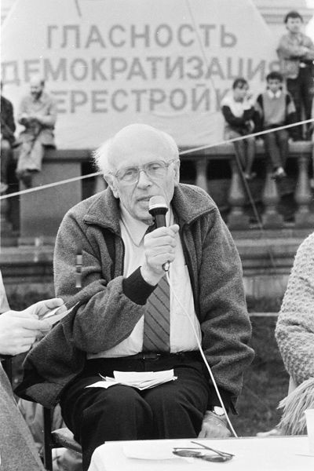
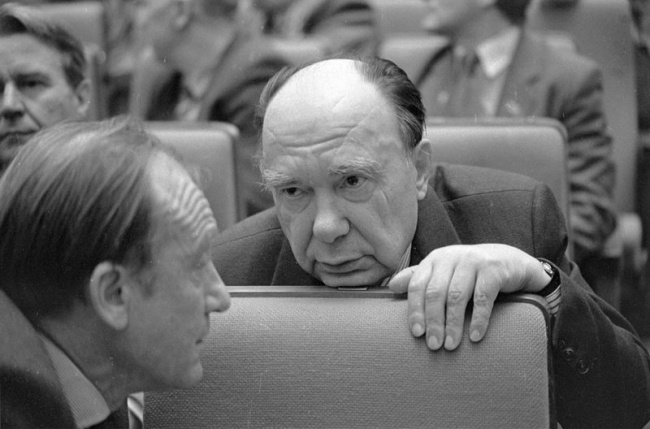

http://actualhistory.ru/ussr-breakup-1
Михаил Мухин
Почему распался СССР?
Распад СССР стал … трудно подобрать правильную и исчерпывающую характеристику. Одной из величайших гуманитарных катастроф? Да. Одним из крупнейших событий всемирной истории XX в.? Несомненно. Завершением одного из самых грандиозных социальных экспериментов человечества? Безусловно. Длить список риторических вопросов можно ещё долго. И – тем не менее. Почему ЭТО случилось? Почему ЭТО случилось столь внезапно? Можно ли было ЭТОГО избежать? Эти вопросы отнюдь не риторичны, на эти темы, не прекращаясь, идут дебаты различной степени политизированности и академичности, по этим проблемам своё мнение имеет 12 человек из дюжины, и мнение оное высказывает страстно и пламенно. В конце концов, среди нас живут миллионы очевидцев тех событий и каждый из них имеет свою (разумеется, единственно верную) версию ответов на эти роковые вопросы.
Известно высказывание «Лицом к лицу лица не увидать». С точки зрения историка в этом есть своя логика – излишняя хронологическая приближённость исследователя к предмету исследования имеет как свои плюсы, так и минусы. Источников по истории рассматриваемых процессов и феноменов вроде и много, но практически все они политически ангажированы, а те, которые теоретически должны быть политически нейтральны – малодоступны. Запредельная политизированность тематики вынуждает исследователя постоянно быть готовым к отражению нашествия очередной генерации борцов против кровавогорежима/очернителейвеликойстраны; каждый читатель, опираясь на свои собственные воспоминания, как дважды два докажет, что «всё было не так». В общем, ну её в болото, эту историю недавних дней. Вот пройдёт лет 70–80, и будут наши потомки изучать конец XX в. так же спокойно и академично, как мы сейчас исследуем конец века XIX…
И тем не менее – я всё таки сел писать этот текст. Тому есть несколько причин. Во-первых, я полагаю, что уже сейчас надо очертить хотя бы общий контур круга проблем и сюжетов, составляющего комплекс событий, который мы привыкли называть «распад СССР». Да, он неизбежно будет не полон, но всякое исследование начинается с постановки проблемы, нес па? Во-вторых, именно ввиду чрезмерной политизированности изучаемых вопросов было бы целесообразно уже на этом, «нулевом» этапе историографии, отсеять откровенно фантастические и фолькисторические версии и гипотезы. И наконец, в третьих… наверное это будет нескромно (уж не настолько я высоко ставлю свои нижеследующие размышления), но мнится мне, что если уже сейчас мы хоть вчерне, хоть в первом приближении, не осознаем, что и как случилось с нашей страной 20–30 лет назад, то не исключён вариант, что спустя 70–80 лет в хитросплетениях «Перестройки», «Нового мышления» и «Парада суверенитетов» действительно разберутся. Действительно — академично, без митинговщины и дешёвой политической демагогии. Действительно – потомки. Да только – не наши.
Ну, и совсем напоследок. Данные тексты я рассматриваю не столько как историческое исследование, сколько как эссе на исторические темы. Соответственно, ссылочный аппарат будет сокращён до минимума, а возможно и вовсе обойдёмся без него. В настоящий момент завершённого цикла статей не существует, я выкладываю статьи по мере написания. Я хорошо понимаю, что мой опус, вероятно, вызовет возражения у многих его прочитавших. Что ж, я буду благодарен за любой диалог, нацеленный на поиск истины. Вряд ли мы её найдём именно сейчас, но пока ищем – надежда остаётся.
Примечаение от меня: в раьботе хорошо разобрано "что происходило", но Горбачёв подан в виде "хотел как лучше". Я считаю, что уничтожение СССР было намеренным. Наглядно: во-первых -- массовая смена партийного начальства горбач1вым "под себя" (о чём обычно умалчивается), во-вторых -- всё это можно было резко прекратить, увидев, что пошло вразнос, в-третьих -- были спущены с поводка антисоветские шавки, что никак нельзя было сделать нечаянно. Ну и затем -- то, что творилось на международной арене, полная сдача позиций, за что Нобелевку и получил -- за продажу Родины.
ПАРА СЛОВ О ЗАСТОЕ или ЧТО СОБСТВЕННО «ЗАСТОЯЛОСЬ»?
Думается, что начать нужно издалека и загодя. Можно сказать, почти с послевоенных времён. Во второй половине XX в. экономическая и социальная структура ведущих стран Запада существенным образом изменилась. В 1962 г. Белл предложил для результата этого метаморфинга новый термин – постиндустриальное общество. Не будем углубляться в дебри терминологических диспутов – удачно это определение или нет. Очевидно, что «западное» общество 1960-70-х так же серьёзно отличалось от себя же обр. 1920-30-х, как «империализм» 1910-х отличался от классического капитализма 1830-х. Причём одним из наиболее явных, бросающихся в глаза, отличительных признаков «постиндустриального» общества стало наращивание роли научных исследований, и постепенное сращивание науки и производства. В СССР изменение в структуре стран Запада не замеченными не остались. Однако открытым оставался вопрос о форме и сути реакции на этот новый вызов. Анализ статей в советской научной периодике показывает, что новации в экономике западных стран отслеживались своевременно, их опыт изучался, и, по мере возможностей, его пытались использовать на отечественной почве. Однако для эффективного использования новых методов требовались соответ-ствующие организационные, а в перспективе – и социальные трансформации. И как только проекты этих переустройств входили в противоречие с буквой марксистско-ленинского учения, сформулированного в начале века, – включался механизм молчаливого сопротивления, в котором, как в болоте, вязли самые смелые инициативы.
Надо отметить, что важность доминирования именно
в сфере технических разработок отлично осознавалась сталинским руководством. И,
как большинство проблем, стоявших перед СССР в те годы, решать её пытались
традиционным институциональным путём. Что бы решить проблему – надо создать
орган, предназначенный для решения этой проблемы. Ещё в январе 1948 г. (!!!) под
председательством В.А. Малышева был создан государственный комитет СМ СССР по
внедрению передовой техники в народное хозяйство. Однако в 1951 г. по неясным
причинам этот комитет был ликвидирован. Тем не менее, понимание значения этой
проблемы, видимо, сохранилось, и 1955 г. по инициативе всё того же Малышева был
создан Государственный комитет СМ СССР по новой технике (Гостехника). Возглавил
новый госком сам Малышев. Функции Гостехники были достаточно обширны, а
персональные качества её главы – легендарный нарком танковой промышленности,
заместитель предcедателя Совмина СССР – давали основания ожидать от новой
структуры крупных свершений. Примерно в это же время МИДу было вменено в
обязанность создать при посольствах в ведущих экономических странах атташаты по
науке и технике. По сути, формировалось новое ведомство, нацеленное на
осуществление революционной перестройки производительных сил в масштабах всей
страны. Сам термин «научно-техническая революция» тогда не использовался, но,
несколько модернизируя лексикон, можно сказать что в СССР был создан штаб НТР.
Однако в 1957 г. Малышев умер и… казалось, из дела вынули душу. Причём формально
курс остался тот же, но ведомство начали сотрясать волны периодических
реорганизаций и реструктуризаций, причём каждое очередное переустройство вело к
дальнейшему снижению веса и значения очередного органа «по внедрению новой
техники», и превращению его инструкций и решений во всё более необязательные
бумажки, никого ни к чему не обязывающие. Итак, революция не случилась. Остался
вопрос — ПОЧЕМУ?
Теория НТР.
 Собственно,
концепция научно-технической революции стала своеобразным ответом советской
идеологии на западную модель постиндустриального общества. Смысл концепции НТР
сводился к акцентированию внимания на научных и технических достижениях. При
этом как социально-экономические факторы, как породившие эти достижения, так и
ставшие результатом оных, аккуратно выводились за скобки, что позволяло не
затрагивать незыблемые догмы марксизма-ленинизма. Собственно, уже с 1950-х годов
советское руководство в целом понимало, что надвигаются некие революционные
события. В журналах «Коммунист», «Вопросы экономики» и др. всё чаще обсуждалась
«вторая промышленная революция», «революция науки и техники» и тому подобные
словосочетания. Однако «революция» грозила привести на вершину политического
Олимпа научно-техническую интеллигенцию, поэтому партийные круги старались,
насколько возможно, снизить градус дискуссии и заменить «научно-техническую
революцию» на «научно-технический прогресс».
Собственно,
концепция научно-технической революции стала своеобразным ответом советской
идеологии на западную модель постиндустриального общества. Смысл концепции НТР
сводился к акцентированию внимания на научных и технических достижениях. При
этом как социально-экономические факторы, как породившие эти достижения, так и
ставшие результатом оных, аккуратно выводились за скобки, что позволяло не
затрагивать незыблемые догмы марксизма-ленинизма. Собственно, уже с 1950-х годов
советское руководство в целом понимало, что надвигаются некие революционные
события. В журналах «Коммунист», «Вопросы экономики» и др. всё чаще обсуждалась
«вторая промышленная революция», «революция науки и техники» и тому подобные
словосочетания. Однако «революция» грозила привести на вершину политического
Олимпа научно-техническую интеллигенцию, поэтому партийные круги старались,
насколько возможно, снизить градус дискуссии и заменить «научно-техническую
революцию» на «научно-технический прогресс».
Тем не менее, «технократам» удалось на первом этапе одолеть «идеологов» и в программе КПСС (1961 г.) использовался именно термин «НТР». Однако, если внимательно вчитаться в наполнение смысла этого термина, то обнаруживается, что НТР по программе КПСС сводилась к укреплению связи науки и производства, автоматизации управлением технологических процессов, внедрению ЭВМ в производ-ство, использованию новых типов энергии, и т. п. То есть реально в рамках НТР предполагалось решать традиционные задачи индустриального общества. Соответственно, и весь западный опыт, предлагаемый к изучению и использованию, рассматривался именно в этом формате. На практике такой подход привёл к тому, что все разговоры об НТР как именно РЕВОЛЮЦИИ в первой половине 1960-х так и не перешли в практическую форму, оставшись набором благих пожеланий. Ситуацию попыталось изменить новое руководство. Так, в 1968 г. Брежнев заговорил о нарастающем отставании от ведущих стан Запада в области передовых технологий и потребовал резко повысить темпы НТР. Более того, НТР характеризовалась как один из главнейших фронтов соревнования 2-х систем. Вообще, надо сказать, что первые годы «брежневской эпохи» характеризовались некоторым раскрепощением общественной мысли.
На практике же попытки перейти от деклараций к стадии практического внедрения столкнулись с объективными обстоятельствами, а именно – с крайне низким образовательным уровнем значительной части советского истеблишмента. Скажем, председатель Госкомцен в 1975–1986 гг. Н.Т. Глушков окончил Сарапульский финансово-экономический техникум, и на этом образование закончил. В.Н. Новиков, имея за плечами багаж, приобретённый лишь в Новгородском индустриально-механическом техникуме, в 1960–1965 гг. возглавлял Совнархоз СССР, а в 1965–1980 гг. был заместителем председателя Совмина СССР. В.Э. Дымшиц завершил обучение в московском автогено-сварочном учебном комбинате. Между тем он в 1961–62 гг. возглавлял Госплан СССР, а в 1962–1985 гг. так же был зампредом Совмина СССР. И такие примеры можно множить и множить. Следует учитывать, что ситуация тут определялась не случайным порядком назначения тех или иных чиновников, а сознательно проводимой кадровой политикой. Стремясь со-хранить «рабочий» характер КПСС, партийное руководство ограничивало приём в ряды партии научно-технической интеллигенции. Но, с другой стороны, как правило, на руководящую работу «нечлену» партии прорваться было практически невозможно. Исключения из этого правила конечно были, но погоды не делали. В результате высококвалифицированные технические специалисты уже на организационном уровне отсекалась от доступа к руководящим институциям.
Советская наука.
Тут следует сделать некоторое отступление. Говоря о сращивании науки и производства и проблемах этого процесса в СССР по сравнению с Западом, следует учитывать, что Наука как комплекс организационных структур и интеллектуальной деятельности в советском исполнении существенно отличалась от положения дел за рубежом. На Западе основная масса научных сотрудников была сосредоточена в ВУЗах и научных подразделениях крупных фирм. В СССР базовой единицей научной организации был научно-исследовательский институт (НИИ) входящий в систему академических учреждений или подчиняющийся профильному ведомству, причём престижность академических институтов была существенно выше. Тут, опять-таки было не без исключений, но общий тренд был именно таков. Соответственно именно там сосредотачивались лучшие кадры, заявки этих учреждений на научное оборудование выполнялись в первую очередь, и т. д., и т. п. Нельзя сказать что советская система организации научных изысканий была лучше или хуже западной. Она было просто — другой. При этом очевидно, что основная масса достоинств советской системы организации Науки приходилась именно на область фундаментальных исследований, а вот с организацией внедрения научных результатов в хозяйственную деятельность эта система справлялась традиционно хуже.
Если распределить зарегистрированные изобретения по отраслям экономики, то видно, что СССР на протяжении 1960-80-х гг. стабильно отставал от передовых стран Запада по числу изобретений в области информатики (ключевая отрасль в смысле построения постиндустриального общества), химии, сферы услуг (сюда, среди прочего, относятся всевозможные новации в области изготовления пищи, тканей и одежды) и экологии. Разумеется, были области, в которых лидировала и советская наука. Скажем, СССР держал первенство по числу изобретений в области сельскохозяйственных технологий и обработки металлов. Беда была в том, что это были отрасли, важные для индустриального, а не постиндустриального общества.
НПО
В СССР существовало обширная сеть заводских и отраслевых КБ, который, теоретически, были ответственны за проведение научно-исследовательских и опытно-конструкторских работ (НИОКР). Однако реально заводские КБ практически постоянно были заняты непосредственным обслуживанием текущего производства, да и ведомственные конструкторские бюро так же очень редко занимались инновационными наукоёмкими темами, будучи загруженными прикладными работами. Очевидно, руководство СССР адекватно представляло себе и сложившееся положение дел, и потенциальные угрозы, из оного положения проистекавшие. В результате было решено создать особую категорию объединений предприятий – научно-производственные объединения. Первое НПО в СССР было создано в 1968 в Балашихе (занималось криогенным машиностроением), за ним последовали «Пластполимер» в Ленинграде и «Светлана» в Москве, после чего рост НПО принял довольно широкие масштабы. Сутью НПО было объединение под единым руководством (как правило, это было «по совместительству» ещё и руководство ведущего НИИ) научно-исследовательских, опытно-конструкторских, мелкосерийных и серийных учреждений и предприятий. Причём главным для НПО было даже не выполнение плана по валу (хотя от этого НПО никто не освобождал), а разработка технических новаций с последующим их внедрением в «обычную» промышленность. Замысел был хорош, но… разница в техническом оснащении обычных, рядовых советских предприятий и заводов из состава НПО был столь велик, что, за редкими исключениями, распространить их технологические прорывы за пределы собственно НПО не удалось. Научно-производственные объединения так и остались «вещью в себе и для себя».
| Год | 1973 | 1975 | 1980 | 1985 | 1988 |
| Число НПО в СССР | 80 | 108 | 192 | 236 | 451 |
| Удельный вес НПО в промышленности СССР по объёму промышленности (%) | 0,9 | 1,3 | 2,3 | 2,4 | 5,6 |
| Удельный вес НПО в промышленности СССР по численности персонала (%) | 0,8 | 1,1 | 2,4 | 2,5 | 5,9 |
 Как
видно из таблицы, вес НПО в общем промпроизводстве СССР в последнее десятилетие
советской власти рос весьма неспешно, и лишь в начале Перестройки пытался резко
интенсифицироваться. Однако упущенное время – ресурс, к сожалению,
невосполнимый…
Как
видно из таблицы, вес НПО в общем промпроизводстве СССР в последнее десятилетие
советской власти рос весьма неспешно, и лишь в начале Перестройки пытался резко
интенсифицироваться. Однако упущенное время – ресурс, к сожалению,
невосполнимый…
Уже на заре Перестройки, видя, что попытка
прорыва в области сращивания науки и производства через сеть НПО не удалась,
руководство СССР пыталось сделать ставку на Межотраслевые научно-технические
комплексы (МНТК). Предполагалось, что слом ведомственных барьеров в рамках
единого МНТК позволит добиться существенного ускорения внедрения технических
новаций. Первый МНТК «Металлургмаш» был создан в 1985 г., и занимался
разработкой высокопроизводительных металлургических машин и агрегатов, в том
числе и с ЧПУ. По оценке ГКНТ 36% созданного «Металлургмашем» оборудования
превосходили мировой уровень, а 7% – вообще не имели зарубежных аналогов. Всего
в 1985–88 гг. было создано 23 МНТК. Наиболее успешным из них был МНТК
«Нефтеотдача», разрабатывавшая методы повышения отдачи нефтеносных пластов
(отдачу удавалось поднять в 4–5 раз). В 1988 г. благодаря внедрению методов МНТК
«Нефтеотдача» при плане нефтедобычи в 6,6 млн. т. реально было добыто 7,6 млн.
т. Характерной приметой новых веяний было появление первой инновационной
корпорации в области сферы услуг – МНТК «Микрохирургия глаза». Успех детища С.
Фёдорова был основан на том, что «Микрохирургия глаза» ориентировалась не на
госзаказ, а на потребности населения. Высокий уровень услуг вкупе с доступными
ценами привели к лавинообразному росту клиентуры. Если в 1988 г. МНТК
«Микрохирургия глаза» произвела 122 тыс. операций, то в 1989 г. число операций
возросло до 200 тыс. Вопрос о том, смогли бы МНТК при сохранении СССР, решить в
Советском Союзе проблему сращивания науки и производства, остаётся открытым.
Однако в ряде случаев «слишком поздно» — это и есть «никогда». МНТК представляли
собой вершину экономической пирамиды СССР, а в период Перестройки начала
рассыпаться сама пирамида, поэтому потенциал системы НПО и МНТК так и остался
невостребованным.
Почему «РС» скушал «ЕС» или сказ о том, как СССР делал-делал компьютеры, а я почему-то на «Пентиуме» текст набираю…
Как уже говорилось выше, одним из важнейших (если не просто важнейшим) для создания «постиндустриального общества» направлений технического прогресса были исследования в области информатики и кибернетики. Общепринятым ныне среди большинства «имеющих своё мнение» является постулат, что, дескать, СССР на кибернетику наплевал, заклеймив её «продажной девкой империализма», за что и поплатился. Возразить тут трудно – ваш покорный и сам не на ЭВМ серии ЕС какой-то там по номеру этот текст набирает, а на самой что ни на есть буржуинской РС с окоянным «интеллом» инсайд. С другой стороны, вроде, при изучении истории отечественного компьютеростроения, получается, что, в общем, не так уж мы и отстали на старте от вышепоименованных буржуинов… так что ж там случилось, и на какой ступеньке наши эвеэмы ихним «компьютерам» уступили? Давайте разбираться вместе.
К вопросу о «продажных девках» и трёх поколениях. Появление в США первой в мире программируемой ЭВМ «Эниак» (1946 г.) интенсифицировало работы в этом направлении во всём мире. В результате теоретических исследований были сформулированы 2 базисных принципа, на которых основаны все, вплоть до нынешних, компьютеры:
1. в памяти ЭВМ хранятся не
только данные, но и сама программа;
2. и то и другое хранится в виде многозначных двоичных чисел.
Так как для перепрограммирования «Эниака» требовалась (по крайней мере до 1948 г.) его перекоммутация на физическом уровне, он, строго говоря, полноценной ЭВМ не был. Первыми ласточками Первого поколения компьютеров стали британский «Эдсак» (1949 г.), американский «Элвак» (1950) и советский «МЭСМ» (1951 г.). Как видим, на этом этапе исследования в СССР и за рубежом развивались практически синхронно. Хотя изначально С.А. Лебедев создавал МЭСМ как своеобразный макет «нормальной» вычислительной машины, впоследствии было решено загрузить МЭСМ реальными расчётами, необходимыми для решения практических народохозяйственных задач. На её основе была разработана серия машин БЭСМ, которые для своего вре-мени относились к числу лучших в мире (БЭСМ-1 на международной конференции в Дармштадте в 1954 г. была признана лучшей ЭВМ Европы). Развитие вычислительной техники действительно вызвало реакцию советской идеологической машины. Однако, вопреки широко распространённым мифам, это была отнюдь не травля неких «продажных девок». Основным трендом публикаций на эту тему было педалирование тезиса «мы – первооткрыватели, советские ЭВМ – самые лучшие в мире, а западная кибернетика обречена разделить судьбу всего западного общества». То есть впасть в ничтожество и быть раздавленной победной поступью Советского Союза. Действительно, постепенно тон выступлений становился всё более брутальным, эволюционируя в сторону рассуждений о «продажной девке империализма». Но относилось это а) исключительно к западной кибернетике и б) исключительно к тем западным авторам, которые в русле футурологических изысканий о перспективах внедрения компьютеров в жизнь, высказывали предположения о постепенном вытеснении человека из сферы материального производства, об исчезновении пролетариата как производственного класса, и тому подобных вещах. Разумеется, все эти филиппики в адрес западных фу-турологов, посягнувших на святое (диктатура пролетариата – основа основ марксизма, а вы тут пролетариат как класс аннулировать вздумали!), практически никак не отразились на развитии советских ЭВМ. Переехавший из Киева в Москву и возглавивший в 1952 г. Институт точной механики и вычислительной техники Лебедев успешно завершил создание БЭСМ (1954 г.), и в том же году началось производство первой серийной советской ЭВМ «Стрела».
Следует, однако, учитывать, что на тот момент преимущества и перспективы ЭВМ первого поколения (на электролампах в качестве элементарной базы) были далеко не очевидны. Существовала отработанная система осуществления сложных расчетов коллективами хорошо организованных дисциплинированных вычислителей, оснащённых арифмометрами. Эти коллективы функционировали (и, надо признать, вполне успешно функционировали) под руководством профессиональных математиков, которые совершенно не горели желанием отказываться от привычных методик и переходить на громоздкие, не мобильные и постоянно ломающиеся ЭВМ первого поколения. Кроме того, к середине XX в. уже был накоплен опыт успешного применения аналоговых вычислительных машин, в которых характеристики реальных процессов моделировались аналогичными физическими процессами. Эти машины были очень узкоспециализированы, но в своих областях намного превосходили компьютеры первого поколения. В результате первые ЭВМ были вынуждены развиваться в условиях жёсткой конкуренции, которую они далеко не всегда выдерживали.

Для развития копьютеростроения характерно очень быстрая смена элементарной базы. Если для 1950-х годов ЭВМ на электронных лампах относились к числу новейших, то в начале 1960-х начался переход к компьютерам второго поколения. Эти машины основывались на элементарной базе полупроводниковых транзисторов. Кроме того, в этот период начинают формироваться общепринятые (в том или ином объёме) языки программирования. На Западе провозвестниками новой эпохи стали IBM-709, в СССР – М-220 и «Минск».
Наконец, уже в конце 1960-х на сцену вышла третье поколение компьютеров, основанных на интегральных схемах и ориентированных на языки программирования высокого уровня. За рубежом наиболее известными в этом ряду стали IBM −360 и PDP-11, в СССР — «семейство» ЕС. Собственно, именно в этом «поколении» впервые появляется понятие «семейство машин». Именно в этот период ввиду резкого роста производительности с одной стороны, и снижения габаритов и стоимости, с другой – ЭВМ начинают стремительно внедряться как в промышленную, так и в научную практику. Хотя в конкретных параметрах заграничные машины, как правило, превосходили советские аналоги, общий уровень работ в области вычислительной техники по обе стороны границы на тот момент был примерно равен. Во второй половине 1960-х гг. на многих советских предприятиях появляются вычислительные центры (ВЦ).
Переломным в этом плане стал рубеж 1960-70-х годов, когда «Интел» представила миру первую модель микропроцессора (1971 г.). В СССР информация о новой конструкции фурора не сделала. На тот момент процессоры «больших» ЭВМ превосходили микропроцессоры по быстродействию и надёжности. ВЦ в СССР создавали на крупнейших предприятиях, для которых вопрос компактности и стоимости ЭВМ был не критичен. Напротив, в США на тот момент насчитывалось 14 млн. самостоятельных фирм, для большинства которых «большой» компьютер был не по карману. В результате в Америке сформировался огромный потенциальный рынок персональных компьютеров (ПК). Собственно, в 1970-е годы отставание в вопросах производства микропроцессоров мало беспокоило советское руководство. Магистральным путём развития считалось освоение компьютеров IV поколения, базирующихся на больших интегральный схемах (БИС), которые появились в СССР и США практически одновременно. Совершенствуя БЭСМ-6, советские конструкторы разработали «Эльбрус-Б». Этой или аналогичными ма-шинами в 1970-80-е гг. были оснащены практически все советские ВЦ. Од-нако в 1980-е годы значение работ в области микропроцессоров резко возросло. Автоматизация научных и экономических расчётов, управление технологическими процессами, лавинообразный рост пользователей вычислительных сетей (ARPANET — 1969 г., Usenet — 1980 г., BITNET — 1981 г., NSFNet — 1984 г. и мн. др.) – всё это резко повысило актуальность идеи персонального компьютера.
Важность разработок в области создания микропроцессоров возросла многократно, а СССР был поставлен перед необходимостью срочно навёрстывать отставание. С учётом того, что на Западе новый процессор появлялся в среднем через каждые 2–3 года, «догнать» ведущие капиталистические страны, опираясь только на собственные разработки, было практически невозможно. В этой ситуации было решено начать с копирования западных образцов. Однако тут на первый план вышли проблемы, о которых мы говорили в первой части статьи. Слабая приспособленность советской промышленности к освоению новых, наукоёмких технологий; неспособность «обычной» промышленности восприять и воспроизвести достижения отраслевых НПО, отстутствие координирующего штаба НТР и межведомственная разобщённость (производство вычислительной техники в СССР было распределено между Минрадиопромышленности, Минприборостроения, Министерством электронной промышленности и Минсвязи, а так же рядом других ведомств) привели к тому, что советские «клоны» заграничных микропроцессоров не только кардинально отставали от своих прародителей по времени освоения в производстве, но и существенно уступали им по важнейшим техническим параметрам. В результате в 1980-е гг. СССР регулярно прибегал к закупкам ПК за рубежом. Возможно, к середине 1990-х отставание в области элементарной базы удалось бы наверстать, но этих лет у СССР уже не было.
Проект Глушкова или «последний из могикан».
В тесной связи с вышеизложенными сюжетами лежит и одна из последних попыток спасти социалистическую систему в её традиционной форме, наиболее близкой идеалам отцов-основателей. Рост экономики неизбежно ведёт к усложнению управления. Очевидно, что идея плановой экономики, имея большое число «плюсов», имела и немало «минусов». Одним из негативных следствий идеи построения плановой экономики было то, что любое изменение годового плана вело к лавинообразной волне пересогласовываний и корректировок планов смежников. Требование срочно увеличить производство, скажем, самолётов, ставило на повестку дня вопрос о внесении изменений в планы по производству алюминия, стали, фанеры, и т. д., и т. п. Более того, увеличение авиапроизводства означало повышенную нагрузку на энергетику — менялись планы генерации электротока; требовалось перевести больше груза — вносились корректировки в движение железнодорожного подвижного состава и добычу угля для паровозов. Это, в свою очередь, генерировало волну изменений в планах угольной промышленности, которая предъявляла новые требования на крепёж (наркомлеспром) и оборудование (наркомтяжпром). Эти волны корректировок планов могли прокатываться по системе экономического планирования несколько раз. Если же учесть, что такая «волна» могла быть (и, как правило, – была) не одна, то их взаимовлияние могло превратить процесс взаимоувязок наркоматских планов в подлинно «бесконечную историю». На этом основании ряд отечественных исследователей вообще ставят под сомнение плановый характер советской экономики [1]. Очевидно, что внедрение автоматизированных систем управления народным хозяйством на основе ЭВМ давал надежду существенно упорядочить эту сферу планирования.

В 1962 г. академик В.М. Глушков выдвинул проект создания государственной сети вычислительных центров (ГСВЦ). Эта сеть виделась как инструмент управления экономикой Советского Союза на всех уровнях — от Госплана СССР до заводского цеха. По масштабности замысла проект ГСВЦ можно уподобить ГОЭЛРО или прорыву в космос. По стоимости это тоже было вполне сопоставимо с космической программой. Структурно ГСВЦ должна была состоять из главного центра (диспетчера всей системы) нескольких десятков опорных центров и низовой сети. Задачи экономического планирования должны были быть сосредоточены именно на опорных центрах, между которыми планировалось проложить высокоскоростные линии связи для координации отраслевых и региональных планов. Низовая сеть должна была с одной стороны, решать текущие задачи предприятий и их объединений, а с другой – формировать поток исходной информации для опорных центров.
На тот момент проект Глушкова был рассмотрен, но и только. «Второй подход к снаряду» состоялся в 1970-е гг. К этому времени в мире уже существовало несколько электронных сетей, и Глушков мог оперировать накопленным в ходе их эксплуатации опытом. Теперь предполагалось в основу ГСВЦ положить опорную сеть особо мощных вычислительных центров коллективного пользования (ВЦКП). Вся территория СССР должна была (по плану) быть разделена на регионы, в каждом из которых создавался ВЦКП, к которому через местные линии связи подключались ВЦ и терминалы на предприятиях и органах управления экономикой. Таким образом осуществлялась оперативная связь пользователей из любого региона и любого ведомства друг с другом. Для руководства этой сетью предлагалось создать министерство или государственный комитет информатики. В завершённом виде ГСВЦ должна была бы состоять из приблизительно 200 ВЦКП, нескольких десятков тысяч ведомственных ВЦ и нескольких миллионов терминалов. Для нескольких особо важных абонентов (класса Госплана СССР) предполагалось создать подсеть на широкополосных каналах. На опорные ВЦКП возлагались функции:
1. хранения региональных баз
данных;
2. решения социально-экономических задач регионального и межре-гионального
характера;
3. решения задач для абонентов, не располагающих собственными ВЦ;
4. обеспечение резервной мощности при решении особо крупных задач, что позволяло
рассчитывать мощность ГСВЦ не на пиковые, а на средние нагрузки, за счёт чего
стоимость проекта несколько снижалась.
 Безусловно,
проект Глушкова был революционен и, в случае его осуществления, сулил многое.
Однако отношение к нему с самого начала было весьма двойственное. «Технократы» –
одобряли и всячески пропагандировали. Экономисты и управленцы-хозяйственники
проявляли скепсис. С начала 1980-х подготовительные (а иных и не начинали)
работы по созданию ГСВЦ были приостановлены, а после смерти Глушкова в
1982 г. – и вовсе свёрнуты.
Безусловно,
проект Глушкова был революционен и, в случае его осуществления, сулил многое.
Однако отношение к нему с самого начала было весьма двойственное. «Технократы» –
одобряли и всячески пропагандировали. Экономисты и управленцы-хозяйственники
проявляли скепсис. С начала 1980-х подготовительные (а иных и не начинали)
работы по созданию ГСВЦ были приостановлены, а после смерти Глушкова в
1982 г. – и вовсе свёрнуты.
Собственно говоря, это была едва ли не последняя
попытка реанимировать именно советскую, социалистическую идею планового
хозяйства, подняв уровень экономического планирования и централизованного
управления экономикой на принципиально новый уровень. Эта попытка была
блокирована, утоплена в словопрениях и, в конечном итоге, похоронена верхним
эшелоном советского истеблишмента 1970-х гг. Я не случайно занёс в стан
противников создания ГСВЦ и «экономистов». Дело в том, что приблизительно в те
же годы в СССР пытались внедрить в экономику идеи хозрасчёта и управления с
использованием рыночного инструментария – «реформа Косыгина». Эти начинания
завершились, в итоге, безрезультатно, но на тот момент противопоставление было
очевидно. Если Глушков предлагал техническое усовершенствование плановой
экономики, то Косыгин отстаивал идею модификации экономической системы в сторону
НЭПовских традиций или, если угодно, «китайского пути».
Разруха — «в головах», а Застой –???
Трагизм ситуации заключался в том, что в момент, когда надо было принимать стратегическое решение – по какому из двух путей двигаться, победила третья точка зрения – ничего не менять. Тот самый верхний эшелон истеблишмента принял самое страшное (для страны в целом), самое самоубийственное решение – оставить всё как есть. Сложившаяся система советских «хозяйственников», в целом, устраивала. В её рамках они знали «правила игры», границы дозволенного и – уже – занимали командные высоты. Реформа – что «по-глушковски», что «косыгинская» – грозили эти правила изменить, а означенные высоты передать в другие руки. Это была угроза близкая и понятная. А стратегическое отставание от Запада, и – что страшнее – нарастание этого отставания – виделись некими отвлечёнными умствованиями яйцеголовых референтов, которые, небось, сами на нагретые места метят. Вот именно в этой позиции – на наш век хватит, зачем что-то менять, если я уже министр, «мы академиев не кончали» – и заключается, на мой взгляд, суть Застоя. Застой – это не шепелявый выговор больного человека, которого в очередной раз заставили выйти на трибуну, это не программа «Время» по обоим всесоюзным каналам и уж разумеется, это не преследования «самиздатчиков», о существовании которых не подозревало 99% населения СССР. Это отказ от развития в пользу сытого сегодня. Причём от развития страны в целом отказались считанные сотни советских чиновников высшего эшелона. И разумеется — в пользу своего персонального «сытого сегодня».
Сталинская система ротации кадров была довольно кровава и весьма жестока. «Социальный лифт» работал бесперебойно не в последнюю очередь потому что «наверху» постоянно открывались новые вакансии. А обеспечивались таковые вакансии регулярной «прополкой» высших слоёв пирамиды власти. «Не справился – отвечай!». Эта логика с одной стороны, выступала отличным мотиватором трудовой активности, а с другой, открывала широкие перспективы карьерного роста. Постепенное смягчение нравов в 1950-70-е годы привело к тому, что скорость обновления кадров в высших эшелонах резко снизилась. Чиновники «засиживались» на высоких постах, и начинали рассматривать свои ведомства в роли неких наследственных вотчин. Известен анекдот:
«– Деда, а я смогу стать лейтенантом?
– Сможешь, внучек, сможешь… – отвечает дед в полковничьих пого-нах.
– А полковником?
– И полковником сможешь…
– А генералом?
– Нет, внучек, вот генералом не сможешь… У генерала свой внук есть…».
Анекдот-то он, конечно, анекдот, да в нём намёк. Характерно, что в точности такие настроения отражались в общественном настроении и 1920-х гг. Как писал Маяковский:
Шел я верхом,
шел я низом,
строил мост в социализм,
не достроил
и устал
и уселся у моста.
Травка выросла у моста.
По мосту идут овечки.
Мы желаем
очень просто
отдохнуть у этой речки...
Тогда, в годы Большого рывка, сталинское
руководство просто списывало желающих «посидеть у моста» по категории «не
справился с порученным делом». В 1960-е на это не решились. И тогда пришёл
Застой…
_____________________________________
[1] См., например, Маркевич А.М. Была ли советская экономика плановой?
Планирование в советских наркоматах в 1930-е годы // экономическая история.
Ежегодник. М., 2003.
НАКАНУНЕ КРАХА (Первая половина 1980-х)
К середине 1980-х годов положение дел в СССР, казалось, не должно было вызывать беспокойства у советского руководства. Не то что элита Советского Союза, но даже подавляющее большинство заокеанских советологов предрекали Стране Советов долгое существование. И тем не менее, как нам ныне известно, именно эти годы стали последними годами существования государства, известного как Союз Советских Социалистических Республик. Думается, будет целесообразно рассмотреть подробнее комплекс факторов и тенденций, который традиционно обобщают под единым названием «исторические предпосылки Перестройки».
Строго говоря, начинать тут надо с того, что СССР так и не приступил к построению постиндустриального общества, но этому практически целиком была посвящена наша прошлая статья, поэтому на этом сюжете мы останавливаться не будем. Но и забывать про эти материи нам не след. Итак, что ещё, помимо проблем половинчатости и незавершённости НТР, обусловило неизбежность Перестройки в СССР?
В «кольце фронтов» или борьба за мир до полного уничтожения противника
Стержнем, вокруг которого выстраивалась вся внешняя политика СССР (да и в общепланетарном масштабе этот конфликт был не на последнем месте), было противостояние Советского Союза и США. Одной из важнейших форм этого противостояния было поддержание военно-стратегического паритета. Однако в этом состязании США имели ряд стратегических, практически некомпенсируемых, бонусов. Во-первых, объём ВВП США на тот момент превосходил аналогичный показатель СССР, по разным оценкам, в 6–8 раз. Во-вторых, США обладали намного менее протяжённой сухопутной границей, да и соседствовали они со странами, которые заведомо не могли угрожать безопасности Соединённых Штатов. В-третьих, в этом противостоянии США могли опереться на военный и экономический потенциал своих союзников по НАТО, в то время как возможности СССР получить соответствующую поддержку со стороны партнёров по ОВД были существенно ниже. В результате, пытаясь удержать баланс, СССР был вынужден пойти на существенные перекосы как в экономическом развитии, так и в научных разработках, выделяя всё больше средств именно на «гонку вооружений», которая в относительных величинах была для Советского Союза намного более разорительна, чем для США и его союзников. Так, к середине 1980-х годов в СССР на потребление шло лишь около половины госрасходов, в то время как в странах Запада этот показатель колебался около 70-80%. Физический износ оборудования в советской промышленности среднем составлял 40%, а по отдельным отраслям – до 50-60%, в результате чего импорт оборудования стал необходимым для элементарного поддержания производственных процессов.
Важнейшим для понимания событий второй половины 1980-х годов является факт резкого изменения внешнеполитической конъюнктуры на рубеже 1970-80-х годов. Причём силу тех или иных обстоятельств практически все тенденции 80-х были сугубо негативны для СССР. Итак, чем роковой 1979 ударил по интересам СССР?
1. Весной 1979 г. разразилась полномасштабная китайско-вьетнамская война. В ходе этого конфликта СССР однозначно встал на сторону Вьетнама, на Пекин было оказано дипломатическое давление, в Камрань прибыл отряд советских кораблей, в Монголии были проведены крупномасштабные маневры сухопутных войск. После этого отношение СССР с Китаем, и до того не безоблачные, ухудшились ещё более. Началось американо-китайское сближение, что объективно ухудшало геостратегическое положение Советского союза.
2. Тогда же, весной 1979 г., (строго говоря, Хомейни взял власть ещё в феврале, но исламской республикой Иран был объявлен 1 апреля) в Иране произошла т. н. «исламская революция». Нельзя сказать, что это немедленно и существенно осложнило положение Советского Союза – отношения Москвы с Ираном шахским так же были весьма натянуты, однако именно с этого момента воинствующий исламизм становится фактором международной политики. Пример Тегерана вдохновил аналогичные силы и группировки практически по всему Ближнему Востоку и Центральной Азии. Вероятно, этот момент учитывался советским руководством при принятии решения на ввод войск в Афганистан.
3. Собственно, причины ввода советских войск в Афганистан до сих пор обсуждаются и уточняются. Помимо упоминавшегося выше иранского фактора, следует учитывать, что просоветский режим в Кабуле, установленный как минимум с начала 1978 г., встречал в своей политике всё усиливавшееся сопротивление. Причём с лета 1979 г. противники кабульского режима финансировались (напрямую или через пакистанскую разведку) из Вашингтона. Возможно, в Москве опасались установления в Афганистане не исламского, а прозападного влияния. Как бы там ни было, в конце 1979 г. советские войска вступили на территорию Афганистана. Надо признать, это была очень серьёзная ошибка советского руководства. США получили ещё одну великолепную возможность дополнительно ослабить положение стратегического противника, оказывая массированную финансовую и военно-техническую поддержку анти-кармалевским (а по сути – анти-советским) силам. Причём в плане финансирования деятельности «душманов» к Вашингтону сравнительно быстро подключились Саудовская Аравия и Пакистан. На и без того не шикующую советскую экономику было возложено ещё и бремя военных расходов (приблизительно 3-4 млрд. долл. в год). Хотя потери в живой силе в ходе войны в Афганистане были мизерны (13 тысяч за 10 лет войны – т. е. потери от войны в Афганистане в год были сопоставимы с числом погибших в тот же год в ДТП), нельзя недооценивать грандиозный по масштабам и негативный по заряду идеологический эффект, который дал проекцию как на настроения советского общества, так и на международный имидж СССР. Образно говоря, Советский Союз получил «советский Вьетнам» и «анти-Гагарина» одновременно.
 4.
Между тем, в этот же период обозначилось «слабое звено» социалистического лагеря
– Польша. На рубеже 1970-80-х гг. страну постиг социально-экономический кризис,
который закономерно перерос в кризис политический. Погнавшись за ростом
потребления, Польская народная республика оказалась полностью зависимой от
иностранных финансовых вливаний. В начале 1981 г. Варшава должна была уплатить
3,5 млрд. долл. по процентам и ещё 7 млрд. – в счёт погашения кредитов. Причём,
отказ от платежей гарантированно вёл к отказу в новых кредитах, а значит – к
коллапсу экономики страны. Пытаясь спасти союзника, СССР «в порядке
интернациональной помощи» перечислил Варшаве 4,5 млрд. долл. и поставил в кредит
значительные объёмы нефти, газа и хлопка. В этой ситуации администрация Рейгана
решила выжать из выигрышного положения всё возможное. На американские банки было
оказано давление с целью не допустить реструктуризации задолженности ПНР,
одновременно Польша была исключена из круга стран, пользовавшихся «режимом
наибольшего благоприятствования». В результате пошлины на польские товары
взлетели на 300-400%, а приток валюты в ПНР закономерно сократился. США не
возражали против возобновления экономического сотрудничества, но теперь помощь в
сфере экономики жёстко увязывалась с реформами как в области экономических
отношений, так и политической системы. Одновременно была оказана техническая и
финансовая помощь антисоциалистической оппозиции, ведущее место в которой
занимала профсоюзная коалиция «Солидарность». К середине 1980-х экономический
крах ПНР стал очевидным фактом. Так как основная масса польского населения
традиционно возлагала на СССР ответственность за всё, происходящее с Польшей (и
уж заведомо – за все действия промосковских властей в Варшаве), это привело к
резкому росту антикоммунистических и антисоветских настроений в стране. Что
касается СССР, то он вынужден был с одной стороны, затрачивать огромные средства
на поддержание на плаву режима ПОРП, а с другой – наблюдать за нарастанием
влияния антисоветских сил в спонсируемой из советского бюджета стране.
4.
Между тем, в этот же период обозначилось «слабое звено» социалистического лагеря
– Польша. На рубеже 1970-80-х гг. страну постиг социально-экономический кризис,
который закономерно перерос в кризис политический. Погнавшись за ростом
потребления, Польская народная республика оказалась полностью зависимой от
иностранных финансовых вливаний. В начале 1981 г. Варшава должна была уплатить
3,5 млрд. долл. по процентам и ещё 7 млрд. – в счёт погашения кредитов. Причём,
отказ от платежей гарантированно вёл к отказу в новых кредитах, а значит – к
коллапсу экономики страны. Пытаясь спасти союзника, СССР «в порядке
интернациональной помощи» перечислил Варшаве 4,5 млрд. долл. и поставил в кредит
значительные объёмы нефти, газа и хлопка. В этой ситуации администрация Рейгана
решила выжать из выигрышного положения всё возможное. На американские банки было
оказано давление с целью не допустить реструктуризации задолженности ПНР,
одновременно Польша была исключена из круга стран, пользовавшихся «режимом
наибольшего благоприятствования». В результате пошлины на польские товары
взлетели на 300-400%, а приток валюты в ПНР закономерно сократился. США не
возражали против возобновления экономического сотрудничества, но теперь помощь в
сфере экономики жёстко увязывалась с реформами как в области экономических
отношений, так и политической системы. Одновременно была оказана техническая и
финансовая помощь антисоциалистической оппозиции, ведущее место в которой
занимала профсоюзная коалиция «Солидарность». К середине 1980-х экономический
крах ПНР стал очевидным фактом. Так как основная масса польского населения
традиционно возлагала на СССР ответственность за всё, происходящее с Польшей (и
уж заведомо – за все действия промосковских властей в Варшаве), это привело к
резкому росту антикоммунистических и антисоветских настроений в стране. Что
касается СССР, то он вынужден был с одной стороны, затрачивать огромные средства
на поддержание на плаву режима ПОРП, а с другой – наблюдать за нарастанием
влияния антисоветских сил в спонсируемой из советского бюджета стране.
5. Надо сказать, что все вышеотмеченные «дополнительные» статьи расходов – на боевые действия в Афганистане и на спонсирование обанкротившейся Варшавы – пришлись на период общего снижения валютных поступлений в советский бюджет. Руководство Советского Союза рассчитывало на существенный прирост валютной выручки за счёт ввода в эксплуатацию газопровода Уренгой – Помары – Ужгород – Западная Европа. При этом финансовое и техническое обеспечение на себя брали западные партнёры, а СССР обязывался расплатиться с задолженностью газом в течение 25 лет. В случае успешного осуществления проекта СССР мог рассчитывать на 15-30 млрд. долл. в год дополнительно. Однако США оказало беспрецедентное давление на своих европейских партнёров, в результате чего участие западных стран в проекте было резко сокращено – были уменьшены поставки оборудования, сокращены заказы советского газа, уменьшено финансирование проекта в целом. В конце концов, с опозданием в 2 года против первоначального проекта, в эксплуатацию ввели 1 «нитку» газопровода (изначально планировали 2 «нитки»). Разумеется, всё это не способствовало наполнению золотовалютных запасов страны. Одновременно США удалось достичь договорённости с ОПЕК о кардинальном снижении цен на нефть. Собственно, в данном случае, скорее всего, американские представители в первую очередь преследовали задачу улучшить положение американской же экономики. Ну а то, что попутно они в очередной раз прорезали лишнюю дырку в кошельке СССР, стало приятным дополнением. Баррель нефти, стоивший в 1985 г. 30 долл., к 1986 подешевел до 12, что означало сокращение доходов СССР на 10 млрд. долл. в год.
6. И наконец, именно в эти роковые 3–4 года, пришедшиеся на рубеж десятилетий, гонка вооружений вышла на новый уровень. США демонстративно сделали ставку на достижение не количественного, а качественного превосходства в стратегических ядерных вооружениях. Советский Союз вынуждали состязаться в наиболее провальном для СССР сегменте оборонных разработок – микроэлектронике и компьютерных технологиях. Логичным было в максимальной степени отсечь СССР от высокотехнологичного экспорта – и это было сделано. В результате резкого ужесточения деятельности КОКОМ доля высокотехнологических изделий в импорте СССР снизилась с 33% в 1975 г. до 5% в 1983 г.
Итак, на рубеже 1970-80-х гг. внешнеполитическое положение СССР резко ухудшилось, причём сразу по нескольким векторам. Этот факт постоянно надо держать в уме при рассмотрении событий середины-второй половины 1980-х. Вся «Перестройка» развивалась на фоне УЖЕ понесённого внешнеполитического и дипломатического поражения, и этот провал во внешней политике чем дальше, тем больше отбрасывал тень и на внутриполитическую сферу.
Хотелось бы отметить и ещё один момент. В определённых кругах получило широкое хождение мнение, что СССР не столько развалился, сколько его развалили извне. Доля истины в этом рассуждении есть. По мере возможности я пытался показать, что почти во всех 6 аспектах внешнеполитического кризиса не обошлось без заокеанского следа. Однако я не склонен рассматривать Советский Союз как безответный объект манипуляций. Логика Холодной войны подразумевала, что обе сверхдержавы, состязающиеся за мировую гегемонию, по мере сил будут стремиться ослабить неприятеля и всячески снизить геостратегическую мощь оного супротивника. Таким образом, речь идёт не столько о том, что Вашингтон плёл коварные замыслы по всяческому ущемлению и ослаблению СССР, а том, что Кремль оказался не в состоянии эти замыслы развеять, и в свою очередь, максимально ослабить США. Сработал известный футбольный принцип «не забиваешь ты – забивают тебе». Иными словами, рубеж 1970-80-х гг. ознаменовался чередой ошибок советской внешней политики, которые кардинально ухудшили положение СССР в геостратегическом плане.
«Последние из генсеков» или что такое СССР обр. 1980-х?

На Западе советское общество привычно называли «идеократией». Думается, в данном случае было бы вернее говорить о «партократии». Да, КПСС превратилась в особый властный институт, который по сути, подменил (или подмял – в данном случае не существенно) собственно советскую систему, превратив «власть советов» в некую политическую бутафорию. Однако и в западном подходе был свой смысл. Общество не может существовать без некой общей для этого социума идеологии. И следует признать, что в СССР 1980-х именно с идеологическим наполнением ситуация была катастрофической. Традиционные для руководства КПСС идеологемы и догматы восходили к опыту 1930-х – в лучшем случае, 1950-х, и плохо стыковались с настроениями и чаяниями основной массы советского общества. Хрущёвское обещание построить коммунизм к 1980-у году, возможно, действительно дало некий мобилизующий эффект в краткосрочной перспективе, но к концу 1970-х стало восприниматься как свидетельство того, что в Кремле и сами не верили в эти побасенки. Отчаянные попытки как-то выкрутится из идеологического тупика и «привязать» социалистическую теорию к окружающим реалиям вызвали появление рассуждений о некой новой, высшей стадии социализма – «реальном социализме», «развитом социализме» и т. п. Однако чем дальше, тем более широкие круги советского общества начинали относится к официальной пропаганде и идеологии как к заведомому вранью, которые «они» (аппаратчики, номенклатура, просто – «они») пытаются втюхать «нам». Таким образом, синхронно развивались 2 тенденции – с одной стороны, широкие слои общества всё в меньшей степени ассоциировали себя с руководством страны, а с другой – официальные средства пропаганды всё в меньшей степени выполняли свою важнейшую функцию – формировать общественное мнение. Следует учитывать, что у этого разрыва между руководящей элитой и основной массой социума была очевидная причина. Установившаяся в СССР к 1970-м гг. система не давала населению технической возможности не то что повлиять на принятие тех или иных государственных решений, но даже дать правящей элите знать о своих желаниях. Выборы в советские органы (даже если абстрагироваться от их полной политической ничтожности) были безальтернативными. Теоретически, в силу особого статуса КПСС, на государственную политику могли влиять члены партии, но реально выборы на партийный съезд были такой же проформой, как и в Верховный Совет. Возможно, многим нынешним читателям не нравится текущее положение дел с выборами – «властный ресурс», «не важно как голосуют, важно как считают», «политтехнологи», «коробки из под ксероксов, полные денег» и так далее, и тому подобное. Но вся штука в том, что в СССР не было даже этого. У людей, которым предлагают выборный бюллетень с единственным кандидатом, нет причин беспокоиться по поводу политтехнологий, чёрного, белого и крапчатого пиара. 99,99% населения были по определению выключены из политической жизни, поэтому нет ничего удивительного, что разрыв между обществом и руководством нарастал.
Не всё в порядке было и с собственно руководящим слоем СССР. Процесс трансформации советской элиты, начавшийся в середине 1950-х, на рубеже 1970-80-х вступил в финальную стадию. Хрущёв снял постоянную угрозу репрессий, что отражало стремление руководящих слоёв к стабилизации своего положения, а пуще того – усталость от постоянного перенапряжения. Но отказавшись от физической экстерминации слабых членов команды, Хрущёв не смог предложить никакой иной системы внутриэлитных взаимоотношений. Более подробно эти вопросы мы разобрали в прошлой статье, поэтому тут мы не будем останавливаться на них подробно, а попытаемся рассмотреть, что из этого проистекло. Уже в первой половине 1960-х, когда Хрущёв пытался возобновить кадровые перестановки, почуявший угрозу слой советских бонз сумел самоорганизоваться, и отправить Хрущёва на пенсию. Постепенно властная хватка кремлёвского руководства слабела – и старый стереотип поведения советской элиты начал размываться. Всего тут можно выделить три важнейшие тенденции, которые, на мой взгляд, предопределили неизбежность политического кризиса второй половины 1980-х.
1. В 1970-е гг. формируется особая форма рыночных отношений, в которой роль денег играют личные связи, доступ к государственным фондам, возможность влиять на распределение разнообразного «дефицита». В результате административно-командная экономика постепенно явочным порядком трансформируется в экономику административной торговли. В результате постоянных согласований между отраслевыми ведомствами и центральными структурами (Совмин, Госплан, ЦК) роль ведомств постоянно возрастала. Центральные структуры постепенно сползали из статуса директивных органов, распоряжения которых не обсуждаются, а выполняются, в амплуа «верховноуговаривающих». Главы ведомств и крупных структурных подразделений этих ведомств получили возможность распоряжаться значительной госсобственностью. Постепенно эти люди начинали осознавать свой новый статус и всё более хотели преодолеть отчуждение от этой собственности. Директор комбината или производственного объединения всё в большей степени ощущал себя «хозяином» и всё в большей степени хотел стать хозяином без кавычек.
2. С другой стороны, рыночные отношения проникали в повседневность жителей СССР и «снизу». Многочисленные компании 1960-х – 1970-х гг. по сокращению (желательно – до нуля) мелкотоварного сектора, закончились, фактически, ничем. Индивидуальные приусадебные хозяйства не только не исчезли, но и играли важную роль в снабжении населения отдельными видами продуктов питания. Неразвитось в СССР сферы услуг и лёгкой промышленности вели к расширению нелегальной деятельности в этих сегментах. Вообще, вторая половина 1970-х годов стала временем стремительного расширения теневой экономики.
3. Как уже говорилось выше, в позднем СССР складывался слой «отраслевых баронов». Но не следует забывать, что синхронно происходило становление страты «региональных князей». Возвышение крупных региональных функционеров началось с хрущёвских реформ, в ходе которых основная тяжесть властных полномочий была перенесена с ведомственного на региональный уровень. Брежнев стремился к стабилизации ситуации в стране, результатом чего стало превращение местных руководителей в некую элитную касту, которая стала периодически оспаривать прерогативы ведомств и даже центральных органов. Причём уже к концу 1960-х взаимоотношения наиболее могущественных «князей» с центром приобретают характер торга: региональное руководство гарантировало Брежневу безусловную поддержку, а Кремль в ответ был готов закрыть глаза на «местную специфику». Ряд регионов получили фактическую автономию (не путать с конституционным статусом «автономии» в составе союзной республики), а порядки там уже в 1970-х было трудно назвать «социализмом».
В целом, период 1960-х – 1970-х годов характеризовался медленным, но нарастающим ослаблением государственности и снижением общего уровня управляемости страной.
Хотя традиционно начало Перестройки, как комплексного реформирования советской системы в конце XX в., связывают с именем Горбачёва, следует признать, что первые попытки такого реформирования следует отнести ещё к периоду правления Андропова. Хотя формально андроповская стратегия нигде не формулировалась, по ходу и характеру осуществлявшихся мероприятий и обнародованных деклараций, можно предположить, что Андропов планировал сначала обеспечить экономический рывок, оставляя политическую структуру практически неизменной. А уж на втором этапе, при условии оздоровлёния экономики, допускались те или иные политические преобразования. В ноябре 1982 г. (то есть практически сразу после своего избрания генсеком КПСС) Андропов конкретизировал первоочередные задачи, стоявшие перед советских руководством: повышение эффективности экономики и ускорение темпов прироста производства. Для решения этих проблем предлагался следующий инструментарий: внедрение новой техники, усиление ответственности за соблюдение общегосударственных интересов, радикальное искоренение ведомственности и местничества, борьба против нарушений партийной, государственной и трудовой дисциплины. Как видим, советское руководство в целом, достаточно адекватно оценивало важнейшие «узкие места» советской системы. Проблема была не в постановке диагноза, а в назначении терапии. Андроповская группа (а Ю.В. Андропов был лидером целой группы в высшем партийно-государственном руководстве страны) пыталась решить задачу, начав с компании по обновлению и оздоровлению кадров. К концу 1983 г. было сменено 20% первых секретарей обкомов, 22% министров, значительная часть членов ЦК. Именно тогда на первый план политической элиты вышли Алиев, Воротников, Чебриков, Рыжков, Лигачёв, Горбачёв, которых можно считать ядром андроповской команды. Захватив командные высоты в руководстве, «андроповцы» развернули массированное наступление на «стариков», которое (наступление) проходило в форме череды коррупционных разоблачений: «узбекское дело», «краснодарское дело», «дело Щёлокова», и т. п. Одновременно Горбачёв и Рыжков получили распоряжение начать разработку новых подходов к регулированию экономики. Так как крайне сложная задача явно была не по плечу партийным функционерам, к данной работе были привлечены многие «светила» советской экономической науки: Абалкин, Аганбегян, Богомолов, и др. Синхронно с этими событиями разворачивалась компания борьбы за трудовую дисциплину. Облавы, проводимые милицией в банях, кинотеатрах и магазинах для «отлова» граждан, в урочное время отсутствовавших на рабочем месте, разумеется, не вызывали восторга у широких масс населения, однако эти меры проводились в русле общей политики на устрожение исполнительской дисциплины. Поэтому данные действия, с одной стороны, получили горячее одобрение со стороны директорского корпуса (и, кстати, они действительно дали определённый позитивный эффект), а с другой – в целом, были приняты и большинством населения как мера неприятная, но нужная. Характерно, что средняя результирующая оценка политики Андропова по стране была, скорее, положительна.
Наконец, начались и эксперименты непосредственно в экономической сфере. В 1983 г. предприятия получили самостоятельность в использовании ряда своих фондов, были расширены прерогативы директората в области планирования. Первоначально новые порядки были введены в 5 ведомствах (2 союзных и 3 республиканских), позднее – распространены на 22. Горбачёв выступил с идеей объединить все отрасли агропромышленного комплекса, занимающиеся выращиванием, сбором, хранением и переработкой селхозпродукции, в рамках единого органа. Такой орган – районное агропромышленное объединение (РАПО) должно было, по замыслу Горбачёва, сломать хребет ведомственности на селе. Действовавший под эгидой Горбачёва Шеварнадзе пытался поднять заинтересованность колхозников в Грузии в результатах своего труда. В частности, в ГрузССР были отменены некоторые ограничения на размеры и порядок обработки приусадебного хозяйства. Были и ещё некоторые новации, призванные очень осторожно, по миллиметру, либерализировать экономический уклад СССР. В целом экономический эффект от них до 1985 г. был ничтожен, однако для нас важно отметить, что процесс экономической либерализации СССР начался не с утверждения Горбачёва в Кремле.
В целом, можно сказать, что в период пребывания Андропова на посту генсека в правящей элите СССР сформировалось желание существенно модернизировать существовавшую на тот момент социально-экономическую систему. Но соотношение сил в советском руководстве и жёсткая приверженность (характерная, в том числе, и лично для Андропова) к определённой идеологии, задавали очень узкие рамки допустимых шагов для осуществления реформ такого рода. В этом плане период правления Черненко был явно проходным. Начатые ранее реформы продолжали неспешно развиваться, проекты – продолжали разрабатываться, Горбачёв всё плотнее выходил на второе место в партийной иерархии и потихоньку начал присматриваться к месту за номером 1. Все понимали – надо что-то менять. Но мало кто понимал – что, и ещё меньше – как.
ПЕРЕМЕН, МЫ ЖДЕМ ПЕРЕМЕН (Заря Перестройки)
Горбачёв. Дорога в Кремль.
 На
начало 1980-х приходится период массового обновления высших эшелонов советской
элиты. Как уже говорилось ранее, вообще, брежневская кадровая политика
практически отключила «социально-кадровый лифт» и превратила высший слой
советских сановников в касту «неснимаемых». Однако против законов природы не
попрёшь – и «патриархи» смертны. А с учётом того, что большинство их относилось
к одному поколению, угрожающий возраст у них так же наступил примерно синхронно.
С перерывом в несколько лет умерли Косыгин, Суслов, Брежнев, Пельше, Андреев,
Устинов, Черненко и ряд других видных деятелей советской и партийной систем.
Поколение 1921–26 гг. рождения уходило из власти и из жизни. Это было последнее
поколение, пришедших в политику при жизни Сталина и, в целом, до конца
сохранившее непоколебимую приверженность к идеалам и методам 1930-50-х годов. Не
будем их славить. И уж тем более, не будем их хулить. Ушедшим – покой. Плохо ли,
хорошо ли, но последние паладины сталинского СССР до конца стояли на своём
посту, отстаивая (пардон за тавтологию) то, что они считали верным и правильным.
Но кто пришёл на их место?
На
начало 1980-х приходится период массового обновления высших эшелонов советской
элиты. Как уже говорилось ранее, вообще, брежневская кадровая политика
практически отключила «социально-кадровый лифт» и превратила высший слой
советских сановников в касту «неснимаемых». Однако против законов природы не
попрёшь – и «патриархи» смертны. А с учётом того, что большинство их относилось
к одному поколению, угрожающий возраст у них так же наступил примерно синхронно.
С перерывом в несколько лет умерли Косыгин, Суслов, Брежнев, Пельше, Андреев,
Устинов, Черненко и ряд других видных деятелей советской и партийной систем.
Поколение 1921–26 гг. рождения уходило из власти и из жизни. Это было последнее
поколение, пришедших в политику при жизни Сталина и, в целом, до конца
сохранившее непоколебимую приверженность к идеалам и методам 1930-50-х годов. Не
будем их славить. И уж тем более, не будем их хулить. Ушедшим – покой. Плохо ли,
хорошо ли, но последние паладины сталинского СССР до конца стояли на своём
посту, отстаивая (пардон за тавтологию) то, что они считали верным и правильным.
Но кто пришёл на их место?
Новая формация советского руководства в целом, относилась к поколению, появившемуся на свет в 1927–33 годах. Как правило, эти люди не успели «встать в строй» в годы Великой Отечественной, а в политику они пришли не по сталинскому призыву, а на волне хрущёвских разоблачений. В известном смысле эту генерацию советских сановников можно назвать «первым непуганым» поколением политиков СССР. Они действительно были явно смелее и раскованней своих предшественников, и отход от идеологических догм и постулатов «марксизма в сталинской аранжировке» пугал их меньше. Не стоит сбрасывать со счетов и то, что в массе своей это новое поколение было попросту образованней уходящих патриархов. В целом, Горбачёв и его сверстники готовы были зайти в деле реформирования Советского Союза (разумеется, оставляя незыблемыми сами основы системы) куда дальше самых радикальных вольнодумцев из ЦК прежних лет. И именно это поколение начало выходить на первые роли в начале 1980-х.
 Возвышение
персонально Горбачёва было не то что бы предрешено безальтернативно, но
определялось рядом обстоятельств, дававших юному Михаилу Сергеевичу довольно
ощутимую фору уже на первых ступенях административной лестницы. Он начал свою
политическую карьеру в Ставрополье, что было само по себе уже неплохо –
урожайный регион был на хорошем счету у начальства, что бросало позитивный флер
на всех выходцев из этого края. Помимо этого, Ставрополье регулярно выступало
«трамплином» для взлёта на кремлёвские вершины. В 1939–44 г. первым секретарём
ставропольского крайкома был Суслов, отвечавший в позднебрежневском ПБ ЦК за
идеологическую сферу, в 1960–64 – Кулаков, ставший с 1964 секретарём ЦК по
сельскому хозяйству… Короче говоря, М.С. Горбачёву, ставшему в 1966 персеком
ставропольского горкома, а в 1970-м – крайкома КПСС, было к кому обратится за
покровительством и помощью в высших сферах. Немаловажным также было то
обстоятельство, что на территории Ставропольского края находятся популярные в те
(да и не только те) годы курорты, объединённые в группу Кавказских минеральных
вод – Ессентуки, Железноводск, Кисловодск, Пятигорск, Минеральные Воды. Это
позволяло Горбачёву, участвуя в организации приёма высокопоставленных гостей,
завязывать важные в карьерном плане знакомства. Так, уже с 1968 г. он
поддерживал дружеские отношения с Андроповым. Можно сказать, что с начала 1970-х
гг. Горбачёв уже достаточно высоко котировался среди партийных функционеров.
Возвышение
персонально Горбачёва было не то что бы предрешено безальтернативно, но
определялось рядом обстоятельств, дававших юному Михаилу Сергеевичу довольно
ощутимую фору уже на первых ступенях административной лестницы. Он начал свою
политическую карьеру в Ставрополье, что было само по себе уже неплохо –
урожайный регион был на хорошем счету у начальства, что бросало позитивный флер
на всех выходцев из этого края. Помимо этого, Ставрополье регулярно выступало
«трамплином» для взлёта на кремлёвские вершины. В 1939–44 г. первым секретарём
ставропольского крайкома был Суслов, отвечавший в позднебрежневском ПБ ЦК за
идеологическую сферу, в 1960–64 – Кулаков, ставший с 1964 секретарём ЦК по
сельскому хозяйству… Короче говоря, М.С. Горбачёву, ставшему в 1966 персеком
ставропольского горкома, а в 1970-м – крайкома КПСС, было к кому обратится за
покровительством и помощью в высших сферах. Немаловажным также было то
обстоятельство, что на территории Ставропольского края находятся популярные в те
(да и не только те) годы курорты, объединённые в группу Кавказских минеральных
вод – Ессентуки, Железноводск, Кисловодск, Пятигорск, Минеральные Воды. Это
позволяло Горбачёву, участвуя в организации приёма высокопоставленных гостей,
завязывать важные в карьерном плане знакомства. Так, уже с 1968 г. он
поддерживал дружеские отношения с Андроповым. Можно сказать, что с начала 1970-х
гг. Горбачёв уже достаточно высоко котировался среди партийных функционеров.
В 1978 г. начинается уже формальное встраивание Горбачёва в высшие эшелоны власти – он становится секретарём ЦК по сельскому хозяйству. В следующем году он становится кандидатом в члены Политбюро, а в 1980 г. становится полноправным членом ПБ ЦК КПСС, т. е. входит в сверхузкий круг людей, принимавших важнейшие политические решения, определявшие всю жизнь страны. Причём в этот круг он вошёл как член команды Андропова, который (по ряду свидетельств современников) прочил Горбачёва в свои преемники. В 1982–85 гг. Горбачёв в рамках андроповской команды курировал поиск новых моделей экономического развития и, видимо, именно сформулированные в этот период подходы и заложили фундамент стратегии Горбачёва на период после марта 1985 г.
В начале были слова. Целых три.
В марте 1985 г. Горбачёв стал новым генсеком КПСС. Теперь у него была возможность осуществить те теоретические разработки, которые он столько времени готовил в тиши кабинетов. Но… несмотря на все теоретические изыскания и поиски 1982–85 годов, хотя бы предварительной ясности с формами и направлением реформирования экономики к 1985 г. так и не наступило, а столкновение мнений не только не привело к выработке единого курса, но напротив – продемонстрировало поляризацию взглядов. В целом на тот момент превалировали взгляды т. н. «управленцев», которые отметая слишком, на их взгляд, радикальные идеи «неокосыгинцев», делали ставку на простые, а главное – безусловно полезные решения – борьбу с бюрократией, ведомственностью, волокитой и т. п. Несколько утрируя, эту позицию можно характеризовать как «союз за всё хорошее против всего плохого» и в этом формате возражать против предлагаемых мер рука не поднималась. Человека, сомневающегося в необходимости борьбы с бюрократией, не поняли бы ни «верхи», ни «низы» советского общества. В идеологическом плане данная позиция опиралась на отсылки к «ленинскому наследию», «возрождению ленинских норма партийной жизни» и т. п. В результате основная цель преобразований 1985–86 гг. была сформулирована предельно общё: «ускорение социально-экономического развития». Инструментом такового ускорения должны были стать концентрация финансовых средств и материальных ресурсов на форсированном развитии приоритетных отраслей экономики (к ним были отнесены машиностроительный комплекс и наукоёмкие производства); оздоровление кадров и укрепление дисциплины.
 Как
видим, на этом этапе Горбачёв удивительно недалеко ушёл от стратегии
Андропова. Детально задачи первого этапа преобразований были сформулированы в
марте-июне 1985 г., но их официальная «презентация» состоялась на апрельском
(1985 г.) пленуме ЦК КПСС, где впервые прозвучали 3 базисных принципа новой
политики: Ускорение, Гласность, Перестройка. При этом конкретное наполнение
каждого лозунга было достаточно чётким, а главное – довольно узким.
Сверхрасширительные толкования этих терминов, вошедшие в общественное сознание
существенно позднее, на тот момент хождения ещё не имели. Итак, что, собственно,
подразумевалось под указанными принципами? Ускорение (сам термин, кстати,
впервые был введён в оборот ещё в 1982 г. Андроповым) подразумевало
интенсификацию темпов развития машиностроения, которое, используя инструментарий
НТР, должно было увеличить производство в 1,5–2 раза. Перестройка означала
изменение стиля работы и более широкое выдвижение на руководящие посты (в первую
очередь – в партийной иерархии) новых, молодых кадров. Наконец, Гласность на тот
момент трактовалась как ещё один канал связи с массами для учёта мнения
общественности по тем или иным вопросам. И не более того. Помимо этого, на
Апрельском пленуме обсуждался ещё ряд вопросов (о расширении хозрасчёта,
создании всесоюзного Агропрома, развитии производства товаров широкого
потребления, и т. п.), но эти сюжеты имели явно второстепенное по отношению к
3 принципам, значение. В целом, на этом этапе господствовал технократический
подход, а экономический аспект решения поставленных задач рассматривался лишь в
самых общих формах. В определённой степени это объяснялось имевшимися в
распоряжении Горбачёва кадрами. Большинство советской управленческой элиты
инструментарием рыночной экономики не владело и значения его не понимало.
Как
видим, на этом этапе Горбачёв удивительно недалеко ушёл от стратегии
Андропова. Детально задачи первого этапа преобразований были сформулированы в
марте-июне 1985 г., но их официальная «презентация» состоялась на апрельском
(1985 г.) пленуме ЦК КПСС, где впервые прозвучали 3 базисных принципа новой
политики: Ускорение, Гласность, Перестройка. При этом конкретное наполнение
каждого лозунга было достаточно чётким, а главное – довольно узким.
Сверхрасширительные толкования этих терминов, вошедшие в общественное сознание
существенно позднее, на тот момент хождения ещё не имели. Итак, что, собственно,
подразумевалось под указанными принципами? Ускорение (сам термин, кстати,
впервые был введён в оборот ещё в 1982 г. Андроповым) подразумевало
интенсификацию темпов развития машиностроения, которое, используя инструментарий
НТР, должно было увеличить производство в 1,5–2 раза. Перестройка означала
изменение стиля работы и более широкое выдвижение на руководящие посты (в первую
очередь – в партийной иерархии) новых, молодых кадров. Наконец, Гласность на тот
момент трактовалась как ещё один канал связи с массами для учёта мнения
общественности по тем или иным вопросам. И не более того. Помимо этого, на
Апрельском пленуме обсуждался ещё ряд вопросов (о расширении хозрасчёта,
создании всесоюзного Агропрома, развитии производства товаров широкого
потребления, и т. п.), но эти сюжеты имели явно второстепенное по отношению к
3 принципам, значение. В целом, на этом этапе господствовал технократический
подход, а экономический аспект решения поставленных задач рассматривался лишь в
самых общих формах. В определённой степени это объяснялось имевшимися в
распоряжении Горбачёва кадрами. Большинство советской управленческой элиты
инструментарием рыночной экономики не владело и значения его не понимало.
Веселие Руси есть пити?
Одним из первых крупномасштабных мероприятий нового лидера стала антиалкогольная компания 1985–88 гг. Судя по всему, это было сознательное политическое решение – ради победы над всё обострявшейся социальной болезнью, горбачёвская команда решила пожертвовать частью поступлений в бюджет, рассчитывая вернуть потери сторицей за счёт экономии потерь от «пьяных» ошибок. Традиционно организацию антиалкогольной компании ругают за упор на административные меры, но, собственно, а какие ещё эффективные средства были в распоряжении борцов с «зелёным змием»? Пропаганда трезвого образа жизни и без того велась на пределе возможностей пропагандистской машины СССР. Другое дело, – как мы уже выяснили раньше – что сама эта машина не отличалась особой эффективностью. В то же время нельзя не признать, что конкретный набор административных мероприятий был недостаточно продуман. Закрытие винных заводов и магазинов, вырубка виноградников, свёртывание производства сухих вин и пива создали базу для стремительного роста самогоноварения. Это, в свою очередь, привело переходу сахара в категорию «дефицита» и очень скоро вернулось обратно в экономику в виде дефицита уже кондитерских изделий.
 Что
касается экономической отдачи реформы, то тут весьма трудно что либо утверждать
категорически. Действительно, резко на спад пошли травматизм, смертность,
хулиганство и даже разводы по причине пьянства. Но, с другой стороны, возросло
количество отравлений (в т. ч. и с летальным исходом) вследствие использования
различных суррогатов водки, и количество преступлений, связанных с
производством и оборотом оных суррогатов. Ряд авторов считают, что рост
наркомании в последние годы СССР был связан как с притоком пристрастившихся к
дурману в Афганистане «воинов-интернационалистов», так и с антиалкогольной
компанией, лишившей значительную часть населения привычного антидепрессанта. Что
касается прямых потерь бюджета, то, опять-таки по разным источникам, оценки
колеблются от 37 до 200 млрд. руб. Начиная с 1989 г. компания де-факто была
свёрнута. В целом, учитывая как финансовые потери, так и озлобление части
общества, следует признать, что попытка ввести «мягкий сухой закон» закончилась
фиаско.
Что
касается экономической отдачи реформы, то тут весьма трудно что либо утверждать
категорически. Действительно, резко на спад пошли травматизм, смертность,
хулиганство и даже разводы по причине пьянства. Но, с другой стороны, возросло
количество отравлений (в т. ч. и с летальным исходом) вследствие использования
различных суррогатов водки, и количество преступлений, связанных с
производством и оборотом оных суррогатов. Ряд авторов считают, что рост
наркомании в последние годы СССР был связан как с притоком пристрастившихся к
дурману в Афганистане «воинов-интернационалистов», так и с антиалкогольной
компанией, лишившей значительную часть населения привычного антидепрессанта. Что
касается прямых потерь бюджета, то, опять-таки по разным источникам, оценки
колеблются от 37 до 200 млрд. руб. Начиная с 1989 г. компания де-факто была
свёрнута. В целом, учитывая как финансовые потери, так и озлобление части
общества, следует признать, что попытка ввести «мягкий сухой закон» закончилась
фиаско.
В начале славных дел.
Традиционным для советского стиля управления был институциональный подход. Если перед страной встаёт новая проблема – значит надо создать новый госорган, предназначенный для решения этой проблемы. Соответственно, практическое воплощение курса на форсированную НТР требовало создание новой структуры. Уже в 1985 г. был создан Госагропром СССР, призванный кардинально интенсифицировать (за счёт внедрения передовых приёмов агротехники и снижения потерь от ведомственной разобщённости) сельское хозяйство. Однако главное достоинство нового государственного комитета стало и его главным изъяном. Пытаясь сломать ведомственные перегородки, в рамках Госапропрома объединили 5 министерств и ещё один госком. В результате получился огромный, малоуправляемый административный монстр, который уже в 1989 г. пришлось ликвидировать.
В 1986 г. организационные новации были распространены на область тяжпрома и информационных технологий – были созданы Бюро Совмина СССР по машиностроению и Государственный комитет по вычислительной технике и информатике.
 Наконец,
в 1987 г. Горбачёв начал эксперимент с ещё одним многообещающим проектом –
Госприёмкой. Постоянным бичом советской экономики вообще, и производством
товаров широкого потребления было весьма низкое качество. Формально, за
качеством продукции должны были следить заводские отделы технического контроля
(ОТК), но это были именно ЗАВОДСКИЕ отделы. Т.е. их руководство находилось в
прямом административном подчинении дирекции завода, каковая дирекция была
заинтересована в выполнении плана по валу, а не в браковании продукции партиями.
Разумеется, теоретически особо принципиальный начальник ОТК мог «встать на дыбы»
и, потрясая ГОСТом, отправить в брак всю «некондицию». Однако на практике все
понимали, что у дирекции всегда найдётся методы угомонить строптивого
сотрудника. Начальника ОТК можно было отпустить в отпуск летом, а можно – в
феврале, можно внести в список «особо отличившихся» на получение годовой премии,
а можно позабыть, его можно продвинуть в очереди на получение заводской
квартиры, а можно наоборот, найти повод задвинуть в самый конец… Короче,
заводские ОТК были очень слабой препоной на пути бракованной продукции к
прилавку. Не случайно уже в 1930-е гг. в СССР сложился институт военприёмки,
согласно которому оборонная продукция оплачивалась только после того, как
представитель военного ведомства подтверждал соответствие каждой единицы
продукции требованиям. По сути, госприёмка была попыткой отмасштабировать
институт военприёмки на всё промышленность an mass. Сам по себе замысел был
неплох, однако он подразумевал создание тысяч контрольных отделов на местах,
обеспечение их соответствующей контрольно-измерительной аппаратурой, обучение
персонала, и ворох тому подобных организационных мер, осуществить которые в
течение 2–3 лет было невозможно. А потом социальная, экономическая и
политическая ситуация в стране сделали все работы в этом направлении несколько
неактуальными.
Наконец,
в 1987 г. Горбачёв начал эксперимент с ещё одним многообещающим проектом –
Госприёмкой. Постоянным бичом советской экономики вообще, и производством
товаров широкого потребления было весьма низкое качество. Формально, за
качеством продукции должны были следить заводские отделы технического контроля
(ОТК), но это были именно ЗАВОДСКИЕ отделы. Т.е. их руководство находилось в
прямом административном подчинении дирекции завода, каковая дирекция была
заинтересована в выполнении плана по валу, а не в браковании продукции партиями.
Разумеется, теоретически особо принципиальный начальник ОТК мог «встать на дыбы»
и, потрясая ГОСТом, отправить в брак всю «некондицию». Однако на практике все
понимали, что у дирекции всегда найдётся методы угомонить строптивого
сотрудника. Начальника ОТК можно было отпустить в отпуск летом, а можно – в
феврале, можно внести в список «особо отличившихся» на получение годовой премии,
а можно позабыть, его можно продвинуть в очереди на получение заводской
квартиры, а можно наоборот, найти повод задвинуть в самый конец… Короче,
заводские ОТК были очень слабой препоной на пути бракованной продукции к
прилавку. Не случайно уже в 1930-е гг. в СССР сложился институт военприёмки,
согласно которому оборонная продукция оплачивалась только после того, как
представитель военного ведомства подтверждал соответствие каждой единицы
продукции требованиям. По сути, госприёмка была попыткой отмасштабировать
институт военприёмки на всё промышленность an mass. Сам по себе замысел был
неплох, однако он подразумевал создание тысяч контрольных отделов на местах,
обеспечение их соответствующей контрольно-измерительной аппаратурой, обучение
персонала, и ворох тому подобных организационных мер, осуществить которые в
течение 2–3 лет было невозможно. А потом социальная, экономическая и
политическая ситуация в стране сделали все работы в этом направлении несколько
неактуальными.
«Я планов наших люблю громадьё…»
Синхронно с вышеописанными нововведениями в области госаппарата проводилась попытка резко интенсифицировать социальную политику. Правительство заявило о своём стремлении срочно решить наиболее острые проблемы в сфере образования и здравоохранения, социального обеспечения и материального стимулирования, а так же разрубить «гордиев узел» жилищной проблемы. Вообще говоря, этот сплошной поток обещаний разрешить давние, уже навязшие на зубах, проблемы (причём – все и сразу) имел несколько последствий. В ближнесрочной перспективе он вызвал некую «революцию ожиданий», атмосферу общественной ажиотации и даже, некую социальную эйфорию. Общественность была приятно удивлена и обрадована уже самим фактом того, что бесконечно-заунывная песнь «в Багдаде всё спокойно, спите спокойно добрые жители Багдада» наконец сменилась признанием того, что проблемы таки есть, и их таки надо решать. Горбачёвское руководство моментально получило грандиозный кредит доверия, который мог стать мощной демпфирующей подушкой, обеспечивающей социальный консенсус при проведении непопулярных реформ. Эта общественная эйфория объяснялась не в последнюю очередь запущенностью ситуации в рассматриваемой области. Социальная сфера находилась в столь бедственном положении, что вопрос о её комплексной модернизации уже не столько назрел, сколько изрядно перезрел. К сожалению, как будет показано ниже, Горбачёв ухитрился «профукать» полученный кредит общественного доверия, и к 1989–90 гг. на первый план вышел второй, ранее скрытый, план последствий водопада обещаний 1985–86 гг. Подписанные ранее векселя оказалось нечем покрыть, и в ситуации кризиса 1989–91 гг. союзное руководство оказалось уже в условиях дефицита общественного доверия. Равно популистские заявления и декларации Горбачёва и Ельцина воспринимались общественностью по-разному именно потому, что Горбачёв выступал в амплуа «единожды солгавшего».
Но вернёмся в 1985 г. В этом и следующем году был принят целый ряд законов и подзаконных актов, поднимавших пенсии и вводивших те или иные льготы для различных групп населения, а так же повышающих зарплаты, меняющие тарифные сетки или иным способом повышающие заинтересованность в конечном результате определённым категориям рабочих. В ряде публичных заявлений Горбачёв обещал резко ускорить строительство школ, детских садов, больниц и поликлиник. В сентябре 1985 г. была принята Комплексная программа развития производства товаров народного потребления и сферы услуг (КПТУ) на 1986–2000 годы. Согласно ей объём непродовольственных товаров должен был возрасти к 2000 г. в 1,9 раз (по сравнению с 1986), а объём платных услуг – в 2,3 раза. Характерно, что в этой программе уже довольно большое внимание уделялось интенсификации сферы услуг, к которой относились бытовые, транспортные, услуги связи, жилищно-коммунальных, детских учреждений, услуги, предоставляемые учреждениями культуры, туризма и спорта, курортными и некоторыми лечебными учреждениями, услуги юридических консультаций и нотариальных контор, органов Госстраха и сберкасс, услуги, оказываемые предприятиями и организациями потребительской кооперации, совхозами и колхозами. С учётом того, что одним из важнейших аспектов постиндустриального общества является превалирование сферы услуг над индустриальной сферой, данное положение КПТУ можно рассматривать как важный шаг по дополнению сугубо технократической концепции НТР неким социально-экономическим блоком. К сожалению, в этом, как и во многих других, сюжетах рассматриваемого периода, горбачёвское руководство удивительно напоминало истеблишмент царской России в 1905 г. Практически все новации укладывались в формулу «слишком мало и слишком поздно». Возможно, КПТУ дала существенный эффект, будучи принятой в 1975–1980 годы, но 1985 г. – стало таким «поздно», которое мало отличалось от «никогда».
Первые шаги на внешнеполитической арене.
 Взаимоотношения
со странами социалистического лагеря на этом этапе не претерпели заметных
изменений. В частности, в 1985 г. был в очередной раз продлён Варшавский
договор. Однако к этому моменту стало ясно, что холодную войну СССР проиграл.
Собственно, Стратегическая оборонная инициатива, провозглашённая Рейганом в
1983 г. была не столько переломным моментом, сколько эффектным завершающим
аккордом этого конфликта. Как уже было показано выше, на рубеже 1970-80-х годов
СССР потерпел сразу несколько тяжёлых поражений на различных дипломатических и
политико-экономических фронтах. Поэтому «звёздные войны» в холодной войне
выполнили примерно ту же функцию, что и атомная бомбардировка Хиросимы в войне
на Тихом океане. В этой ситуации Горбачёв принял единственно возможное (по
финансовым соображениям) решение – не ввязываться в очередной виток гонки
вооружений. Хотя в прессе и муссировались рассуждения об «ассиметричном» (читай
– дешёвом) ответе, который, якобы, сведёт эффективность американской ПРО
космического базирования к нулю, было очевидно, что советская экономика не
выдержит уже никакого – ни симметричного, ни ассиметричного противостояния ещё и
на космическом ТВД. Соответственно, на первый план вышли новые идеологические
установки, сведённые в концепцию «нового политического мышления»,
«общечеловеческих ценностей» и тому подобных конструктов, призванных придать
стратегическому отступлению на внешнеполитической арене благопристойный вид.
Взаимоотношения
со странами социалистического лагеря на этом этапе не претерпели заметных
изменений. В частности, в 1985 г. был в очередной раз продлён Варшавский
договор. Однако к этому моменту стало ясно, что холодную войну СССР проиграл.
Собственно, Стратегическая оборонная инициатива, провозглашённая Рейганом в
1983 г. была не столько переломным моментом, сколько эффектным завершающим
аккордом этого конфликта. Как уже было показано выше, на рубеже 1970-80-х годов
СССР потерпел сразу несколько тяжёлых поражений на различных дипломатических и
политико-экономических фронтах. Поэтому «звёздные войны» в холодной войне
выполнили примерно ту же функцию, что и атомная бомбардировка Хиросимы в войне
на Тихом океане. В этой ситуации Горбачёв принял единственно возможное (по
финансовым соображениям) решение – не ввязываться в очередной виток гонки
вооружений. Хотя в прессе и муссировались рассуждения об «ассиметричном» (читай
– дешёвом) ответе, который, якобы, сведёт эффективность американской ПРО
космического базирования к нулю, было очевидно, что советская экономика не
выдержит уже никакого – ни симметричного, ни ассиметричного противостояния ещё и
на космическом ТВД. Соответственно, на первый план вышли новые идеологические
установки, сведённые в концепцию «нового политического мышления»,
«общечеловеческих ценностей» и тому подобных конструктов, призванных придать
стратегическому отступлению на внешнеполитической арене благопристойный вид.
Короля играет свита.
Нельзя не признать, что Горбачев как личность обладал определённой харизмой, а уж на фоне своих предшественников выглядел истинным «титаном духа». Молодой лидер, говорящий «без бумажки» – и говорящий вещи, который ещё совсем недавно проходили по статье «диссидентские разговорчики», не сидел сиднем в Кремле, общаясь с населением на местах, не требовал славословий в свой адрес, а начинавших оные славопения – одёргивал… Можно сказать, что 1985–86 гг. стали своеобразным «медовым месяцем» Горбачёва и СССР. Вкупе с описанным выше кредитом доверия, личная популярность нового генсека гарантировала устойчивость власти новой команды. Используя благоприятную ситуацию, горбачёвцы начали планомерную зачистку политического поля. Стройными рядами в отставку двинулись брежневские выдвиженцы: Алиев, Гришин, Кунаев, Романов, и др. На смену им выдвигалась новая волна партийных и государственных деятелей, принадлежащих к стану сторонников Горбачёва – Рыжков, Шеварнадзе, Лигачёв, Ельцин и пр. К началу 1987 г. было заменено 70% членов Политбюро, 60% первых секретарей обкомов и крайкомов, 40% членов ЦК из числа назначенных при Брежневе. Из 115 членов Совмина СССР, назначенных до 1985 г., к 1986 г. осталось 77, к 1988 — только 22, до 1989 дотянули лишь 10. Одновременно зачистка шла и на низовом уровне. Скажем, Ельцин столь же деятельно избавлялся от «гришинского наследства» в Москве.
«Не шутите с терминами, Антон!»©
Период становления собственно идеологии Перестройки в привычном нам смысле пришлась на апрель 1985 – март 1986 годов и была окончательно сформулирована на XXVII съезде КПСС. Именно на съезде произошло наполнение старых лозунгов новым смыслом. Хотя формально термин «перестройка» относился всё ещё к сфере работы с партийными кадрами, де-факто его всё чаще стали применять к значительно более широкому кругу проблем. Образно говоря, «перестройка» стала Перестройкой. Так, уже в апреле 1986 г. Горбачёв впервые заговорил о «коренной перестройке всех сфер жизни общества». Постепенно Перестройка стала своеобразным брендом всего политического курса, проводимого руководством СССР с 1985 г. С лета 1986 г. начинаются первые упоминания о неком «противодействии Перестройке», причём на том этапе основную дихотомию составляли некие абстрактные «консервативные управленцы» и столь же обобщённые «новаторы». В прессе начинали постоянно муссировать мысль о том, что реформы идут недостаточно быстро, а главная причина такой неторопливости – политическая инертность основной массы населения и привычка управленческих структур к директивному стилю управления. Горбачёв в своих выступлениях всё чаще расточал политические комплименты интеллигенции и молодёжи, явно пытаясь завоевать авторитет у наиболее политизированной части населения.
Таким образом, постепенно, исподволь, демократизация общества из одной (и далеко не первостепенной) из целей широкомасштабной реформы трансформировалась в обязательную предпосылку вообще всяких преобразований. Разумеется, Горбачев был далёк от идеи формирования «советских хунвейбинов», но реалии были таковы, что для прорыва пассивного сопротивления бюрократического слоя управленцев, сложившегося в 1960-80-е годы, генсеку действительно потребовался широкий слой «прорабов перестройки», сформировать который было возможно только путём демократизации и, можно сказать, принудительной политизации общества. Начав с необходимости новой кадровой политики, Горбачёв вскоре перенёс основной упор выступлений на стремление «оживить Советы», расширить права общественных организаций (в первую очередь — комсомола и профсоюзов), и высвободить и тех, и других, из-под излишней опёки со стороны партийных и государственных органов.
Естественным продолжением этой политики стало содержательное переосмысление термина «гласность». Теперь под ней подразумевали не только (да и не столько) средство формирования общественного мнения, но, в первую очередь – базисный инструмент демократизации. Гласность, включавшая в себя как отмену идеологической зашоренности, так и готовность (и, что немаловажно – способность) к обсуждению кардинальных проблем страны, должна была обеспечить выход за пределы пространства идеологических догматов 1970-х годов и придать дополнительный импульс ускорения Перестройке сразу во всех аспектах. Вся эта идеологическая конструкция была весьма изящна и (по крайней мере, на бумаге) убедительна, но требовала конкретного воплощения в жизнь. И главным инструментом осуществления всех этих прожектов могла стать только СМИ, или, в условиях позднего СССР – преимущественно, пресса. Незамедлительно началась организационная подготовка наступления на новом направлении: существенному обновлению подверглись редакции «Известий», «Огонька», «Московских новостей», «Комсомольской правды» и других органов печати, ставших наиболее известными рупорами новых веяний в 1987–1991 годах. Персональное руководство за контроль над СМИ был возложен на секретаря отдела пропаганды ЦК КПСС Яковлева. Именно он подбирал кадры, лоббировал их назначение, проводил инструктаж и задавал общий вектор информационной политики.
Сравнительно скоро этот курс стал приносить свои первые плоды. Получив наглядный пример либерализации режима (возвращение Сахарова из ссылки в Горький в 1986 г.), интеллигенция начала со всё большим вкусом лезть в различные квазиполитические области. С выходом на экраны кинофильма Абуладзе «Покаяние» весьма популярными стали дебаты о плюсах и минусах сталинской политики. Вообще, на страницах периодической прессы началось весьма жаркое обсуждение экономических и исторических вопросов. Однако мост от вопросов экономических и «дел минувших дней» к проблемам насущной политики пока (пока!) как правило, не переходился.
Экономика должна быть… какой?
Определённые подвижки намечались и в области экономической политики. Произошедшая в 1986 г. катастрофа на Чернобыльской АЭС легла ещё одним бременем на спину и без того изнемогавшей экономики Советского Союза. Тем не менее, горбачёвская команда продолжала поддерживать курс на методичное, неспешное (возможно, даже излишне неспешное) внедрение в экономическую сферу решений и рецептов косыгинской школы. В августе 1986 г. при местных советах было разрешено создавать кооперативы по сбору и переработке утильсырья; 20 министерств получили право самостоятельно выходить на внешний рынок; в ноябре был принят закон «Об индивидуальной трудовой деятельности», который разрешал частное предпринимательство и создание кооперативов в сфере услуг и производства некоторых видов товаров. В январе 1987 г. было разрешено (и стало интенсивно пропагандироваться) создание совместных предприятий, которые рассматривались как новое издание ленинско-нэповской идеи концессий. Предполагалось, что западные партнёры, привлечённые относительно квалифицированной и сравнительно дешевой рабочей силой, привнесут в советской промышленность свои передовые технологии, что поспособствует сокращению технологического отставания от Запада. Однако тогда же – во второй половине 1986 г. – окончательно размежевались два стратегических подхода к самой концепции преобразований экономики.
«Технократы», исходившие из потребностей экономики и возможностей техники, считали, что магистральным направлением реформ должно стать переформатирование плановой экономики для функционирования в условиях НТР и легализации (хотя бы частичной) рыночных отношений. Для этого следовало перейти от планирования в натуральном исчислении к планированию стоимостных показателей. Таким образом, государственное регулирование должно было быть переведено на рельсы товарно-денежных отношений. А с учётом того, что «технократы» не видели крамолы в существовании довольно развитого частного сектора экономики – подразумевалось, что означенное регулирование будет охватывать не всю экономику СССР (что для патриархов ЦК само по себе звучало как контрреволюция). С другой стороны, обязательным условием успеха реформ в области экономики, «технократы» видели сохранение незыблемой политической системы, каковая система должна была гарантировать политическую стабильность и социальный мир в явно болезненный период адаптации общества к новым условиям существования. В целом, этот подход в наибольшей степени соответствовал т. н. «китайскому пути», о котором так любят рассуждать нынешние «левые».
«Политики», оппонировавшие «технократам», считали, что суть проблемы лежит в политической системе, блокирующей всякие попытки существенных, а не косметических реформ, уже на аппаратном уровне. Поэтому во главу угла эта группа ставила форсированную демократизацию, идущую синхронно с экономическим реформированием, или даже опережая преобразования в области экономики. Первоочередными шагами «политики» считали реформу внутрипартийной жизни, сокращение влияния КПСС на государственное управление, реанимацию власти советов (которые к этому времени окончательно превратились в политическую бутафорию), развитие Гласности и установление реально действующих гражданских свобод. Обобщая, можно сказать, что основные установки «политиков» были весьма близки левым (в духе Роя Медведева) правозащитникам и диссидентам 1970-х годов.
Осенью 1986 г. стало очевидно, что пора дебатов в академическом плане прошла, и надо уже выбирать конкретную стратегию, которая будет воплощена в жизнь на практике. Хотя формально было принято решение о подготовке сразу двух пленумов ЦК – по экономической реформе и по кадровой политике в КПСС, накал дискуссий шёл по нарастающей. В конце концов, верх одержали «политики», добившиеся переноса «экономического» пленума на полгода (изначально он планировался на декабрь 1986 г.), а начала собственно кардинальных преобразований в экономической сфере – фактически, на год. Автор этих строк считает, что приоритетное решение политических проблем стала одной из стратегических (и, к сожалению, трудноисправимых в дальнейшем) ошибок Горбачёва. Однако, в то же время, приходится признать, что этот исход был если не предопределён безусловно, то явно имел с самого начала много больше шансов. Во-первых, большинство советского истеблишмента чувствовало себя в области политических задач и решений куда свободней, нежели в сфере финансов и промышленности. Во-вторых (что напрямую вытекало из первого резона) политический вес у «технократов» в среднем был много меньше, чем у их оппонентов. Поэтому дискуссия между «технократами» и «политиками», как правило, протекала в форме дебатов между полковником и генералом. И наконец, приходится признать, что на тот момент большинство «технократов» и сами имели весьма приблизительное представление о конкретных нюансах и подробностях экономических преобразований, поэтому их позиция выглядела объективно слабее.
Что мы имеем с гуся, помимо шкварок?
 Итак,
подведём итог первого, раннего периода Перестройки. 1986 г. стал рубежным в том
плане, что страна начала испытывать явные экономические трудности. Их причины
можно разделить на 2 группы. Во-первых, СССР действительно столкнулась с
объективными проблемами, в первую очередь – с неблагоприятной внешнеторговой
конъюнктурой. Снижение цен на нефть привело к тому, что за 2 года внешнеторговые
обороты упали на 14 млрд. руб., что составляло на тот момент около 10% всего
внешнеторгового оборота. Потеря была не катастрофична, но весьма ощутима.
Чернобыль «стоил» СССР 8 млрд. руб, или 1,5% национального дохода. Во-вторых,
начали сказываться результаты недостаточно продуманных новаций горбачёвской
команды. Повышение расходов на машиностроение, снижение зарубежных закупок
товаров широкого потребления, повышения зарплат и пенсий, отказ от «пьяных
доходов» в ходе антиалкогольной компании – всё это дестабилизировало бюджет, а
значит, вело к общему ухудшению экономической ситуации в стране. Принятие
стратегического решения об опережающем (по отношению к экономическим
преобразованиям) темпе политической реформы означало, что заведомо
дестабилизирующие политическую стабильность в стране процессы будут проходить на
фоне ухудшающегося экономического положения. Да, на 1986 г. у Горбачёва был
изрядный запас популярности, и этот кредит доверия теоретически мог позволить
«проскочить» через период политических потрясений, накладывающихся на
экономический раздрай. Но следовало учитывать, что всякий кредит придётся рано
или поздно отдавать, а кредиты доверия имеют обыкновение исчерпываться весьма
быстро. «Медовый месяц» Перестройки завершался, страна вступала в этап
собственно кардинальных реформ…
Итак,
подведём итог первого, раннего периода Перестройки. 1986 г. стал рубежным в том
плане, что страна начала испытывать явные экономические трудности. Их причины
можно разделить на 2 группы. Во-первых, СССР действительно столкнулась с
объективными проблемами, в первую очередь – с неблагоприятной внешнеторговой
конъюнктурой. Снижение цен на нефть привело к тому, что за 2 года внешнеторговые
обороты упали на 14 млрд. руб., что составляло на тот момент около 10% всего
внешнеторгового оборота. Потеря была не катастрофична, но весьма ощутима.
Чернобыль «стоил» СССР 8 млрд. руб, или 1,5% национального дохода. Во-вторых,
начали сказываться результаты недостаточно продуманных новаций горбачёвской
команды. Повышение расходов на машиностроение, снижение зарубежных закупок
товаров широкого потребления, повышения зарплат и пенсий, отказ от «пьяных
доходов» в ходе антиалкогольной компании – всё это дестабилизировало бюджет, а
значит, вело к общему ухудшению экономической ситуации в стране. Принятие
стратегического решения об опережающем (по отношению к экономическим
преобразованиям) темпе политической реформы означало, что заведомо
дестабилизирующие политическую стабильность в стране процессы будут проходить на
фоне ухудшающегося экономического положения. Да, на 1986 г. у Горбачёва был
изрядный запас популярности, и этот кредит доверия теоретически мог позволить
«проскочить» через период политических потрясений, накладывающихся на
экономический раздрай. Но следовало учитывать, что всякий кредит придётся рано
или поздно отдавать, а кредиты доверия имеют обыкновение исчерпываться весьма
быстро. «Медовый месяц» Перестройки завершался, страна вступала в этап
собственно кардинальных реформ…
ПРОЦЕСС ПОШЕЛ, А ВОТ КУДА? (Апогей Перестройки, 1987-1988)
Во второй половине 1986 г. в деятельности Горбачёва и его команды наметился новый подход к вопросу реформирования страны. Если ранее курс, принятый в 1985 г., представлял собой, по больше части некий набор спонтанных акций, слабо увязанных между собой; то с середины 1986 г. ситуация меняется. Теперь руководство страны начинает воплощать в жизнь комплексный план преобразований, элементы которого тесно взаимосвязаны между собой, причём во главу этого плана ставилась перестройка политической системы. По сути, та Перестройка, которую мы привыкли называть процессом эрозии Советского Союза, началась именно тогда – во второй половине 1986-начале 1987 гг. Именно на 1987 г. пришлись три знаменательные вехи этого процесса: январский пленум ЦК КПСС – начало реформ в политической сфере; июньский пленум – начало реформ в области экономики и празднование 70-летия Октябрьской революции – начало переосмысления исторического наследия, с которого, собственно, начались кардинальные подвижки в общественном сознании. Итак, попробуем разложить события и процессы этих бурных 2 лет по порядку и ранжиру.
Январский пленум. Наступление по всем фронтам.
Для пленума было характерно резкое углубление и интенсификация критики «наследства». Результаты деятельности до-Горбачёвских команд подверглись беспощадному обсуждению и (кто бы сомневался) осуждению. Общий тренд речей Горбачёва сводился к следующим тезисам: реформы идут медленно (обратим внимание, что на январь 1987 г. собственно, никаких скоординированных и планомерных преобразований и не было, если не считать шараханий от антиалкогольной компании к госприёмке), потому что им мешает «механизм торможения». Анализу этого «механизма» уделялось особое внимание. Считалось, что за прошлые годы сформировалась особая система, которая ослабила экономические рычаги власти (очень аккуратный намёк на отраслевых баронов и региональных князьков), в результате чего социально-экономическое развитие начало пробуксовывать. Соответственно первое, что надо сделать для обновления страны (в рамках предложенного дискурса) – сломать оный механизм торможения, который, очевидно, укрылся в недрах управленческого аппарата. Таким образом обосновывалась немудрящая мысль – «для успешного осуществления реформ вообще, сначала надо реформировать (сломать, перестроить, нужное подчеркнуть) систему управления, т. е. осуществить реформу политическую». В дальнейшем «механизм торможения» стал одним из первых идеологических жупелов периода Перестройки, которым клеймили налево и направо всех, кто на том или ином этапе вызывал неудовольствие Кремля. Главным средством слома такового механизма считались углубление социалистического демократизма и всемерное развитие самоуправления народных масс, причём во главу угла ставилась реформа избирательной процедуру на всех уровнях.
Вот это – действительно было уже ОЧЕНЬ серьезно. Речь шла об организации выборов как в советские органы, так и в руководящие органы КПСС различных уровней – на альтернативной основе. Сам этот термин – «выборы на альтернативной основе» являлся молчаливым признанием того, что действо, именовавшееся выборами в СССР 1970-х годов было чем угодно – политической бутафорией, спектаклем, актом демонстрации лояльности, – но только выбором между какими-то кандидатурами на какие-то посты. Теперь – впервые с полулегендарных 20-х годов – горбачёвцы выразили недвусмысленное желание заставить «демократию по-советски» не прокручиваться вхолостую, а работать всерьёз.
Помимо этого, на январском пленуме было сделано ещё 2 очень важные заявки. Во-первых, в –надцатый раз было выражено стремление углублять и расширять Гласность. Само по себе это 1001-е китайское последнее предупреждение ни о чём не говорило, но теперь оно было дополнено уточнением о том, что процессы Гласности должны распространятся и на дела минувших дней. Первой ласточкой «нового взгляда» на историю стало муссирование т. н. «событий 1937 г», т. е. второй волны репрессий против командного состава РККА в 1937–39 гг. Разумеется, ни о первой волне репрессий в армии, ни о ещё более ранних событиях («дело Промпартии», «Шахтинское дело» и пр.) на тот момент и речи не шло. Одновременно, стремясь расширить идеологическую атаку по фронту, Горбачёв заговорил об общем засилье догматического подхода в гуманитарных науках и о необходимости с таковым засильем оного подхода бороться. В общем, понимающие люди – поняли, и взяли под козырёк.
Зима-осень 1987 г. Социальная активность растёт.

Надо отметить, что судя по скорости реакции общества, Горбачёву удалось очень хорошо уловить витающие в воздухе тенденции и возглавить движение, которое, судя по всему, появилось бы в любом случае. Во всяком случае, стихийная самоорганизация политически активной части общества, не включённой в официальные структуры, началась уже через считанные дни после окончания январского пленума. Как грибы начали расти разнообразные «неформальные» объединения – экологические, политические, религиозные и др. Важным фактом стало появление «альтернативной прессы», которая выражала политическую позицию как «неформалов», так и просто сторонников реформ. Тут надо внести терминологическую ясность. Вообще внецензурная пресса в СССР конечно существовала и задолго до 1987 г. Достаточно упомянуть «Хронику текущих событий», которая, кстати, была не единственным подобным органом информации. Но мы в данном случае говорим именно об альтернативных СМИ – то есть об органах печати, которые находясь официально если не в оппозиции, то, как минимум, – вне медийного поля советских органов, в то же время этими органами никак не пресекались, да и, по большому счёту, не контролировались. С июля 1987 г. Григорьянц начал выпускать журнал «Гласность» (один из первых, если вообще не первый, орган альтернативной прессы в СССР). Вскоре при указанном журнале стала функционировать т. н. «общественная приёмная», в которой пытались оказывать помощь гражданам, считавшим, что их права нарушены местной властью. С августа 1987 г. стала выходить «Экспресс-хроника», быстро ставшая наиболее популярной среди «неформальных» кругов именно в силу своей нацеленности на освещение деятельности подобных структур и клубов. Тогда же, летом 1987 г. начало функционировать агентство новостей СМОТ (Свободное межпрофессиональное объединение трудящихся), пытавшееся позиционировать себя (насколько успешно – другой вопрос) как некую «неформальную» альтернативу ТАСС». К октябрю 1987 г. число «неформальных» организаций перевалило за отметку «100»; 17 из них провели конференцию в Ленинграде, на которой присутствовали корреспонденты центральных газет и журналов и даже представители горкома ВЛКСМ. Разумеется, пока всё это было не столько политикой, сколько игрой в политику. Идейное бурление приводило к созданию очередного клуба численностью в 3–5 человек, который распадался спустя 2–3 месяца, что бы предоставить своих экс-членов для формирования 3–4 новых федераций, союзов или ассоциаций. Всё это роение политически активной части населения, которая по тем или иным причинам не могла или не хотела инкорпорироваться в официальные советские структуры, по сути, имела только одну точку консенсуса – критику существующего статус кво, и одну базисную форму деятельности – общение внутри своей тусовки. В целом всё это очень напоминало репетиловское «шумим, братец, шумим…». На тот момент довольно трудно выделить более-менее влиятельные группировки, но с учётом всех привходящих, с поправкой на малый период полураспада таких структур и их крайнюю малочисленность, можно сказать, что относительно известным в узких кругах политтусовщиков 1987 г. был ленинградский клуб межпрофессионального общения «Перестройка», в деятельности которого активно участвовали решительно никому (кроме близких) на тот момент неизвестные молодые люди Чубайс и Гайдар. В Москве им соответствовал (по весу в соответствующих кругах) т. н. Клуб социальных инициатив. В августе 1987 г. была сделана первая попытка как-то структурировать всё это броуновское движение, но созданная тогда Федерация социалистических общественных клубов серьёзного следа в отечественной истории не оставила.
Осень 1987 г. Водораздел.
Относительно плавное развитие «неформалов» в течение весны-лета привело к качественным изменениям, черёд которых пришёл осенью. Хронологически это совпало с окончательным оформлением идеологии Перестройки и выходом на политическую арену национальных движений. Всё это в комплексе позволяет выделить весну того года в особый период, ставший своеобразным водоразделом между «детством» и «отрочеством» системной оппозиции в СССР. Итак, рассмотрим ведущие тенденции осени 1987 г.
") 1)
Во время празднования годовщины Октябрьской революции Горбачёв выступил с
докладом «Октябрь и Перестройка», который был вскоре дополнен
свежеопубликованной книгой «Перестройка и новое мышление». В этих работах
делался упор на творческом характере ленинзма, который, дескать, нельзя
рассматривать как догму, а следует перерабатывать в соответствии с реалиями
текущего момента; поднимались вопросы о недоиспользованном потенциале НЭПа и
цене коллективизации, а так же подчёркивалась необходимость для созидания нового
– идти на социальные эксперименты. В практическом плане следует отметить призыв
довести на логического конца процесс реабилитации незаконно репрессированных,
начатый в 1950-х, но прерванный после 1964 г. (причём первой кандидатурой на
реабилитацию рассматривался Бухарин, как вождь «правого уклона», что давало
определённый повод для рассуждений, кого Горбачёв считал своим идеологическим
предшественником); а также впервые прозвучавшие открытые обвинения Брежневу в
организации Застоя. В целом, можно сказать, что данные документы стали
своеобразным манифестом идеологии Перестройки по-горбачёвски.
1)
Во время празднования годовщины Октябрьской революции Горбачёв выступил с
докладом «Октябрь и Перестройка», который был вскоре дополнен
свежеопубликованной книгой «Перестройка и новое мышление». В этих работах
делался упор на творческом характере ленинзма, который, дескать, нельзя
рассматривать как догму, а следует перерабатывать в соответствии с реалиями
текущего момента; поднимались вопросы о недоиспользованном потенциале НЭПа и
цене коллективизации, а так же подчёркивалась необходимость для созидания нового
– идти на социальные эксперименты. В практическом плане следует отметить призыв
довести на логического конца процесс реабилитации незаконно репрессированных,
начатый в 1950-х, но прерванный после 1964 г. (причём первой кандидатурой на
реабилитацию рассматривался Бухарин, как вождь «правого уклона», что давало
определённый повод для рассуждений, кого Горбачёв считал своим идеологическим
предшественником); а также впервые прозвучавшие открытые обвинения Брежневу в
организации Застоя. В целом, можно сказать, что данные документы стали
своеобразным манифестом идеологии Перестройки по-горбачёвски.
2) Примерно в это же время начинается стремительная политизация «неформального» движения. С одной стороны, к этому времени всем сколько-нибудь адекватным деятелям этой сферы стало очевидно, что клубный формат себя исчерпал. Продолжая сидеть в уютных аудиториях можно было и дальше переливать из пустого в порожнее, но если ставить перед собой задачу действительно как-то влиять на окружающий мир – требовалось уже как-то в оный мир выходить и искать точки соприкосновения с реалиями текущей жизни. С другой стороны, «критический консенсус» так же себя исчерпал. Нарастает трещина между двумя основными течениями внутри «альтернативных политиков». Выделяются «социалисты», выступающие за обновление и очищение социалистической идеи и видящие своим идеалом некий «социализм с человеческим лицом» или, на худой конец, социал-демократию шведского разлива. Им противостоят «либералы», которые всё чаще говорят о том, что социалистический эксперимент себя исчерпал, и пора бы вернуться на магистральную дорогу развития, по которой идут ведущие государства Запада. Из московского Клуба социальных инициатив выделились «Социальная инициатива», а затем КСИ окончательно распался – последние «социалисты» образовали Фонд социальных инициатив, а московские «либералы» ушли под эгиду ленинградской «Перестройки». Впрочем, и ленинградский клуб в ноябре 1987 г. распался на «Гражданское достоинство» и «Перестройку-88». При этом «ультра-правые» (ну, какие они тогда были…) сочли оба новоучреждённых клуба недостаточно радикальными, и создали семинар «Демократия и гуманизм» во главе с Новодворской и группу «Доверие» под руководством Дебрянской. Уже в конце осени «ультра» отметились, проведя несколько несанкционированных митингов в поддержку политических заключенных и свободы слова.
3). Принципиально новым фактором политического пейзажа стал первый «раскол в партии», который, вероятно, будет правильней назвать «ельцинским бунтом». Это действительно был пример разрешения разногласия в высшем эшелоне власти «на новый манер». На октябрьском пленуме ЦК КПСС 1987 г. Ельцин (на тот момент – персек московского горкома КПСС) обвинил Лигачёва в консервативном стиле руководства партией и потребовал сократить аппарат ЦК примерно вдвое. В первом приближении этот демарш можно рассматривать как попытку быть «святее папы римского» и перехватить инициативу в деле реформирования партийных структур. Горбачёв, будучи опытным аппаратчиком, этот расклад просчитал «на лету» и моментально организовал отпор. «Группа товарищей» устроила строптивому персеку показательную порку, упирая на то, что Ельциным руководят некие «личные обиды», а не интересы дела. Соответственно, его претензии пленум отверг, а дальнейшее было жёстко предопределено устоявшейся логикой партийной жизни. Теперь аппаратчика, замахнувшегося слишком высоко, могло ожидать только одно – стремительное падение. Действительно, в московском горкоме была организована травля в лучших традициях 1930-х, ну разве что без передачи дела в НКВД. Однако фокус был в том, что смещённый первый секретарь неожиданно оказался народным любимцем. Надо сказать, что ряд популистских мер привели к тому, что симпатии москвичей действительно были на его стороне даже до описанных событий. Но теперь эти симпатии были дополнены титулом «от власти пострадавшего». Собственно, причины опалы уже мало кого интересовали (а известны были ещё более узкому кругу). В декабре 1987 г. в МГУ прошёл первый студенческий митинг в поддержку Ельцина. У бывшего первого секретаря стремительно формируется имидж борца против «консерваторов», «перестройщика, большего, чем Горбачев». Одновременно начинает складываться политической фольклор. Среди политически активной части населения ходят несколько вариантов (причём все они имеют очень отдалённое отношение к оригиналу) «той самой речи Ельцина, за которую его сняли». Интересно, что один из этих вариантов проник за кордон и был опубликован в газете «Монд».
4) Наконец, совершенно новым моментом политического расклада стал выход на арену неких группировок которые… нет, пока ещё не выступали с националистических позиций, но всё более настойчиво поднимали национальную тематику на щит. В октябре 1987 г. было создано Объединение за национальное самоопределение Армении. Там же, в Армении, а так же в Эстонии и Литве прошли многочисленные акции, носившие формально экологическую окраску, но постоянно муссировавшие мысль «злобный Центр нашу самобытную природу губит». 18 ноября 1987 г. в Литве прошла демонстрация в годовщину провозглашения независимости страны, завершившаяся митингом. О массовости движения на тот момент говорит численность финального митинга – 3 человека. Характерно, что вышеупомянутая группа «Доверие» провела аналогичную акцию в Москве, солидаризируясь с прибалтийскими единомышленниками, и была та московская акция едва не более многочисленной, чем литовская. Разумеется, столь радикальные выступления национального окраса были на тот момент чем-то исчезающее редким. Но в то же время национальная активность в республиках (не РСФСР) начинала бурлить всё более заметно. Пока она рядилась в одежды разнообразных народно-демократических движений в поддержку Перестройки, но это пока…
Зима-весна 1988 г. Общественно-политическое размежевание.
Одним из аспектов радикализации процесса Гласности стала массированная «десталинизация» общества, проходившая в форме интенсивного вброса в общественное сознание разнообразных негативных (их подлинность в данном случае была второстепенна) фактов о периоде 1930-40-х гг. Неожиданно это дало старт новому этапу идеологической поляризации, который, в отличие от осени 1987 г., охватил не только весьма узкую прослойку идейных «неформалов», но выплеснулся в широкие массы и стал едва ли не доминирующим мотивом общественной жизни. Характерная деталь – в кинокартине «Маленькая Вера» дочь-оторва и папаша-шоферюга в ходе очередного кухонно-поколенческого скандала бросают друг другу обвинения в стиле «при Сталине тебе так себя вести не позволили б! – Да твой Сталин ваще людей мильенами убивал!», хотя очевидно, что и доче, и батюшке вопросы истории, политики и геофизики равноинтересны. Старт процессу был дан «наверху» – в январе 1988 г. в ЦК была создана комиссия по реабилитации жертв репрессий под руководством одного из виднейших представителей радикал-реформаторов в высших эшелонах власти – Яковлева. Примерно в это же время аналогичные тенденции начали развиваться «снизу». Новосозданное историко-просветительское общество «Мемориал» поставило своей целью содействие «полной реабилитации» и оказания помощи лицам, пострадавшим от необоснованных репрессий 1930-40-х годов, а равно родственникам таковых лиц. Эти встречные потоки, идущие как с вершин власти, так и из глубин общества, совокупно образовали своеобразный трамплин для обобщённой критики базисных идеологических постулатов социализма в целом. Образовался некий общественный тренд, рупором которого стали популярные издания – журнал «Огонёк» и газета «Московский комсомолец». За считанные месяцы и указанные СМИ, и возглавляемое ими общественное течение перешло от методики ликвидации «белых пятен» в истории и рассказа о судьбах и деяниях репрессированных лиц – вклад в историю которых действительно замалчивался официозом, тут уж что было, то было; – к повальному закрашиванию истории 30-40-х годов прошлого века «радикально-чёрным цветом» а-ля Киса Воробъянинов. При этом беспощадная критика прошлого рассматривалась как обоснование радикальности грядущих преобразований. Если в прошлом всё было так плохо – значит, косметическим ремонтом не обойдёмся. Придётся пперестраивать всё капитально. Нельзя сказать, что этот тренд вызвал всеобщее одобрение. Определённые круги общества сначала вполголоса, а затем – открыто стали возражать против «покушения на святое». Рупором этих настроений стала статья Андреевой «Не могу поступиться принципами», опубликованная в «Советской России». К сожалению, уже на этом этапе проявилась главная слабость антигорбачёвской оппозиции – полное отсутствие внятной контрпрограммы. По сути, если отжать из статьи «воду» в виде ритуальных заклинаний о нерушимости союза рабочих и крестьян, величии Октября и прочих камланий советского агитпропа, которые (камлания) уже давно у всех навязли на зубах и были решительно никому не интересны, у Андреевой оставалось только 2 тезиса – о снижении уровня жизни населения в годы Перестройки (к слову сказать, на начало 1988 г. оное снижение было ещё сравнительно малым и явно не годилось для вывода людей на баррикады); и об огульном очернении советской истории. Ну, очернение действительно имело место быть, но, во-первых, что бы понять, где кончается «белое пятно в истории» и начинается «замазывание грязью» таки надо было обладать рядом специфических навыков, коих у подавляющего большинства населения не было и не могло быть; а во-вторых, на антитезе «чёрное – нет, белое» идеологию не построишь. Для «горбачёвцев» борьба за историю была частью общеполитической программы, для «андреевцев» – самоцелью, именно потому, что программы в общеполитическом значении они не имели. Поэтому в узкоисторическом сегменте они могли витийствовать хоть до посинения звёзд на Кремле (кстати сказать, уровень исторической аргументации у них был примерно равный «Огоньку», так что даже на этом «фронте» противостояния их шансы были весьма призрачны), но в политическом противостоянии сторонники Андреевой были обречены изначально. Однако в ЦК сам факт появления оппозиции в достаточно высоких этажах власти (протолкнуть статью в государственную газету республиканского значения не так просто) вызвал настороженность, и контрудар решили готовить по всем законам аппаратно-военного искусства.
Текст контр-статьи был написан главным редактором «Правды» (на тот момент – Афанасьев), затем правился Яковлевым и прошёл окончательную обработку уже под пером лично Горбачёва. Наконец, 5 марта 1988 г. в «Правде» была опубликована статья «Принцип Перестройки: революционность мышления и действительность» – в котором власть сигнализировала о своей решимости продолжать и углублять радикальные реформы. Летом этот «манифест перестроечных сил» был дополнен книгой «Иного не дано». В этих работах, по сути, был сконструирован «образ врага» – то, чего так не хватало для «правильного», привычного обществу, стиля проведения реформ. Итак, теперь супостат, вредящий Перестройке и Гласности был назван поимённо. Это были «сталинисты», «номенклатурщики», «враги Перестройки», «консерваторы» и «аппаратчики». Горбачёв и его сторонники могли быть довольны – первый робкий мятеж был подавлен в зародыше, но в угаре победных реляций в Кремле пропустили одну простенькую мысль. От критики «преступлений сталинизма» полшага до осуждения «сталинизма» как преступной системы. Это, в свою очередь, прокладывает мостик к критике марксизма-ленинзма как утопичной доктрины, приведшей на практике к утверждению того самого кровавоужасного «сталинизма». Отсюда – прямой путь к отрицанию социалистической идеологии в целом. И, если пройти весь маршрут идеологического дрейфа до финала, неизбежен вопрос – а на чём базируется легитимность Горбачёва, как генерального секретаря коммунистической партии? Пройдёт лишь несколько лет, и Горбачёв поймёт, в какую ловушку он сам себя загнал, но об этом – позже.
XIX партийная конференция. Всё – в первый раз.
Это было действительно шаг в новое, неизведанное. Считавшиеся нерушимыми нормы и каноны политической культуры советского образца рассыпались на глазах, как карточные домики. Начнём с того, что ещё до начала конференции ЦК опубликовало тезисы к ней, что инициировало невиданный ранее всплеск общественно-политической активности. Вопросы, которые ещё вчера обсуждались разве что «на кухне» в стиле хрестоматийных «пикейных жилетов», теперь предлагалось обдумать гласно и принародно. Надо отметить, что «неформалы» не упустили шанс заявить о себе не только как о сборищах полит-балагуров, но и как о неких реальных политических субъектах. Так, уже весной 1988 г. политические клубы «Перестройка-88», «Мемориал», «Демократическая Перестройка» и «Народное Согласие» подготовили т. н. «Общественный наказ конференции». Не остановившись на этом, они приняли деятельное участие в формировании Межклубной партийной группы, которая состояла из около 50 «неформалов – членов КПСС» (ещё 10 лет назад это словосочетание было бы попросту абсурдно). На базе этой группы 12 июня был создан Московский народный фронт, официальной целью которого было провозглашено содействие демократическому самоопределению масс. Этот акт важен для нас, как индикатор начала нового этапа истории становления политической системы России. Дело в том, что «либералы» и «социалисты» из числа «неформалов» к этому времени уже досыта нахлебались самолюбования своей идеологической чистотой и осознали, что пока на первом плане стоит не борьба с политическим оппонентом из того же стана «неформалов», а противостояние с колоссом официальных структур КПСС, на фоне которых все эти высокие борения между такими «неформалами» и сякими «неформалами» смотрелись просто анекдотически. Соответственно, МНФ стал первым опытом вторичного, уже осмысленного, объединения перед общим врагом. А это уже, в свою очередь, говорило об определённом уровне политического самосознания «неформалов», научившихся искать компромиссы и худо-бедно выстраивать некую политическую стратегию.
 Впрочем,
не только организованные «неформалы» воспользовались случаем заявить о своих
политических взглядах и претензиях в преддверии Конференции. Незадолго до её
открытия в ряде регионов прошли митинги под лозунгом «Перестройка в опасности!»
в поддержку неизбранных делегатами Конференции Афанасьева, Карякина, Климова
и др. С одной стороны, претензии «улицы» влиять на выбор общественной
организации (а формально КПСС была именно таковой) представляется некой
несуразицей [1], но с другой стороны – вольно ж было компартии позиционировать
себя как теневую структуру власти. Хочешь вмешиваться во все сферы жизни
граждан, будь готова к тому, что граждане полезут во все сферы внутрипартийной
жизни… В одном из митингов в поддержку Афанасьева (на тот момент – ректор
Московского государственного историко-архивного института, ныне РГГУ) успел
поучаствовать и автор этих строк [2].
Впрочем,
не только организованные «неформалы» воспользовались случаем заявить о своих
политических взглядах и претензиях в преддверии Конференции. Незадолго до её
открытия в ряде регионов прошли митинги под лозунгом «Перестройка в опасности!»
в поддержку неизбранных делегатами Конференции Афанасьева, Карякина, Климова
и др. С одной стороны, претензии «улицы» влиять на выбор общественной
организации (а формально КПСС была именно таковой) представляется некой
несуразицей [1], но с другой стороны – вольно ж было компартии позиционировать
себя как теневую структуру власти. Хочешь вмешиваться во все сферы жизни
граждан, будь готова к тому, что граждане полезут во все сферы внутрипартийной
жизни… В одном из митингов в поддержку Афанасьева (на тот момент – ректор
Московского государственного историко-архивного института, ныне РГГУ) успел
поучаствовать и автор этих строк [2].
Конференция открылась летом и проходила в принципиально новой атмосфере. Впервые на высшем партийном форуме (грань в полномочиях съезда и конференции в Уставе партии присутствовала, но на практике роли не играла) звучали разные, зачастую взаимоисключающие точки зрения, которые встречали либо одобрение, либо возмущение аудитории. Первые 3 дня конференции шли в прямой трансляции в эфир [3], а стенограмма прений – немедленно публиковалась. Руководство страны подвергалось публичной критике! Читающим эти строки из 2009 г., думаю, искренне непонятен пафос данного абзаца. Ну, обсуждают... Ну, критикуют.... «у нас в Думе почитай каждый месяц что-нибудь не такое, так эдакое происходит». Но в том-то и дело, что для жителей СССР обр. 1988 г. это было что-то из области научной фантастики. У них на глазах в стране из ниоткуда появлялась Публичная Политика! Причём на фоне официозных аппаратчиков, собаку съевших не на публичных выступлениях (да ещё в условиях открытого столкновения мнений), а на подковёрных баталиях, «демократы первой волны» смотрелись особенно выигрышно. Ах, как они, профессиональные публицисты, юристы и журналисты, жгли глаголом, как они говорили «без бумажки» и, в отличие от «зубров номенклатуры» – без косноязычия и навязших в зубах ритуальной фразеологии… Казалось – прогоните из «кабинетов» вон тех, дайте бразды правления вот этим, и Перестройка воссияет, и Эра Великого Кольца если не настанет, то уж точно будет видна без телескопа. Это много потом, страна (ну, по крайней мере, большинство населения) поймёт, что тот, кто умеет красиво говорить, далеко не всегда умеет добротно делать, а пока граждане Советского Союза коллективно млели, внимая обличительным филиппикам Афанасьева, Кабаидзе, Яковлева и др.
Горбачёв упрямо вёл свою линию на неизбежность политической реформы, которая являлась, по его мнению, основополагающим условием для проведения всех прочих реформ. Правда, не обошлось без новаций и тут. Оглашённый ранее список «общечеловеческих» ценностей был существенно расширен за счёт включения в их число прав человека, правового государства и разделения властей, – то есть традиционных атрибутов буржуазного общества, которые столь же традиционно отвергались советской политической традицией. Фактически, речь впервые зашла о построении гражданского общества, хотя сам термин ещё не употреблялся.
Результаты Конференции были весьма противоречивы. С одной стороны, политическая реформа получила официальный старт. С другой стороны, из 2250 депутатов Съезда Советов 750 должны были избираться от общественных организаций, т. е., де-факто – либо от партии, либо от подконтрольных ей структур. С одной стороны, государство было наконец официально отделено от партии, а с другой – должности персеков обкомов и крайкомов были официально совмещены с постами председателей облсоветов [4].
Особым сюжетом Конференции стала коронация Ельцина. Это был, без преувеличения, грандиозный политический демарш. С точки зрения традиционного советского политрегламента, низвергнутый с Олимпа иерарх выводился за рамки высшего руководства окончательно и безоговорочно. Времена были вегетарианские, от альпинистов с ледорубами можно было не шарахаться, но максимум, на что мог рассчитывать такой отставник – это пост посла в Бангладеше или министра фарфоро-фаянсовой промышленности в Кара-Калпаксокй АО. Поэтому прорыв Ельцина к трибуне (демонстративно, вне регламента!) и требование (!!!) «политической реабилитации при жизни» ассоциировались у «правоверных» аппаратчиков с чем-то из области потустороннего. Если бы на конференцию явилась тень Троцкого – это вызвало бы не намного больший фурор. Лигачёв пытался остановить это политическое воскрешение (хрестоматийное «Борис, ты не прав», на которое Ельцин вообще не прореагировал, продолжая выступление), но было поздно. Ельцин моментально оделся в непробиваемую имиджевую броню «несправедливо обиженного оппозиционера». А уж в этом качестве он стал и символом, и руководителем всей оппозиции, выступавшей под знаменем «борьбы за социальную справедливость и против привилегий».
Если отбросить в сторону все привходящие обстоятельства, то в сухом остатке у нас останется констатация того, что XIX партконференция действительно дала старт глубокой конституционной реформе, которая в дальнесрочной перспективе сулила повышение уровня управляемости страной. Но в перспективе ближнесрочной эти новации, напротив, вели к определённом снижению оного уровня, что делало особенно важным социально-экономическое развитие. Некоторая вольница на фоне экономического роста была легкопреодолима. Напротив, снижение (даже сравнительно малозаметное) уровня жизни вело к «разогреву» политической ситуации, и без того уже дестабилизированной конституционными преобразованиями.p>
Экономическая реформа. Все хотели «как лучше».
КоКонцепция дальнейших экономических преобразований была в общих чертах сформулирована на июньском пленуме ЦК 1987 г. К этому моменту стало уже очевидно, что хаотичные попытки разрешить основные проблемы советской экономики традиционными методами административно-командного инструментария успеха не приносят. Ни Госприёмка, ни КПТУ, ни последовавшие за ними программы «Интенсификация-90» и «Жильё-2000» реального результата не давали – требовалось некое новое решение, менявшее не форму, но суть экономической ситуации. Первые шаги кооперативного движения и деятельность СП внушали робкий оптимизм, но практически не захватывали основную массу промышленности. Именно путям кардинальной интенсификации государственных предприятий и была посвящена дискуссия на пленуме. Результатом дебатов стало принятие «стержневого» закона «О государственном предприятии» и пакет из 11 совместных постановлений ЦК и Совмина, конкретизирующих и уточняющих отдельные положения закона. Главной идеей новаций было поэтапное встраивание отдельных предприятий в рамки рыночной экономики. «Плановое задание» заменялось на некий «госзаказ», охватывавший (по крайней мере, по замыслу реформы) менее 100% всей производимой продукции – т. е. у завода оставался некий «свободный» сегмент выпуска, в пределах которого заводская администрация могла проявить свою инициативу, самостоятельно выбирая номенклатуру продукции и столь же самостоятельно реализуя оную продукцию. Значительно расширялись права заводоуправления в отношении фонда зарплаты. Особое внимание уделялось той самой «администрации». Теперь директоров заводов предлагалось не назначать, а избирать на общем собрании сотрудников завода. Более того, власть даже такого, элекционного, директора ограничивалась полномочиями создаваемого на каждом предприятии Совета Трудового Коллектива, который в отличие от прежнего месткома имел право вмешиваться в повседневное текущее управление заводом. Учтя печальный опыт косыгинских реформ, новый закон предусматривал (хотя бы в теории) даже возможность банкротства убыточного завода. Правда, вопрос о судьбе рабочих, уволенных с таких предприятий-банкротов, вновь выводился за скобки.
 В
целом, можно сказать, что закон «О государственном предприятии» учёл все
эксперименты 1982–1985 годов в области сращивания социалистической
промышленности и рыночного инструментария, и в качестве такого обобщения,
представлял собой некую вершину экономического свободомыслия и раскрепощённости
с точки зрения либералов 1970-80-х. Если бы Косыгину дали развивать его идеи…
если бы подобный закон был бы принят не в 1987, а в 1977 г. … увы, эти сюжеты
относятся к альтернативной истории, и мы их тут рассматривать не будем. А во
второй половине 1980-х все эти решения вновь укладывались в скорбную формулу
«слишком поздно и слишком мало».
В
целом, можно сказать, что закон «О государственном предприятии» учёл все
эксперименты 1982–1985 годов в области сращивания социалистической
промышленности и рыночного инструментария, и в качестве такого обобщения,
представлял собой некую вершину экономического свободомыслия и раскрепощённости
с точки зрения либералов 1970-80-х. Если бы Косыгину дали развивать его идеи…
если бы подобный закон был бы принят не в 1987, а в 1977 г. … увы, эти сюжеты
относятся к альтернативной истории, и мы их тут рассматривать не будем. А во
второй половине 1980-х все эти решения вновь укладывались в скорбную формулу
«слишком поздно и слишком мало».
Про «поздно» мы уже говорили выше – опережающие темпы реформ в политической сфере, по отношению к сфере экономической, привели к тому, что преобразования экономики происходили в ситуации нарастающей дестабилизации политической сферы, что резко повышало шансы на провал даже самых супер-пупер-гениальных планов. Что же касается «мало»… Внутренние проблемы новой экономической политики очень скоро вышли наружу. На 1988 г., согласно как духу, так и букве «Закона о госпредприятии» госзаказ в среднем по промышленности составил около 85%. Неожиданно Госплан оказался завален слёзными прошениями директоров заводов о… увеличении госзаказа на следующий год до 100%. Заводы не имели ни рыночной инфраструктуры в виде бирж, посреднических контор и т. п., ни опыта реализации продукции. Они попросту не знали – что им делать с этой самостоятельностью, будь она неладна! Постепенно предприятия начали методом научного тыка и взбрыка налаживать горизонтальные связи между собой, но тут на первый план вышла проблема расчетных средств. Ввиду зачаточности банковской системы в области коммерческого кредита, экономика столкнулась с «денежным голодом», единственным выходом из которого стала эпидемия бартерных сделок, в ходе которых пипетки менялись на уголь, а шлифовальные станки – на валенки. Разумеется, с точки зрения эффективности функционирования экономики это был грандиозный шаг назад.
Идея выборности директора, так красиво глядевшаяся на бумаге и так хорошо ложившаяся в политическую тенденцию «восстановления начал советского самоуправления», на практике имела куда больше минусов, чем плюсов. Как ни странно, но в результате выборов демагог с хорошо подвешенным языком и отсутствием совести («я сейчас наобещаю с три короба, а там уж посмотрим, что исполним, а что забудем») имел существенно больше шансов, чем профессионал. Особенно если учесть, что было непонятно, а профессионал в какой области, собственно, требуется? Технолог? Экономист? А где его взять – профессионального экономиста, умеющего работать в условиях рыночной экономики? Контроль директора со стороны СТК – то же, по идее, был мерой оправданной. Но расплывчатое разграничение прав и обязанностей в «Законе…» привело к тому, что СТК нередко пытался не столько контролировать директора, сколько руководить предприятием через его голову. Впрочем, даже если директор и СТК находили некий взаимоприемлемый модус операнди, ситуация улучшалась с точки зрения предприятия, но отнюдь не для государства. Большинство сумевших воспользоваться плодами самостоятельности заводов моментально уходили на позиции потребительского эгоизма, ставя во главу угла интересы даже не завода (об интересах отрасли или там государства и речи не шло), но – персонала своего завода. Повальным явлением стало резкое сокращение капиталовложений на фоне столь же резкого роста фонда заработной платы. В этом свете рост отпускных цен и отказ от производства дешёвых сортов и моделей номенклатуры производства – а это на «поймавших волну» госпредприятиях осуществлялось повсеместно – выглядел чем-то самим собой разумеющимся. Думается, что тут вопрос был не в неком массовом эгоизме советских рабочих, которых вдруг обуяли рваческие настроения. Закон «О госпредприятиях» давал сотрудникам заводов права управления, но даже не заикался про права собственности. В этой ситуации каждый член коллектива резонно рассуждал в стиле «Сегодня я тут работаю, а завтра, может, уволюсь. Так на черта мне ваши капвложения? Нехай новые станки хоть Госплан, хоть министерство, хоть чёрт со ступой покупает – всю выручку в зарплату, и баста!».p>
КаКак уже говорилось, «Закон о госпредприятии» теоретически предусматривал возможность банкротства убыточного предприятия. Но применение этой нормы на практике было нереально. Во-первых, вопрос о судьбе уволенных рабочих напоминал детскую игру «да и нет не говорить, чёрное и белое не покупать». Безработных в СССР быть не может, потому что не может никогда, а куда трудоустроить массу свежеуволенных сотрудников непонятно. Что касается массовости увольнений в случае реального банкротства планово-убыточных предприятий, то следует учитывать, что на 1988 г. к этой категории относилось 30% заводов и фабрик, а ещё 25% проходили по статье «условно прибыльны», т. е. получали сырьё и энергию по льготным тарифам, что и позволяло им балансировать на грани рентабельности.
 Параллельно
с преобразованием государственной промышленности было решено придать новый
импульс и кооперативному движению. Кооперативы наконец были выпущены из
экономического гетто и получили право заниматься практически любой экономической
деятельностью, в том числе – промышленной. В мае 1988 г. был принят закон «О
кооперативах в СССР», открывавший перед советскими кооператорами сияющие
перспективы. Ожидалось, что «советские предприниматели» смогут заткнуть
нараставшую брешь в обеспечении населения товарами широкого потребления. По
расчетам ЦСУ, неудовлетворённый спрос на такие товары составлял в том году
30 млрд. руб., плюс ещё 15 млрд. руб. приходилось на недопоставленные на рынок
услуги. Однако и на этом направлении не всё пошло так, как мечталось. С самого
начала кооперативы имели один очень важный бонус – они имели возможность
приобретать сырьё по государственным ценам, а сбывать продукцию – по
коммерческим. В ряде случаев для получения достаточно весомой прибыли сырьё
можно было вообще не обрабатывать или обрабатывать символически – разница между
ценами сама по себе гарантировала профит. Впрочем, это был путь для уж совсем
мелких акул перестроечного бизнеса. Деятели покрупнее старались пристроить
кооператив к государственному предприятию. В общем виде этот гешефт имел
следующую форму. На заводе, скажем, «Красный бурбулятор» его директор, скажем,
Иванов А.А. создавал кооператив «Иван-царевич», во главе либо с собой, любимым,
либо с Ивановой Б.А. (женой, дочерью, сестрой, хоть с бабушкой). После чего
«Бурбулятор» за очень смешные деньги пускал «Царевича» на свою территорию,
сдавал ему в аренду своё оборудование, за символическое вознаграждение
обеспечивал сырьём, полуфабрикатами и энергией. Да и работали на «Бурбуляторе» и
«Царевиче» как правило, одни и те же люди. Вот только бухгалтерия (а главбух то
же нередко был один в двух лицах) аккуратно разводила все убытки по счетам
«Бурбулятора», а доходы проводила по счёту «Царевича». Сочетание использования
государственных ресурсов и оборудования и кооперативных льгот на выходе
действительно давала небывалые доходы. Причём доходы а) в карман конкретных лиц
и б) доходы за счёт паразитирования на государственной экономике. Синхронно
через кооперативные формы деятельности в СССР начала стремительно
легализироваться теневая экономика.
Параллельно
с преобразованием государственной промышленности было решено придать новый
импульс и кооперативному движению. Кооперативы наконец были выпущены из
экономического гетто и получили право заниматься практически любой экономической
деятельностью, в том числе – промышленной. В мае 1988 г. был принят закон «О
кооперативах в СССР», открывавший перед советскими кооператорами сияющие
перспективы. Ожидалось, что «советские предприниматели» смогут заткнуть
нараставшую брешь в обеспечении населения товарами широкого потребления. По
расчетам ЦСУ, неудовлетворённый спрос на такие товары составлял в том году
30 млрд. руб., плюс ещё 15 млрд. руб. приходилось на недопоставленные на рынок
услуги. Однако и на этом направлении не всё пошло так, как мечталось. С самого
начала кооперативы имели один очень важный бонус – они имели возможность
приобретать сырьё по государственным ценам, а сбывать продукцию – по
коммерческим. В ряде случаев для получения достаточно весомой прибыли сырьё
можно было вообще не обрабатывать или обрабатывать символически – разница между
ценами сама по себе гарантировала профит. Впрочем, это был путь для уж совсем
мелких акул перестроечного бизнеса. Деятели покрупнее старались пристроить
кооператив к государственному предприятию. В общем виде этот гешефт имел
следующую форму. На заводе, скажем, «Красный бурбулятор» его директор, скажем,
Иванов А.А. создавал кооператив «Иван-царевич», во главе либо с собой, любимым,
либо с Ивановой Б.А. (женой, дочерью, сестрой, хоть с бабушкой). После чего
«Бурбулятор» за очень смешные деньги пускал «Царевича» на свою территорию,
сдавал ему в аренду своё оборудование, за символическое вознаграждение
обеспечивал сырьём, полуфабрикатами и энергией. Да и работали на «Бурбуляторе» и
«Царевиче» как правило, одни и те же люди. Вот только бухгалтерия (а главбух то
же нередко был один в двух лицах) аккуратно разводила все убытки по счетам
«Бурбулятора», а доходы проводила по счёту «Царевича». Сочетание использования
государственных ресурсов и оборудования и кооперативных льгот на выходе
действительно давала небывалые доходы. Причём доходы а) в карман конкретных лиц
и б) доходы за счёт паразитирования на государственной экономике. Синхронно
через кооперативные формы деятельности в СССР начала стремительно
легализироваться теневая экономика.
В социальном плане можно говорить о начале в этот период стремительного нарастания темпов имущественного расслоения и старте процессов, которые впоследствии будут названы Криминальной революцией. Появляется новый, невиданный ранее в СССР вид преступления – рэкет. В 1988 г. было зафиксировано уже 600 случаев вымогательства у кооператоров, причём лишь в 137 пострадавшие рискнули обратиться в органы правопорядка.
В принципе, все вышеперечисленные трудности как государственной, так и кооперативной экономик были преодолимы. Не в раз, медленно и поэтапно, с тем или иным успехом огрехи законов «О государственном предприятии» и «О кооперативах» могли быть исправлены. Но краткосрочные последствия экономических новаций 1987–88 годов наслаивались на результаты проинфляционных акций 85–86 годов, и комплекс этих «длинных» и «коротких» тенденций привёл к тому, что ситуация в экономике вообще, и на потребительском рынке в особенности, начала быстро ухудшаться. Парадокс заключался в том, что, хотя темпы роста экономики в 1986–88 годах были выше, чем в предшествующий период, рост денежной массы вкупе с некоторым снижением выпуска товаров широкого потребления [5] привело к ажиотажному спросу. Таким образом, заработала положительная (если это слово тут уместно) обратная связь – чем больше скупало население, тем больше товаров попадало в категорию «дефицитных», тем больше население стремилось отоварить деньги и закупить дефицитных товаров впрок побольше, и цикл начинался по новой. Этот процесс стартовал в начале 1988 г., а уже к осени можно было говорить о полном развале потребительского рынка.
Корень неудач.
Так, собственно говоря, почему такие красивые, такие многообещающие планы, составленные маститыми учёными и проводимые в жизнь под эгидой исполинского административного аппарата КПСС – провалились? На эту тему высказывалось множество мнений. Одни сетовали на слишком поздний старт реформ, другие напоминали о сопротивлении консерваторов, третьи рассуждали, что было бы, кабы начали не с машиностроения, а с сельского хозяйства… автор этих строк позволит себе солидаризироваться с мнением Павлова. Экс-председатель Госкомцен, экс-министр финансов, экс-премьер и экс-член ГКЧП видел корень всех бед в том, что высшее руководство страны попросту не понимало роли финансового инструментария. Ценовая и денежная реформы – по мнению Павлова – должны были если не предварять, то идти хотя бы синхронно с внедрением рыночных механизмов. Причём на том самом июньском пленуме, давшем старт экономической перестройке, таки было принято решение о реформе ценообразования, каковая реформа была намечена на 1 января 1988 г. Действительно, наведение порядка в ценовой сфере позволило бы обуздать вакханалию сращивания государственного и кооперативного секторов. Но реформа была отложена. Павлов начитывает тому 2 основные причины. Во-первых, население было убеждено, что при социализме экономические реформы обязаны вести пусть к медленному, но неизбежному росту, а не снижению уровня жизни. Любое предположение о возможном росте цен, банкротстве предприятий и появлении безработицы воспринимались общественным сознанием крайне болезненно. Во-вторых, горбачёвская команда хорошо понимала, что реформа цен будет означать два синхронных, но разнонаправленных процесса. Чем выше поднимутся цены, тем ниже упадёт их популярность. С учётом того, что Горбачёва и его сторонников «подпирала со спины» (в данном случае – не столько давала опору, сколько лишала манёвра) волна ожиданий, которую они сами инициировали своей риторикой 1985–86 гг., для новых лидеров было естественно желание как-нибудь оттянуть начало непопулярных реформ. В общем-то кремлёвская верхушка понимала, что рано или поздно на этот шаг пойти придётся, но всем хотелось, что б это случилось не «сегодня», а «завтра». А лучше – «послезавтра». В результате необходимое решение оттягивалось, оттягивалось… и так и не было принято до 1991 г.>
Так Перестройка прошла свой апогей. Далее начинается история её заката, но об этом – в следующий раз.
____________________________________________________________________
[1] С т.з. юридической осмысленности это эквивалентно протесту ЖЭКа дома № 20 по ул. Талалихина по поводу избрания новых членов РАН
[2] Ну я-то ладно, у второкурсника ветер свистел между ушей, и честно говоря, я не столько шёл на митинг, сколько – сопровождал некое чудное создание с огромными глазами и сногсшибательной улыбкой. Но, как я помню, главными заводилами на том действе выступали здоровенные детинушки курса с пятого, да ещё в армии отслужившие (т. е. примерно по 25 лет). Между тем вопрос, а с какой радости студенты (каковые были в подавляющем числе в лучшем случае комсомольцами, а то и вовсе – молодёжь бессоюзная) требуют, что бы на партийную конференцию выдвинули вот именно этого, а не того, никем даже не обсуждался.>
[3] На улицах появились толпы людей, прижимавших к уху минирадиоприёмники, что бы не упустить ни единой минуты дебатов.
[4] Ещё одна черта правового нигилизма тех лет. Назначение партийного функционера на выборную должность шло вразрез с самой логикой советской власти, но… на тот момент этот правовой кунштюк мало кого беспокоил. Ещё один интересный момент. Хотя объективно этот шаг вроде бы вёл к усилению власти партийных руководителей на местах, но (по воспоминаниям автора этих строк) тогда это воспринималось как наступление на безответственное всевластие партийной номенклатуры. Общий ход рассуждений был таков: нравится или не нравится, но реально сейчас всё в регионе определяет партийный руководитель, директивы которого для облсовета и исполкома обязательны. Но при этом формально персек ни за что не отвечает. Ответственность всегда можно «спихнуть» на предисполкома. Поэтому объединение постов заставит областных партначальников наконец работать всерьёз.
[5][5] В первую очередь с полок магазинов исчезали дешёвые товары.
СТРАНА В ЦУНГВАНГЕ (Третий этап Перестройки, 1989 г)
Система идёт вразнос.
") Темпы
роста производства снижались синхронно росту денежных доходов населения. В
совокупности эти два процесс продуцировали дефицит всего и вся. Практическое
осуществление «Закона о госпредприятии» привело к тому, что на заводах и
фабриках практически исчёз сколько-нибудь эффективный экономический и/или
административный контроль. Сутью реформы стали преобразования, нацеленные на
замену назначаемого директора (который трактовался как бездушный чиновник, не
радеющий о вверенном ему предприятии) на директора избираемого (каковой, как
предполагалось, будучи «местным», будет денно и нощно печься о благополучии
родного завода). Парадокс заключался в том, что в результате был получен строго
противоположный эффект. Новый менеджмент был начисто лишён «чувства хозяина» и
ориентировался не на перспективное развитие, а на стратегию «что ухватил сегодня
– то твоё». В этой ситуации денежные вливания из бюджета, направленные на
интенсификацию производства, шли не в основные фонды, а (это если попросту не
разворовывались) – в фонд зарплаты. К началу 1990 г. неудовлетворённый спрос
составлял 95 млрд. руб. (при общем товарообороте розничной торговли в стране в
482 млрд. руб.).
Темпы
роста производства снижались синхронно росту денежных доходов населения. В
совокупности эти два процесс продуцировали дефицит всего и вся. Практическое
осуществление «Закона о госпредприятии» привело к тому, что на заводах и
фабриках практически исчёз сколько-нибудь эффективный экономический и/или
административный контроль. Сутью реформы стали преобразования, нацеленные на
замену назначаемого директора (который трактовался как бездушный чиновник, не
радеющий о вверенном ему предприятии) на директора избираемого (каковой, как
предполагалось, будучи «местным», будет денно и нощно печься о благополучии
родного завода). Парадокс заключался в том, что в результате был получен строго
противоположный эффект. Новый менеджмент был начисто лишён «чувства хозяина» и
ориентировался не на перспективное развитие, а на стратегию «что ухватил сегодня
– то твоё». В этой ситуации денежные вливания из бюджета, направленные на
интенсификацию производства, шли не в основные фонды, а (это если попросту не
разворовывались) – в фонд зарплаты. К началу 1990 г. неудовлетворённый спрос
составлял 95 млрд. руб. (при общем товарообороте розничной торговли в стране в
482 млрд. руб.).
Массовое недовольство перерастало в открытые формы. 29 марта 1989 г. состоялась первая забастовка в Норильске. 10 июля забастовали шахтёры Кузбасса, причём забастовка стремительно распространилась на всю угольную отрасль. Вскоре забастовочное движение охватило и другие отрасли. Собственно, первоначально в требованиях бастующих превалировали экономические требования, но логика событий привела к тому, что стачечные комитеты явочным порядком стали превращаться в реальные (а не бутафорские, как система райсоветов) органы власти на местах. В 1990 г. забастовочное движение приобрело ещё больший размах, а в требованиях стачкомов стали звучать и политические требования.
Одновременно с кризисом социально-политическим развивался кризис и в идеологической сфере. На 1989 г. приходятся 3 важнейших изменения в сфере общественной идеологии:
1. Критика истории советского общества в средствах массовой информации приняла уже откровенно огульный характер. Все реальные и выдуманные негативные моменты истории нашей страны в 1917–1985 годах раздувались, смаковались и приобретали воистину гомерические масштабы.
2. На этом фоне всё чаще ставилась под сомнение социалистическая природа построенного в СССР общества («вот в Швеции – социализм, а у нас…»), на щит поднимались «тоталитарная» теория и концепция Административно-Командной Системы Управления. Это, в свою очередь, служило трамплином к рассмотрению всего послеоктябрьского периода как одной грандиозной исторической ошибки.
3. Логическим выводом из вышеизложенного представлялось требование как можно быстрее отринуть советское прошлое и вернуться в «лоно цивилизации» через насаждение принятых на Западе экономических и политических норм и институтов. История превращалась в арену политических боёв, тон в ней задавали публицисты и журналисты. Сформировалась своеобразная «мода», идти против которой было крайне трудно, а иногда – опасно. Известно, что приблизительно в тот период ЦК пыталось организовать научную экспертизу «Архипелага ГУЛАГ» в Институте марксизма-ленинизма. Ни один профессиональный историк института не решился взяться за этот труд. Ошибок и натяжек по исторической части там хватало, однако решившийся посягнуть на культовое сочинение живого классика рисковал стать нерукоподаваемым среди советской интеллигенции.
«Когда умирают идеалы…».
 1988–1990 г.
– это время формирования новых субъектов хозяйствования, руководство которых
было кровно заинтересовано в дальнейшей радикализации реформ. Тут следует
выделить 3 ведущие тенденции:
1988–1990 г.
– это время формирования новых субъектов хозяйствования, руководство которых
было кровно заинтересовано в дальнейшей радикализации реформ. Тут следует
выделить 3 ведущие тенденции:
1. Экономические новации практически не учитывали существование теневой экономики. В результате реформы, «теневиков» игнорировавшие, де-факто, создали «теневикам» режим максимального благоприятствования. Разумеется, все оценки капиталов, обращавшихся в «теневой сфере» носят сугубо оценочный характер, однако по мнению ряда экспертов, его масштаб приблизительно соответствовал 150 млрд. руб., что эквивалентно трети производства товаров народного потребления в СССР.
2. Кооперативная политика советского руководства генерировала немногочисленный, но социально активный слой т. н. «кооператоров», имевших, в отличие от «теневиков» вполне легальный статус. Впрочем, деление кооператоров и «теневиков» носило в определённой степени условный характер – вторые активно трансформировались в первых, а первые, стремясь минимизировать расходы, охотно мутировали во вторых.
3. Пожалуй, одним из важнейших (и при этом традиционно остающихся в тени) факторов социальной стратификации тех лет остаётся процесс явочной до-ваучерной приватизации. На этом хотелось бы остановиться подробнее. Фактическое разгосударствлевание экономики привело к тому, что государственные ресурсы попадали в распоряжение части номенклатуры, отвечавшей за управление теми или иными хозяйственными структурами, т. н. «управленцев». Ещё в 1987 г. стартовала особая «комсомольская» экономика. При каждом райкоме комсомола был создан Центр научно-творческого творчества молодёжи. Главной экономической привилегией ЦНТТМ-ов стало предоставленное им право обналичивать средства с банковских счетов. За посреднические операции «комсомольцами» взималась маржа от 18 до 30% от суммы, из которых 5% перечислялась в ЦК КПСС.
") Другой формой накопления «начального капитала»
стали совместные предприятия (СП). Разрыв между официально утверждённым и
фактически существующим обменным курсом доллара к рублю гарантировали
значительные прибыли практически при любой внешнеторговой операции. Т.к. СП
создавались с советской стороны при участии тех или иных хозяйственных структур
(министерств, НПО, МНТК и т. д.), руководство этих структур, или входившее в
правление СП, или делегировавшее туда доверенных лиц, так же пополняло ряды
«управленцев»-бизнесменов. Впрочем, достаточно быстро такие сложные маневры
стали необязательными. Ряд министерств попросту были преобразованы в концерны с
юридическим статусом АО. Держателями акций новоявленных концернов стали как
государственные организации, так и физические лица – из числа руководства
соответствующей отраслью. Флагманом этого движения следует признать Министерство
газовой промышленности, на базе которого в 1989 г., когда слово «ваучер» ещё
решительно ничего не говорило большинству жителей СССР, был создан
государственный газовый концерн «Газпром». Примерно в это же время происходит
акционирование (читай – приватизация) крупнейших рентабельных предприятий – МНТК
«Микрохирургия глаза», КАМАЗ, ВАЗ и др. Правовая основа подобных
«акционирований» была, скажем так…крайне смутна и неоформлена, однако это нимало
не смущало предтеч Чубайса. Пользуясь случаем, хочу отметить, что при оценке
итогов приватизации «по Чубайсу» следует не упускать из виду, что все «сливки»
советской экономики были «сняты» ещё в 1989-90-м годах.
Другой формой накопления «начального капитала»
стали совместные предприятия (СП). Разрыв между официально утверждённым и
фактически существующим обменным курсом доллара к рублю гарантировали
значительные прибыли практически при любой внешнеторговой операции. Т.к. СП
создавались с советской стороны при участии тех или иных хозяйственных структур
(министерств, НПО, МНТК и т. д.), руководство этих структур, или входившее в
правление СП, или делегировавшее туда доверенных лиц, так же пополняло ряды
«управленцев»-бизнесменов. Впрочем, достаточно быстро такие сложные маневры
стали необязательными. Ряд министерств попросту были преобразованы в концерны с
юридическим статусом АО. Держателями акций новоявленных концернов стали как
государственные организации, так и физические лица – из числа руководства
соответствующей отраслью. Флагманом этого движения следует признать Министерство
газовой промышленности, на базе которого в 1989 г., когда слово «ваучер» ещё
решительно ничего не говорило большинству жителей СССР, был создан
государственный газовый концерн «Газпром». Примерно в это же время происходит
акционирование (читай – приватизация) крупнейших рентабельных предприятий – МНТК
«Микрохирургия глаза», КАМАЗ, ВАЗ и др. Правовая основа подобных
«акционирований» была, скажем так…крайне смутна и неоформлена, однако это нимало
не смущало предтеч Чубайса. Пользуясь случаем, хочу отметить, что при оценке
итогов приватизации «по Чубайсу» следует не упускать из виду, что все «сливки»
советской экономики были «сняты» ещё в 1989-90-м годах.
Одновременно подверглась столь же малооглашаемой приватизации со столь же смутной нормативной базой практически вся банковская сеть Промстройбанка и Жилсоцбанка, на базе отделений которых были созданы целый ряд коммерческих банков. Например Мосбизнесбанк был создан на базе московского Жилсоцбанка. В том же русле находилась и приватизация советской оптовой распределительной системы, проведённая в 1988–1991 гг. Правда, тут создавали не концерны, а биржи. Так, на базе различных подразделений Госснаба были созданы Российская товарно-сырьевая, Московская товарная, Московская фондовая и другие биржи. Вообще, СССР в тот период переживал своеобразный «биржевый бум». К концу 1990-х годов в Советском Союзе насчитывалось уже 700 бирж, и по числу биржевых площадок СССР победно вырвался на первое место в мире. Разумеется, уровень организации торгов на этих многочисленных скороспелых биржах был крайне низок. Дело доходило до совсем уж анекдотичных прецедентов – в одном месте биржу с весьма претензионным названием (что-то не то «международное», не то «центральное») располагали в бывшей коммунальной квартире, из которой не успели вывезти продавленные диваны, оставшиеся от старых хозяев; в другом – в торговом зале днём шли торги, а вечером – дискотека… Впрочем, так или иначе, услуги этих торговых площадок были востребованы в условиях нараставшего товарного дефицита.
Фактически, именно в те годы были заложены основы большинства ныне существующих крупных состояний и предпринимательских компаний. Т.к., строго говоря, все эти операции шли вразрез с действовавшим на тот момент советским законодательством, при минимальном желании новоявленные «бизнесмены» могли быть привлечены к суду. То, что никаких репрессалий по этому поводу не последовало, говорит о том, что курс на «ползучую приватизацию» имел более чем весомую поддержку на самых верхних эшелонах руководства СССР. Так или иначе, все эти экономические пертурбации, в проекции на политический план, вели к формированию в недрах советской, партийной и хозяйственной номенклатуры особой прослойки, заинтересованной в легитимизации своего «предпринимательского» статуса, а значит – в углублении реформ. В социальном отношении в стране начало ускоряться имущественное расслоение. Люди, успешно встраивающиеся в нарождающиеся рыночные отношения получили обобщённое название «новых русских». Разумеется, между директором государственного концерна «Газпром» и руководителем кооперативного кафе зияла огромная пропасть, но их роднил главный жизненный посыл – им был нужен «капитализм» (ну, так как они его понимали), а не «социализм» (вне зависимости от того, каким – развитым, застойным, обновленным – он будет).
Как ни странно, в идеологическом плане к «новым русским» примыкали очень далёкие от них, в плане экономическом, широкие слои советской интеллигенции. Психологически это было понятно – для СССР в целом (за редкими исключениями, которые не могли отменить правило) было характерно постоянное занижение социального статуса работников умственного труда. Инженер или конструктор в среднем получали меньше, чем рабочий даже средней квалификации. Интеллигенция, занятая в непроизводственной сфере, и вовсе финансировалась по остаточному принципу. Поэтому среди интеллигенции так же пользовались популярностью настроения, укладывающиеся в лозунг «Нам не нужны социальные гарантии – мы себе на достойную жизнь заработаем! Только дайте возможность!». Другое дело, что у подавляющего большинства было весьма смутное представление о реальной возможности прожить «на заработанное», т. к. основная масса социальных гарантий советского общества представлялось чем-то обязательным и неотъемлемым. Но психологически основная масса советских интеллигентов именно в этот период отказались от идеалов социализма.
В целом, в 1989–90 годах на основе весьма разнородных социальных групп сложилось единое широкое протестное движение, отвергавшее идею построения социализма «с человеческим лицом» или какой-либо другой модификации/модернизации советского общества. На первый план в общественном менталитете вышла мечта жить «как на Западе». Собственно, каково оно, житьё на Западе, жители СССР практически не знали, представляя капиталистическое общество в основном по рекламным проспектам и художественным телефильмам, поэтому это было не столько движение «за капитализм», сколько «против социализма».
Если змеёныша хорошо кормить, из него вырастет дракон.
Надо признать, что республиканские элиты очень быстро оценили мобилизующий потенциал националистических настроений. Оседлавший эту волну получал сильный козырь в борьбе с Центром за контроль над республиканскими ресурсами. Практически во всех союзных и автономных республиках повторялся один и тот же сценарий «ползучего сепаратизма». Так как впервые он был апробирован в прибалтийских республиках, мы будем называть его «прибалтийским методом». Собственно, пьеса делилась на 3 действия.
 Действие первое (приблизительно (в зависимости от региона) – зима 1988/89 гг.) –
«альтернативная лояльность». На этом этапе главным для националистов было
легализироваться и стать «рукоподаваемыми» в кулуарах власти. Для этого
конструировалось некое движение «за Перестройку с учётом национальных
особенностей и специфики». В прибалтийских республиках это, как правило,
называлось «Народный фронт». Т.к. постоянным рефреном во фразеологии таких
движений было декларирование приверженности идеалам Перестройки, обычно
«народофронтовцы» пользовались, как минимум, благожелательным нейтралитетом
Центра. Впрочем, нередко Центр попросту делал ставку на «местных прорабов
Перестройки», рассматривая оных как таран в деле сокрушения «партократов»,
засевших в республиканском руководстве со времён окаянного Застоя. Ну а то, что
«прорабы» попутно ратуют за возрождение местных традиций, танцев и песен… да
пусть их! Однако постепенно практически все проблемы республики начинали
приобретать тот или иной национальный аспект. Особенно активно на тот этапе
использовались экологические сюжеты, трактуемые в стиле «Центр понастроил нам
тут всяких индустриальных гигантов, в результате наша уникальная экология пришла
в полный упадок!». Аналогичный метаморфинг проходила и идея национального
возрождения. Начиналось всё с безобидного интереса к истории, традициям,
народным промыслам, обычаям и прочему краеведению. Однако чем дальше, тем больше
муссировалась мысль о том, что тот или иной (в зависимости от региона) народ
находится в глубоком культурном упадке и виновником этого является (пока об этом
говорили вполголоса, но уже говорили) Центр. А точнее – Москва, которая
ассоциировалась как с безликим федеральным Центром, так и с Россией. Следует
учитывать, что данный тренд отлично монтировался в принятый в советской
историографии дискурс рассмотрения национальной политики царской России.
Идеологи разнообразных «саюдисов» и «народных фронтов» попросту распространяли
подход советских историков на советский период. Если вся история досоветской,
скажем, Украины – это сплошное преследование царскими сатрапами Шевченко,
кирилло-мефодиевцев, Кармалюка и насаждение крепостничества, так почему с той же
позиции не рассмотреть и период после 1917 г.?
Действие первое (приблизительно (в зависимости от региона) – зима 1988/89 гг.) –
«альтернативная лояльность». На этом этапе главным для националистов было
легализироваться и стать «рукоподаваемыми» в кулуарах власти. Для этого
конструировалось некое движение «за Перестройку с учётом национальных
особенностей и специфики». В прибалтийских республиках это, как правило,
называлось «Народный фронт». Т.к. постоянным рефреном во фразеологии таких
движений было декларирование приверженности идеалам Перестройки, обычно
«народофронтовцы» пользовались, как минимум, благожелательным нейтралитетом
Центра. Впрочем, нередко Центр попросту делал ставку на «местных прорабов
Перестройки», рассматривая оных как таран в деле сокрушения «партократов»,
засевших в республиканском руководстве со времён окаянного Застоя. Ну а то, что
«прорабы» попутно ратуют за возрождение местных традиций, танцев и песен… да
пусть их! Однако постепенно практически все проблемы республики начинали
приобретать тот или иной национальный аспект. Особенно активно на тот этапе
использовались экологические сюжеты, трактуемые в стиле «Центр понастроил нам
тут всяких индустриальных гигантов, в результате наша уникальная экология пришла
в полный упадок!». Аналогичный метаморфинг проходила и идея национального
возрождения. Начиналось всё с безобидного интереса к истории, традициям,
народным промыслам, обычаям и прочему краеведению. Однако чем дальше, тем больше
муссировалась мысль о том, что тот или иной (в зависимости от региона) народ
находится в глубоком культурном упадке и виновником этого является (пока об этом
говорили вполголоса, но уже говорили) Центр. А точнее – Москва, которая
ассоциировалась как с безликим федеральным Центром, так и с Россией. Следует
учитывать, что данный тренд отлично монтировался в принятый в советской
историографии дискурс рассмотрения национальной политики царской России.
Идеологи разнообразных «саюдисов» и «народных фронтов» попросту распространяли
подход советских историков на советский период. Если вся история досоветской,
скажем, Украины – это сплошное преследование царскими сатрапами Шевченко,
кирилло-мефодиевцев, Кармалюка и насаждение крепостничества, так почему с той же
позиции не рассмотреть и период после 1917 г.?
Действие второе (весна-лето 1989 г.) – «… а деньги врозь!». По достижению определённого градуса напряжённости национального вопроса на первый план выводились идеи «республиканского хозрасчёта» и «экономической самостоятельности». С точки зрения экономики эти лозунги представлялись полной бессмыслицей. Экономика Советского Союза представляла собой единый народохозяйственный комплекс, поэтому попытки вычленить некую «независимую республиканскую экономику» были заведомо обречены на неудачу именно по экономическим соображениям. Но население подвергалось массированной индоктринации в духе «Центр нас объедает («москали усё сало сьилы»), а вот отделимся – и заживём богато!». Очень важно учитывать, что на этом этапе сепаратисты рассчитывали (и, как правило, эти планы осуществлялись) радикально расширить свою социальную базу. Если рассуждения об упадке культуры, как правило, затрагивали струны в душе представителей титульной нации, то лозунг «хватит кормить нахлебников!» был рассчитан на всё население республики. Эгоистичные настроения «пусть эти нахлебники слезут с нашей шеи» действительно были очень популярны. Не случайно на референдумах о независимости, прошедших в республиках в 1989-90-м годах, местное т. н. «русскоязычное» население в основной своей массе поддержало сепаратистов.
Действие третье (с осени 1989 г.) – «Империя зла». Теперь, когда в противостояние с Центром было в той или иной степени вовлечено большинство населения республики, идеологи национал-сепаратистских движений поднимали на щит историю вхождения данной территории в состав Российской империи/СССР. Разумеется, трактовалась эта история исключительно с точки зрения векового экспансионизма московских властей. Соответственно, «русские» в этом контексте рассматривались как «оккупанты», а пребывание в составе СССР – как «незаконное». Ну и как логическое завершение тренда, выдвигалось требование восстановления исторической справедливости, а именно – воссоздания государственной независимости. Ответственность за все реальные и мифические пороки, ошибки и преступления советского периода априори возлагалсь на Центр, а фактически – на русский народ. Глухо, «только для своих» и вполголоса распространялись мнения о том, что «мигранты» наводнили ту или иную республику и угрожают самому существованию титульной нации. Это время форсированной фабрикации исторических мифологем, превращающихся в мощные инструменты политического арсенала. В ряде союзных республик (Грузии, Украине, Молдавии) были разработаны новые школьные программы преподавания истории с «правильно» расставленными акцентами. В результате к моменту распада СССР образ России был демонизирован практически во всех «национальных историях». Важно отметить, что на этом этапе региональное руководство сочло возможным сбросить маски и начать структурное отделение от Центра в форме обособления республиканских компартий от КПСС. Это можно рассматривать как своеобразный индикатор – республиканские элиты окончательно перешли на националистические позиции.
") Как показала практика, Горбачёв и его окружение
были совершенно не готовы к обострению национального вопроса. «Центр» не то что
бы проиграл идеологическую войну сепаратистам «по очкам», он попросту сначала не
понял, что война уже идёт, а потом – что он уже проиграл. Помимо этого, судя по
деятельности союзных властей, главной опасностью на тот момент в Москве
признавался национализм, но… великорусский. Во всяком случае, на подавление
«Памяти» и тому подобных течений было брошено не в пример больше сил, нежели на
«народные фронты». Создание в Латвии «Интерфронта» стала едва ли не единственной
попыткой создать контр-сепаратистское движение в союзных республиках. В
результате уже в марте 1990 г. сепаратистки настроенные политики полностью
контролировали парламенты прибалтийских республик. Тогда же, в марте
1990 г. были приняты два знаковых документа. Верховный совет Литвы принял акт «О
восстановлении независимого Литовского государства», согласно которому на
территории Литвы отменялось действие конституции СССР. Тогда же в Грузии был
денонсирован союзный договор 1922 г. По сути, процесс демонтажа СССР стартовал.
Как показала практика, Горбачёв и его окружение
были совершенно не готовы к обострению национального вопроса. «Центр» не то что
бы проиграл идеологическую войну сепаратистам «по очкам», он попросту сначала не
понял, что война уже идёт, а потом – что он уже проиграл. Помимо этого, судя по
деятельности союзных властей, главной опасностью на тот момент в Москве
признавался национализм, но… великорусский. Во всяком случае, на подавление
«Памяти» и тому подобных течений было брошено не в пример больше сил, нежели на
«народные фронты». Создание в Латвии «Интерфронта» стала едва ли не единственной
попыткой создать контр-сепаратистское движение в союзных республиках. В
результате уже в марте 1990 г. сепаратистки настроенные политики полностью
контролировали парламенты прибалтийских республик. Тогда же, в марте
1990 г. были приняты два знаковых документа. Верховный совет Литвы принял акт «О
восстановлении независимого Литовского государства», согласно которому на
территории Литвы отменялось действие конституции СССР. Тогда же в Грузии был
денонсирован союзный договор 1922 г. По сути, процесс демонтажа СССР стартовал.
Российский фактор.
1989 стал годом выхода на политическую арену ещё одного фактора. Внезапно субъектом политического процесса стала… Россия. В начале 1989 г. в российской прессе впервые был поднят вопрос о суверенитете России – общий тренд сводился к вопросу «почему прибалтам можно, а нам нельзя?». На I съезде народных депутатов СССР (об этом речь ниже) Распутин открыто вступил в полемику с многочисленными выступлениями депутатов от союзных республик, стоявших на националистических позициях. На сентябрьском пленуме ЦК КПСС 1989 г. представители делегации РСФСР предъявили Горбачёву своеобразный «счёт» за отсутствие республиканской партии, что ставило их в неравноправное положение по сравнению с коммунистами из других республик, а так же за бедственное положение республики в целом. Однако Горбачёв пытался отделаться полумерами и вместо создания российской компартии ограничился созданием Бюро ЦК по РСФСР. Вообще, и партийные, и советские союзные инстанции полностью упустили подготовку и выборы делегатов народных депутатов РСФСР, а так же создание российской компартии. На внутрироссийские политические процессы попросту не обращали внимания – ну что там может произойти? Видимо, Горбачёв понимал, что если своё, независимое от Центра и проводящее собственную политику, руководство появится ещё и у России – он (Горбачёв) окончательно превратится в генерала без армии. Низводя Россию до безликого придатка к союзному Центру он ещё мог торговаться с республиканскими элитами, пытаясь задобрить их за счёт дотаций из федерального бюджета (читай – за счёт России, т. к. республики делились с Союзом с каждым месяцем всё неохотней), но если Россия тоже откажется платить… за счёт чего покупать республиканских прото-президентов?
I Съезд народных депутатов СССР.
Безусловно, именно это событие стало политическим хитом 1989 г. По сути, его открытие означало переход реформы политической системы страны в практическую фазу. Хронологически оно совпало с появлением организованной политической оппозиции. Эти 2 процесса постоянно взаимовлияли друг на друга. По сути, складывание оппозиции началось ещё в предвыборный период – зимой-весной 1989 г. Нараставшие экономические неурядицы вели к росту антибюрократических настроений. Страна нуждалась в депутатах из неаппаратной среды. Череда несанкционированных предвыборных митингов завершилась созданием 4 февраля 1989 г. новой политической организации – «Московской трибуны». Она предназначалась для координации работы избирательных групп неаппаратных кандидатов от Москвы и Ленинграда. На самом съезде, в противовес, по выражению Афанасьева, «агрессивно-послушному большинству», была создана Межрегиональная депутатская группа. Первоначально она состояла из 150 депутатов, затем разрослась до 388 (причём из них 286 – от России). Вскоре была принята и первая программа, сводившаяся к 5 «де-»: децентрализация, демонополизация, департизация, деидеологизация, демократизация. Т.к. съезд состоял из 2250 депутатов, МДГ из 388 человек явно не могла повлиять на принятие важных решений. Это подвигло руководство МДГ к поиску союзников среди «национал-сепаратистов» и лидеров стачкомов. На рубеже 1989/90 годов была создана организация «Демократический выбор», целью которой стала подготовка к выборам Съезда народных депутатов России. Одновременно начался идеологический раскол в КПСС. Наряду с сепаратистскими настроениями в республиканских компартиях, в КПСС выделилась т. н. «Демократическая платформа», выступавшая за многопартийность и демократизацию.
Подведём итоги.
В 1985–88 годах руководство СССР дало старт ряду политических процессов, которые с 1989–90 гг., подобно мифическому голему, зажили собственной жизнью, и вышли из-под контроля своих создателей. 1989 г. составляет особый период Перестройки, в значительной степени предопределивший её финал. Всего можно выделить 4 основные тренда, определявшие характер происходивших в тот год событий.
1. Негативные тенденции в экономической сфере приобрели необратимый характер. Это вызвало обострение социальных проблем и, в конечном счёте, изменило социальную базу реформ. Крайне важно при рассмотрении последующих событий постоянно держать в уме, что начинались реформы с опорой на одни (весьма широкие) слои населения, а на решающем этапе их (реформ) социальная база претерпела существенный метаморфинг – резко «съёжилась» и изменила свою суть. Одновременно появились и стали стремительно множиться новые субъекты хозяйствования, относящиеся к не-государственной экономике и, по сути, составлявшие альтернативу экономике государственной. Занятый в этом новом секторе экономики социально-динамичный слой населения концентрировал в своих руках всё больше материальных и административных ресурсов. Этот слой был заинтересован не просто в продолжении курса Перестройки, – но в форсированной радикализации реформ. Таким образом, складывались предпосылки для формирования широкой антикоммунистической (или, вернее, анти-Горбачёвской, т. к. КПСС уже давно не представляла собой идеологически однородной группировки) коалиции.
2. На первый план резко выходят, можно сказать, врываются, национальные проблемы, бывшие до 1988 г., где-то там, на 5–6 плане политического бытия. Причём этнические конфликты очень быстро проскочили фазу сугубо идеологического противостояния и «вышли на улицу». 1988 г. ознаменовался событиями в Сумгаите и Карабахе, которые внезапно вернули слово «погром» из тезауруса историков в повседневный политический лексикон. В большинстве автономий и союзных республик политические процессы чем дальше – тем больше приобретали этнические оттенки. Накалялась ситуация в Средней Азии, апробировалась прибалтийская система «ползучего сепаратизма», впервые на политическую арену гласно вышли группировки, позиционирующие себя как «русские националисты». К концу года руководство ряда республик официально начали процесс демонтажа СССР. Причём союзной руководство демонстрировало абсолютное политическое бессилие в сфере этнических отношений. На то, что бы задавить сепаратистов силой – не хватало духу (впрочем, очевидно, что это вызвало бы крайне негативную реакцию Запада, а для советской экономики это могло стать фатальным), а задавить их в идеологической борьбе – не хватало умений. Самое страшное, что пытаясь реагировать на действительно ужасные события погромного характера в Ферганской долине и в Закавказье, Центр упустил из виду бескровный захват власти сепаратистами в ряде республик. Заклеивая пластырем болезненные порезы, проглядели инфицирование всего организма в целом.
3. Критика советского периода истории последовательно ужесточалась и постепенно трансформировалась в отрицание преимуществ социализма как общественной системы. И наоборот – либерально-демократическая альтернатива становилась всё более популярней во всё более широких кругах народных масс. Перестройка, начавшаяся под лозунгами «Революция продолжается!» и «Больше социализма!» стремительно опрокидывалась в отрицание социалистической перспективы, по сути, меняя свою идеологическую направленность.
4. Во второй половине 1989 г. происходит организационное оформление политической оппозиции. При этом сразу выделяется радикальное крыло, ориентированное на захват власти, и готовая идти ради этого на довольно жёсткие (практически – любые) шаги.
В этой ситуации горбачёвская команда (а с ней – и вся страна) оказались в ситуации цугцванга – следовало предпринимать какие-то шаги по выходу из надвигавшегося кризиса, но, во-первых, никто не знал – какие; во-вторых, каждый надеялся выжить в одиночку, спихнув все негативные последствия на соседа; а в-третьих, каждый шаг вместо улучшения ситуации вёл к её ухудшению.
1990-й ГОД. РАССЫПАЮЩИЙСЯ СОЮЗ И ПРОСЫПАЮЩАЯСЯ РОССИЯ
Провозглашение российского суверенитета хронологически совпало со вступлением СССР в фазу открытого кризиса. Поэтому весь 1990 г. имеет смысл рассматривать именно под этим углом зрения – как и почему в недрах одного государства начало рождаться другое. Итак, с 1990 г. отдельные негатичные тенденции стали сливаться в общий обвал государства как такового. Углубляющийся кризис в экономической сфере вызвал уже не снижение темпов роста ВВП, а спад самого ВВП в абсолютных цифрах. Вслед за ним вниз поползли значения капвложений в промышленность и уровня жизни, зато резво устремились вверх отметки инфляции. Межэтнические конфликты из разряда редкостных диковинок как-то незаметно перекочевали в категорию обыденных событий. Только за первую половину 1990 г. было зафиксировано 4648 погромов на национальной почве, а 600 тыс. чел. официально являлись беженцами.
Начало реформы политической системы привело к общему снижению уровня управляемости социальными процессами. Согласно и духу, и букве реформ властные полномочия должны были перейти от органов партийных к органам советским, однако местные советы не имели ни подготовленных кадров, ни соответствующих административных структур. В результате влияние Центра на политические и экономические процессы «на местах» стремительно редуцировалось, страну захлестнула своеобразная «эскалация безнаказанности». Практически любой взбрык или закидон местной власти в лице облсовета или Верховного Совета автономной ССР моментально становился легитимным, именно потому, что генерировался официальным источником советской власти. Следует иметь в виду, что советская система управления, как она сложилась в 1930-е годы, носила своеобразный театральный характер. Была властная система реальная, состоящая из органов партийной иерархии; и была бутафорская – из органов власти советской. Разумеется, все эти исполкомы и облсоветы определённый функции выполняли, но реальная ВЛАСТЬ, выработка стратегии действий и воплощение таковой стратегии в жизнь, – находилась в других руках. Теперь партийные органы от властных полномочий отделили, но бутафорское солнышко почему-то не хотело восходить само (без рабочих сцены), а поезд из папье-маше почему-то никуда не ехал.
Президентство.
 Как
уже говорилось выше, конец 1989 – начало 1990 г. ознаменовалось резким
нарастанием этнических конфликтов и экономических проблем, с одной стороны, и
спадом управляемости страной – с другой. В этой ситуации постоянным рефреном СМИ
стал тезис «Горбачёву не хватает власти!». На практике этот газетный штамп
вылился в требование создать некий новый политический институт, который наконец
даст руководству страны необходимые полномочия для эффективного, а главное –
оперативного – вмешательства в разнообразные кризисные ситуации, плодящиеся на
просторах Союза. В марте 1990 г. на III Съезде народных депутатов СССР было
принято 2 важнейших для дальнейшей судьбы СССР решения – учреждался пост
президента СССР и отменялась приснопамятная 6 статья конституции, юридически
обосновывавшая «руководящую роль КПСС» в СССР. Т.о., Горбачёв, с одной стороны,
отделял партию (и все антигорбачёвские группировки, которые рассчитывали
использовать против него партийные структуры) от государственной власти; а с
другой стороны – легитимизировал свою персональную верховную власть, которая
теперь проистекала не из факта его «генсекства», а от «свободного волеизъявления
народа». Легитимность, правда, получилась так себе – избрание президента не
всенародным голосованием, а Съездом ставила первого и последнего президента СССР
в зависимое от высшего законодательного органа положение. Но на тот момент это,
видимо, Горбачёва не слишком заботило. Однако радость от успешно осуществлённой
операции по смене источника власти и получения новых регалий была практически
тогда же омрачена двумя обстоятельствами. Во-первых, уже на III съезде Назарбаев
заявил, что на республиканском уровне тоже хорошо бы ввести пост президента.
Разумеется, Горбачёв резко воспротивился. Суть новации была в том, что бы встать
на новую ступень НАД региональными лидерами. Если президентов будет много –
президент СССР потеряет свою исключительность, и тогда ради чего, спрашивается,
городился весь этот огород? Однако 30 марта 1990 г. пост президента был явочным
порядком введён в Узбекистане. Горбачёв был вынужден проглотить пилюлю. Почему?
Да потому что в полный рост встало «во-вторых». А во-вторых очень быстро
выяснилось, что быть президентом – это означает не смену таблички на двери, а
создание своей собственной, подчинённой непосредственно президенту,
администрации. Той самой «вертикали власти», которую нынче ругают и «справа» и
«слева», но без которой – никуда. Между тем такую «президентскую администрацию»
Горбачёв не сумел отладить до августа 1991 г., что уж говорить про весну 1990. В
стране был Верховный Совет, был Съезд нардепов, даже система «ЦК – обкомы», хоть
и отлучённая официально от власти, сохранялась. А президентской администрации –
не было, поэтому всё что оставалось Президенту СССР – делать известную мину при
игре определённого качества.
Как
уже говорилось выше, конец 1989 – начало 1990 г. ознаменовалось резким
нарастанием этнических конфликтов и экономических проблем, с одной стороны, и
спадом управляемости страной – с другой. В этой ситуации постоянным рефреном СМИ
стал тезис «Горбачёву не хватает власти!». На практике этот газетный штамп
вылился в требование создать некий новый политический институт, который наконец
даст руководству страны необходимые полномочия для эффективного, а главное –
оперативного – вмешательства в разнообразные кризисные ситуации, плодящиеся на
просторах Союза. В марте 1990 г. на III Съезде народных депутатов СССР было
принято 2 важнейших для дальнейшей судьбы СССР решения – учреждался пост
президента СССР и отменялась приснопамятная 6 статья конституции, юридически
обосновывавшая «руководящую роль КПСС» в СССР. Т.о., Горбачёв, с одной стороны,
отделял партию (и все антигорбачёвские группировки, которые рассчитывали
использовать против него партийные структуры) от государственной власти; а с
другой стороны – легитимизировал свою персональную верховную власть, которая
теперь проистекала не из факта его «генсекства», а от «свободного волеизъявления
народа». Легитимность, правда, получилась так себе – избрание президента не
всенародным голосованием, а Съездом ставила первого и последнего президента СССР
в зависимое от высшего законодательного органа положение. Но на тот момент это,
видимо, Горбачёва не слишком заботило. Однако радость от успешно осуществлённой
операции по смене источника власти и получения новых регалий была практически
тогда же омрачена двумя обстоятельствами. Во-первых, уже на III съезде Назарбаев
заявил, что на республиканском уровне тоже хорошо бы ввести пост президента.
Разумеется, Горбачёв резко воспротивился. Суть новации была в том, что бы встать
на новую ступень НАД региональными лидерами. Если президентов будет много –
президент СССР потеряет свою исключительность, и тогда ради чего, спрашивается,
городился весь этот огород? Однако 30 марта 1990 г. пост президента был явочным
порядком введён в Узбекистане. Горбачёв был вынужден проглотить пилюлю. Почему?
Да потому что в полный рост встало «во-вторых». А во-вторых очень быстро
выяснилось, что быть президентом – это означает не смену таблички на двери, а
создание своей собственной, подчинённой непосредственно президенту,
администрации. Той самой «вертикали власти», которую нынче ругают и «справа» и
«слева», но без которой – никуда. Между тем такую «президентскую администрацию»
Горбачёв не сумел отладить до августа 1991 г., что уж говорить про весну 1990. В
стране был Верховный Совет, был Съезд нардепов, даже система «ЦК – обкомы», хоть
и отлучённая официально от власти, сохранялась. А президентской администрации –
не было, поэтому всё что оставалось Президенту СССР – делать известную мину при
игре определённого качества.
Российский суверенитет.
Зима-весна 1990 г. стало временем нарастания движения за самостоятельность России. В последнее время стало модным иронично спрашивать «день независимости от чего/кого мы тут празднуем»? Однако события 1990 г. показывают, что бороться за суверенитет причины таки были. В марте 1990 г. Совмин РСФСР обсуждал проект экономической самостоятельности России. Что бы такой вопрос был поднят на уровне республиканского правительства требовалось ОЧЕНЬ явное пренебрежение проблемами республики со стороны союзного руководства и ОЧЕНЬ хорошее понимание ущемлённости своего положения со стороны большинства республиканской элиты. В частности, на упомянутом совещании отмечалось, что РСФСР производит 2/3 совокупного ВВП СССР, но потенциал российской промышленности используется в общесоюзных интересах в значительно большей, по сравнению с другими республиками, мере. По сути, речь шла о неэквивалентном обмене между РСФСР и Союзом. В результате сложившихся диспропорций, Россия занимала последнее место между союзными республиками по уровню социальных расходов на жителя и восьмое – по обеспеченности жильём. В политическом плане именно этот период (первая половина 1990 г.) стал временем формирования «большой коалиции»: российская республиканская элита, выступавшая за независимость от Центра + радикальное крыло союзной элиты, ратовавшее за углубление реформ, и рассчитывавшее на республиканском уровне обойти оппонентов более консервативных взглядов. Объединившись, эти 2 группировки сумели добиться принятия на I Съезде нардепов РСФСР Декларации о государственном суверенитете России.
Уже тогда практически синхронно начали формироваться 2 крыла республиканского политического спектра. Партийные работники среднего звена, отчаявшись получить «ханский ярлык» на право создать республиканскую компартию, явочным порядком создали коммунистическую партию России (КПР), на чём, собственно, и успокоились. Никакой внятной программы дальнейших действий у них не было тогда, да и поныне с внятными программами у КПРФ не густо. Значительно интересней дела развивались на правом фланге. Громогласно объявил о своём создании целый ряд партий, союзов, федераций и т. п. организаций: социал-демократы, демократы, социалисты, кадеты и несть им числа. Даже монархисты сподобились создать несколько организаций, немедленно разругавшихся промеж себя. Эти, с позволения сказать, партии, были столь «многочисленны», что кто-то из пионеров отечественной политологии предложил именовать их «диванными». Мол, все члены отдельно взятой партии вполне могли уместиться на диване. Это, конечно шутка, но в каждой шутке… Впрочем, достаточно быстро большинство новых партий объединились на базе тотального отторжения социализма в любых его проявлениях. Формой такого объединения стало движение «Демократическая Россия», поставившее перед собой задачу захвата республиканского уровня управления через выборы.
 Ситуация
в КПСС.
Ситуация
в КПСС.
Между тем ситуация в партии была если не катастрофичной, то кризисной – безусловно. Под вывеской формально единой организации сосуществовали (причём порой уже совсем не «мирно») 3 группировки: консервативная, умеренно-реформаторская и радикально-реформаторская, и разногласия между этими группировками носили уже явно непримиримый характер. В руководстве партии боролись представители 2 точек зрения. «Ликвидаторы» считали, что КПСС в том виде, котором она сложилась – это хребет тоталитарной системы, и лучшее, что с ней можно сделать – попросту снести до основания. «Прагматики» апеллировали к тому, что КПСС де-факто – инструмент управления, и попросту ломать работающую машину – бессмысленно, а ломать, не выстроив предварительно систему-заменитель – ещё и опасно. Судя по всем, Горбачёв склонялся к т.з. «ликвидаторов». Хотя он старался дистанцироваться от партийных проблем, создание РКП ставило его в положение «генерала без армии», поэтому против «раскольников» была начата широкомасштабная компания в СМИ. Общий посыл был направлен на дискредитацию банды партийных функционеров и номенклатурщиков, создающих сепаратистскую партию для борьбы с Перестройкой и Ускорением. Впрочем, вскоре вектор действий изменился, и Горбачёв взял курс на дезинтеграцию КПСС как таковой.
На XXVIII съезде партии Программа была заменена неким документом, имеющим аморфное название «К гуманному демократическому социализму», представлявшему собой некий набор деклараций из разряда «за всё хорошее и против всего плохого». Решения съезда официально разрешали создание внутри партии неких «платформ», а республиканские компартии получали (фактически, неограниченную) «самостоятельность». При этом республиканские компартии получили право самим разрабатывать собственные программы, которые должны были лишь иметь общие принципы с программными документами КПСС. С учётом того, что у самой КПСС теперь вместо Программы было воззвание в духе «К такому и сякому социализму», было решительно непонятно, с чем, собственно, и насколько «общие» должны были иметь принципы программы республиканские компартии. В целом, XXVIII съезд санкционировал трансформацию КПСС из теневой властной структуры не в политическую партию в нормальном, принятом сейчас, смысле слова, а в некий дискуссионный клуб.
Россия для Союза или Союз для России?.
Но вернёмся от дел партийных – к делам российским. Принятие Декларации о российском суверенитете было важной политической акцией. Власть российская впервые вышла из тени власти союзной и заявила об особых интересах именно России. Однако заявить о своём суверенитете было много легче, чем его воплотить в жизнь. Для проведения любой (правильной или неправильной – вопрос второй) политики требуются материальные и административные ресурсы, а вот с этим у российской власти было туго. Если в других республиках СССР республиканскому руководству было подведомственно от 25 до 60% предприятий на территории соответствующей республики, то для РСФСР этот показатель составлял лишь 17%, а подавляющая часть промышленных объектов подчинялись союзным ведомствам. В отличие от прочих республик, РСФСР не имела своих силовых ведомств. В этом смысле российские власти находились в значительно худших стартовых условиях, нежели руководители прочих союзных республик – в России требовалось не выводить административные единицы из союзного подчинения, а создавать такие единицы с нуля. Борьба за властные, административные и финансовые ресурсы была жёсткой, яростной и бескомпромиссной.
Разумеется, можно сейчас обвинять российское руководство тех лет в том, что своей политикой оно объективно работало на развал СССР. Однако нельзя при этом упускать из виду, что союзное руководство на тот момент взяло курс на задабривание республиканских элит за счёт спонсирования их из федерального бюджета. А т. к. наполнялся он в основном за счёт России, по сути речь шла о перераспределении ресурсов в ущерб России в пользу прочих республик ради сохранения (на некоторое время) властных полномочий союзного руководства (хотя бы и в ограниченной форме). Думается, что в тех условиях позиция российского руководства была осмысленной и обоснованной. В условиях, когда союзное руководство не могло/не хотело защищать интересы одной из республик, эта республика была обязана защищать свои интересы сама.
Так или иначе, в борьбе за ресурсы с союзным руководством у «российской партии» была важное позиционное преимущество: возможность, с одной стороны, безнаказанно критиковать (сами-то российские лидеры к власти допущены не были, а значит ни за какие провалы ответственности нести не могли); а с другой – обещать хоть молочные реки, хоть манну небесную, но – «когда мы придём к власти». Очень скоро была эмпирически нащупана тактика «встречного пала». На любую популистскую декларацию союзного Центра российское руководство отвечало ещё более популистской декларацией. Только в отличие от совмина СССР, правительство РСФСР было даже теоретически не обязано задумываться – как это все, понаобещанное, выполнять. Вы же понимаете – злобный Центр не даёт, а то мы бы…С середины 1990 г. «двоецентрие» начало плавно трансформироваться во «двоевластие», при котором российское руководство начало всерьёз вытеснять союзную администрацию из властной сферы на территории РСФСР. Собственно, правовым фундаментом такого «перехвата» власти стала статья 5 Декларации о государственном суверенитете России, каковая гласила, что на территории РСФСР её, России, законы, имеют верховенство над законами союзными. С т.з. классической юриспруденции это выглядело полной ахинеей. Либо ты член федерации, и тогда будь любезен согласовывать своё законодательство с союзной конституцией и прочими законодательными актами, либо выходи из федерации и гордись своим суверенитетом. Попытка совместить и то, и другое, вызывает ассоциации с классическим «она немножко беременна», но «белодомовцы» этой правовой несуразицей не смущались, а в Кремле её может и видели, но сил (или решимости) её пресечь – не хватало.
Битва за ресурсы.
Между тем наступление «российских державников» развивалось в стиле «эрсте колонне марширт». 4 июля 1990 г. Верховный совет РСФСР принял закон «О собственности на территории РСФСР», согласно которому имущественные права на природные богатства и основные производственные фонды на территории России должны были регулироваться законами России, а Центру оные ресурсы могли лишь «предоставляться» на основании всё тех же российских законов и союзного договора (об этом – ниже). 9 августа 1990 г. Верховный совет России признал утратившими силу все внешнеэкономические договора о продаже стратегических товаров и ресурсов (в первую очередь это касалось драгметаллов). 28 августа того же года правительство РСФСР запретило (!!!- М.М.) Центру «реэкспортировать» без ведома российских властей добытую или произведённую на территории России сырьё или продукцию. И уж подавно вся внешнеторговая деятельность таким сырьём или продукцией была возможна только через российские инстанции. Для реализации этого «похода за властью» незамедлительно был создан соответствующий административный аппарат: Торгово-Промышленная палата России, Главное таможенное управление России, Главное управление по туризму, Академия внешней торговли, Товарная биржа России. Все оптовые базы Госторга СССР на территории РСФСР были переподчинены Государственному комитету РСФСР по материально-техническому обеспечению. И наконец, как последний гроб в крышку союзной власти на территории России – 24 октября 1990 г. был принят закон, согласно которому все распоряжения правительства СССР вступали в силу на территории РСФСР только после подтверждения со стороны российских властей.
Синхронно шёл захват власти и в финансовой сфере. Все учреждения Госбанка СССР, а равно Промстройбанка, Агропромбанка, Жилсоцбанка, Сбербанка и Внешэкономбанка, дислоцированные на территории РСФСР были объявлены собственностью России; все налоги, собираемые в республике, шли исключительно в республиканский бюджет. А уж оттуда Центр получал (если получал) «целевые финансовые средства» в размерах, санкционированных Верховным Советом РСФСР. В результате перехода к такой, «одноканальной» схеме налогообложения, федеральный бюджет СССР в 1990 г. недополучил около 90 млрд. руб. Осенью и зимой борьба переместилась уже в область информационного обеспечения. Были созданы Конституционный суд и министерство печати и информации РСФСР, началась борьба за создание своего, российского, телевидения. Прибалтийские события 1991 г. инициировали поток рассуждений о нужности/возможности создания российской армии/национальной гвардии (впрочем, тут всё разговорами и ограничилось), в мае 1991 г. был создан российский КГБ.
К этому времени в союзном руководстве произошли важные подвижки:
— Экономический хаос стал очевидным, причём и дальше ссылаться на печальное наследие Застоя было больше нельзя – приходилось признавать свои собственные ошибки.
— Общий контур пути перехода к рыночным преобразованиям наконец был выработан.
— Руководство СССР, видимо, наконец-то решилось на болезненные, но неизбежные меры.
Ввиду всего вышеизложенного Горбачёв начинает аккуратно дистанцироваться от председателя совмина СССР Рыжкова, планируя в дальнейшем списать на него все негативные эмоции населения по поводу грядущих экономических потрясений. Между тем именно Рыжков курировал разработку конкретного плана реформ. Всего существовало 2 варианта реформирования экономики. Первый традиционно связывают с именем Абалкина; второй, альтернативный, – предлагал Явлинский. Оба плана были сравнительно близки, за исключением 2 пунктов. В отличие от варианта Абалкина, план Явлинского («500 дней») исходил из наличия лишь экономического союза между республиками, выводя вопрос о политическом союзном договоре за скобки. Помимо этого, Явлинский предполагал провести реформу в ураганном режиме, уложившись в год с небольшим. Абалкин, к плану которого склонялся и Рыжков, собирался растянуть процесс перестройки экономики на 6–8 лет. Российское руководство в рамках комплексного противостояния Центру, подняло на щит план «500 дней». Хотя оба проекта вышли из недр одной и той же комиссии при совмине СССР, различия между ними стали трактоваться как непримиримые.
г. Фото - Дмитрий Борко") Договоримся
о договоре?
Договоримся
о договоре?
Ещё одним фронтом противостоянии властей российских и союзных стал комплекс вопросов, связанных с дальнейшей судьбой СССР. Как уже говорилось в прошлой статье, нарастание сепаратизма в союзных республиках союзное руководство попросту проморгало. Столкнувшись с уже, по сути, начавшимся процессом явочного демонтажа Союза, Горбачёв попытался (раз уж не удалось остановить) этот процесс возглавить, упорядочить, и, в перспективе – свести к некоему «реформированию» под безусловным главенством общесоюзных органов вообще, и лично М.С. Горбачёва – в частности. Ельцин, действуя в рамках логики борьбы за власть, встал на позиции слома существующего Союза до основания с тем, что бы уже с чистого листа построить некую новую федерацию. В октябре 1990 г. была впервые озвучена идея переговоров союзного руководства с республиканскими лидерами о разграничении полномочий и прерогатив. Т.к. эти вопросы уже были описаны в конституции СССР и принятом весной 1990 законе «О разграничении полномочий Союза и субъектов федерации», признание необходимости их повторного обсуждения открывало дорогу к рассмотрению судьбы федерации в целом.
На рубеже 1990/1991 г. начался новый этап противостояния. Российское руководство перешло в демонстративное контрнаступление, резко критикуя любые инициативы по оздоровлению или реформированию Союза. Апофеозом этого курса стал призыв Ельцина голосовать на мартовском референдуме о будущем Советского Союза против идеи его (союза) сохранения. Справедливости ради, надо признать, что горбачёвская команда сама немало поспособствовала обструкционистским настроениям, сформулировав вопрос предельно общё и аморфно. Получилось что-то в стиле «вы ведь не прочь сохранить СССР, если там будут течь молочные реченьки в кисельных бережках, правда?». Население справедливо почувствовало, что ему вешают лапшу на уши и предлагают голосовать за неизвестно что (с тем, что бы потом использовать факт одобрения в политической игре) – и обосновано сказало «нет»! Параллельно Ельцин и его сторонники развивали свою, альтернативную, внутрисоюзную политику. С октября 1990 г. начались прямые двусторонние переговоры между лидерами России с одной стороны, и Украины и Казахстана – с другой. Впервые была озвучена идея «Союза четырёх»: Россия, Украины, Казахстан и Белоруссия. После январских событий 1991 г. аналогичные переговоры начались с прибалтийскими республиками. Тогда же председатель Верховного Совета РСФСР Хасбулатов впервые выдвинул идею о трансформации СССР в некую конфедерацию.
Горбачёв заходит с фланга.
Ещё в сентябре 1989 г. в резолюции I Съезда народных депутатов о национальной политике был отдельный раздел о повышении правового статуса национальных автономий. В апреле 1990 г. был принят закон СССР «О разграничении полномочий Союза и субъектов федерации» который, по сути, приравнивал статус автономных и союзных республик. Так как наибольшее число автономий было в составе РСФСР, это был очевидный удар по позициям российского руководства. Это, кстати, заставляет по-новому взглянуть на мотивы и логику действий российской элиты. По сути, Горбачёв продемонстрировал готовность развалить Российскую федерацию едва ли не раньше, чем «белодомовцы» только задумались о приятии Декларации о суверенитете.
В известной степени, вопрос о политическом месте разнообразных автономий можно рассматривать как особый политический ТВД, на котором Горбачёв пытался дать Ельцину ассиметричный ответ. Логика была проста: «ты хочешь развалить Советский Союз и оставить меня президентом без страны? Я развалю Российскую федерацию и оставлю без страны тебя!» Незамедлительно «война обещаний» получила ещё один фронт. Российское руководство решило сыграть на опережение, и выдвинуло лозунг «берите суверенитета, сколько хотите!». В результате уже до зимы 1990 г. из 15 АССР в составе РСФСР, 14 – провозгласили свой собственный суверенитет. Ещё через полгода к ним подтянулись и остальные. Из названий автономных республик пропало слово «автономная», они заявили о верховенстве собственных законов на своей территории и о праве собственности на все ресурсы на оной территории. В общем, всё как у больших. Эта явно деструктивная борьба продолжалась вплоть до августовского путча. После подавления выступления ГКЧП руководству России пришлось очень долго расхлёбывать кашу с абсурдным политическим статусом «суверенных республик» внутри суверенной РФ с одной стороны, и претензиями российских областей и групп областей на такой же статус – со стороны другой.
Экономические итоги года.
К началу 1991 г. в СССР было окончательно утеряно управление экономическими, социальными, политическими и межнациональными процессами. Горбачёв во всём винил амбиции союзных республик, а Ельцин – «реакционные силы», сплотившиеся в руководящих союзных структурах. Впрочем, всем было очевидно, что, по сути, спор сводился к дилемме – кто будет спасать положение, а кто признает свой отход на второй план политического олимпа. В январе 1991 г. Горбачёв завершил операцию по дистанцированию от Рыжкова, и представил стране нового премьера – Павлова. К этому времени стал очевиден уже не некий «спад», а полноформатный экономический кризис, который в первую очередь ударил по социальной сфере. Снижение производства продуктов питания на фоне постоянного роста денежной массы привёл к росту цен (что для тогдашних жителей СССР, избалованных стабильностью позднего социализма, было неприятной неожиданностью), но дефицит продуктов всё равно остался. В марте 1990 г. на нормирование продукции было переведено порядка 70% ресурсов. В ряде регионов карточную систему уже отменили, так как для отоваривания карточек попросту не было соответствующего количества товаров. В этой ситуации вопрос о скорейшем разрешении политического кризиса становился решающим – от него зависел уже не политический расклад, а выживание значительной части населения.
ФИНАЛ ПЕРЕСТРОЙКИ (весна-лето 1991г.)
")
Итак, с какими «успехами» подошла горбачёвская команда к началу того судьбоносного года? Начнём с того, что к этому моменту был практически полностью израсходован главный резерв – кредит доверия, который страна выписала «первому генсеку, говорившему не по бумажке». Это привело к резкому, можно сказать – обвальному сокращению социальной базы реформаторов. Горбачёва критиковали и справа (те, которые «не могли поступаться принципами»), и справа (те, кто требовал «демократии, как в америке»). Самое главное, что ширилось число людей, которые попросту не понимали – а зачем это всё? Так как Перестройка (если её брать не как лозунг, а как комплекс реформ), так и не обрела внятной цели, она превратилось в некое движение в «неизвестно куда». Агитационные камлания про «ужасы Советии» и поливание советского периода истории чёрной краской привели к тому, что горбачёвский лозунг «Больше социализма» теперь мог рассматриваться разве что как анекдот. Попытки Горбачёва апеллировать к неким «общечеловеческим ценностям» так же не дали результата – это явно была не та идея, которая могла зажечь массы.
В административном плане следует отметить две основные тенденции, которые фактически предопределили все события года, вплоть до августа. Во-первых, исполнительный механизм страны уже не просто пробуксовывал. Теперь он попросту рассыпался. Заигрывания с региональным руководством привели к закономерному итогу – горбачёвцы доигрались. Теперь распоряжения центра игнорировались повсеместно, Кремль был вынужден договариваться с местными князцами по любому вопросу. Во-вторых, произошла полная поляризация СМИ. Отныне информационные средства были или «под Лигачёвым» или «под Яковлевым». Но – и это важно – «под Горбачёвым» их не было, в результате "первый президент СССР" оказался в информационной зависимости от двух медийных лордов.
Референдум «не о чём»
") В
прошлой нашей статье мы упоминали референдум о сохранении Союза, но тогда речь
шла о позиции российского руководства. Теперь постараемся рассмотреть этот сюжет
с точки зрения руководства Союзного. Как уже говорилось выше, к концу
1990 г. вопрос о восстановлении управляемости страной уже и назрел, и перезрел,
и с ветки свалился. Правда, Горбачёв, находясь в плену своих легитимистких
иллюзий, полагал, что достаточно подписать очередную бумагу, в которой будут
чётко разграничены сферы компетенции регионального и союзного руководства – и
всё наладится. Будто бы не принимался ещё весной 1990 г. закон «О разграничении
полномочий Союза и субъектов федерации». То, что любой писанный закон действует
только при наличии политической воли и соответствующего аппарата принуждения к
исполнению оного договора – явно не принималось президентом во внимание. Обе
стороны противоборства – и региональное руководство, и команда Горбачёва,
попытались получить высший козырь в идеологическом противостоянии – мандат
народного доверия. Получить такой мандат можно было только в результате
референдума. Собственно, для Горбачёва это был последний шанс возобновить диалог
с местными элитами с позиции силы – «вы представляете регионы? Не смешите меня!
Население вашего региона поддерживает меня!» Основания для радужных надежд, надо
сказать, были. Во-первых, предполагалось, что за сохранение союза проголосуют
русские, которые составляли наибольшую этническую группу. Во-вторых, по идее, в
сохранении СССР были заинтересованы все представители нетитульных этносов. То,
что в суверенном, скажем, Узбекистане, например, казах или якут моментально
окажется не равноправным гражданином СССР а «понаехавшим», а то и вовсе
«мигранто-оккупантом» в прибалтийском стиле – казалось очевидным.
В
прошлой нашей статье мы упоминали референдум о сохранении Союза, но тогда речь
шла о позиции российского руководства. Теперь постараемся рассмотреть этот сюжет
с точки зрения руководства Союзного. Как уже говорилось выше, к концу
1990 г. вопрос о восстановлении управляемости страной уже и назрел, и перезрел,
и с ветки свалился. Правда, Горбачёв, находясь в плену своих легитимистких
иллюзий, полагал, что достаточно подписать очередную бумагу, в которой будут
чётко разграничены сферы компетенции регионального и союзного руководства – и
всё наладится. Будто бы не принимался ещё весной 1990 г. закон «О разграничении
полномочий Союза и субъектов федерации». То, что любой писанный закон действует
только при наличии политической воли и соответствующего аппарата принуждения к
исполнению оного договора – явно не принималось президентом во внимание. Обе
стороны противоборства – и региональное руководство, и команда Горбачёва,
попытались получить высший козырь в идеологическом противостоянии – мандат
народного доверия. Получить такой мандат можно было только в результате
референдума. Собственно, для Горбачёва это был последний шанс возобновить диалог
с местными элитами с позиции силы – «вы представляете регионы? Не смешите меня!
Население вашего региона поддерживает меня!» Основания для радужных надежд, надо
сказать, были. Во-первых, предполагалось, что за сохранение союза проголосуют
русские, которые составляли наибольшую этническую группу. Во-вторых, по идее, в
сохранении СССР были заинтересованы все представители нетитульных этносов. То,
что в суверенном, скажем, Узбекистане, например, казах или якут моментально
окажется не равноправным гражданином СССР а «понаехавшим», а то и вовсе
«мигранто-оккупантом» в прибалтийском стиле – казалось очевидным.
Определённые надежды возлагались и на весьма своеобразную формулировку вопроса. Вчитайтесь в эти строки: «Считаете ли Вы необходимым сохранение Союза Советских Социалистических Республик как обновлённой федерации равноправных суверенных республик, в которой будут в полной мере гарантироваться права и свободы человека любой национальности». Лично у меня такая формулировка вызывала тогда (и вызывает сейчас) ассоциации с легендарным «ты хочешь ехать с нами на дачу, или что бы тебе оторвали голову?» Что такое «обновленная федерация»? каковы будут механизмы «гарантирования прав и свобод»? Что вообще входит в перечень этих «прав и свобод»? Собственно, именно это общее ощущение, что «дурят нашего брата, ой, дурят!!!» стало одним из основных причин неожиданных результатов референдума. Свой вклад внесло и осознанное противодействие региональных элит. Нет, прямо против сохранения СССР никто не выступал. Но практически везде общесоюзный референдум дополнялся референдумом местным. Итак, что получилось в итоге? В России за сохранения союза высказалось 71,3%. Но одновременно – 70% голосовавших выступили за учреждение в России поста своего, российского, президента, что фактически, вышибало из-под Горбачёва стул похлеще любых деклараций о суверенитете. В тоже время Россия оказалась в голосовании «за союз» на предпоследнем месте (меньше сторонников сохранения СССР нашлось только на Украине). При этом на Украине 80,2% голосовавших высказались за вхождение Украины в обновлённую федерацию на основе Декларации о независимости, что фактически делало невозможным полноценное участие этой республики в каком-либо обновлённом союзе. Получалась форменная фантасмагория – менее всего в новый союз стремились русские и украинцы. А если обновлённая федерация была не слишком-то нужна России и Украине, то на кого её следовало опирать?
Битва за Россию
После референдума стало очевидно, что «русский бунт» сам по себе не рассосётся – требовались какие-то решительные действия. При этом следует учитывать, что команда Ельцина вовсе не имела всеобщей и безоговорочной поддержки даже в Верховном Совете РСФСР. Значительная часть депутатов с тревогой смотрели на гиперрадикальную политику ельцинцев. Воспользовавшись этим, Горбачёв вступил с парламентской оппозицией в контакт и, по мере сил, поспособствовал созыву III внеочередного Съезда народных депутатов РСФСР. Официально целью Съезда было заслушать отчёт российского руководства. Причём настрой был весьма серьёзный – если бы Ельцин и Ко дали бы слабину, отрешение их от власти было вполне возможным. Но тут Горбачёв несколько перегнул палку – для придания всему действу веса, а так же на случай возможных беспорядков, в Москву были введены войска. И было-то тех войск с гулькин нос, но так ли уж важен размер красной тряпки, если ею машут перед носом у быка? В результате произошло моментальное сплочение Съезда вокруг Ельцина. Впрочем, и сам Ельцин не сидел сложа руки. Учитывая, что порядка 80% делегатов являлись членами КПСС (извините, но называть этих людей коммунистами уже попросту невозможно), он заявил, что является сторонником коалиционной политикой, в которой есть место и для «прогрессивно мыслящих членов КПСС». Среди «партийцев» моментально начался раскол, результатом которой стало формирование фракции «Коммунисты – за демократию» во главе с Руцким. Бастующие шахтёры (а забастовки горняков к этому моменту стали своеобразной рутиной политического ландшафта – завершалась забастовка на одной шахте, – начиналась на другой) потребовали отставки Горбачёва и выразили поддержку Ельцину, что обеспечило мятежному Съезду ещё и поддержку «улицы». В результате вместо отставки Ельцин получил ещё более расширенные полномочия, а выборы президента России были назначены на лето 1991 г.
В ходе предвыборной компании практически все депутаты исходили из логики «обещать всем – всё». Ельцин в этом смысле был не хуже и не лучше других. Основные тезисы его платформы сводились к тому, что он обеспечит россиянам достойную жизнь без снижения уровня потребления, удовлетворит «национальные» аппетиты, но сохранит целостность России, и добьется подлинного обновления Союза, в котором у России будет подобающее ей место. Характерно, что вице-президетном в паре с Ельциным шёл всё тот же Руцкой, что демонстрировало готовность «главного демократа России» налаживать диалог с членами КПСС, всё ещё цепляющимися если не за «левые» идеи, то хоть за «левую» фразеологию. 12 июня 1991 г. с перевесом в 57,3% голосов Б.Н. Ельцин был избран первым президентом России. Итак, у России появился официальный глава. Причём – избранный, в отличие от Горбачёва, всенародным голосованием. То, что у страны был безусловно легитимный лидер, сыграло едва ли не решающую роль в дни августовского кризиса.
«Новоогарёвщина»
Пытаясь хоть как-то использовать на практике результаты референдума, Горбачёв интенсифицировал разработку нового союзного договора. С весны 1990 г. это был уже «третий подход к снаряду», но количество попыток так и не перешло в качество результата. По сути, региональные руководители получили от референдума куда больше Кремля – теперь у них была и политическая сила, и легитимизирующие её результаты местных референдумов. Так как политическая инициатива окончательно ушла к руководству республик, а влияние союзных структур провалилось до околонулевых значений, Горбачёв был вынужден пойти на прямые переговоры с республиканскими лидерами, что, по сути, стало началом конца. На переговорах, проходивших в Ново-Огарёво (что, собственно, и дало название недоброй памяти «Новоогарёвскому процессу»), региональные боссы требовали всё новых полномочий, а Горбачёв… а что ему собственно оставалось?
По сути, уже первый этап переговоров привёл к тому, что президент СССР молчаливо согласился на трансформацию СССР в конфедерацию. 23 апреля 1991 г. пусть со скрипом, но текст договора удалось согласовать хотя бы в общих чертах. Характерно, что последние правки в документ вносили уже 23-го числа. Однако окончательное подписание было отложено до лета – точнее, до очередного Съезда народных депутатов СССР. Началось согласование деталей в «узком кругу». 16 июня вроде бы удалось согласовать текст в деталях, но… моментально выяснилось, что «детали» устраивают не всех, и переговрный процесс пошёл по новому кругу. 29–30 июля состоялись неафишируемые встречи Горбачёва с Ельциным и Назарбаевым, на которых Горбачёв уговаривал своих оппонентов поддержать проект договора на Съезде. За это, в частности, Ельцину сулили одноканальную систему поступления налогов, перевод под юрисдикцию России всех союзных предприятий на её территории и отставку наиболее одиозных противников новоогарёвских договорённостей – Янаева, Павлова, Крючкова и др. После некоторого раздумья, Ельцин и Назарбаев согласились, полагая что Съезд в любом случае забаллотирует явно «непроходной» текст. 2 августа Горбачёв в своём выступлении по телевидению заявил, что подписание договора об обновлённом союзе (ССГ – союз суверенных государств) состоится 20 августа. Предполагалось, что Россия, Казахстан и Узбекистан подпишут договор немедленно, а прочие республики присоединяться к ССГ позднее. Реально, к августу 1991 г. из 15 республик СССР лишь 6–8 выражали готовность подписать (с теми или иными оговорками) союзный договор. Теоретически к ССГ могли бы присоединяться Украина и Армения, остальные продолжали настаивать на новых поправках, которые, фактически, требовали переписывания текста договора «от фундамента». Впрочем, Грузия, Молдавия и прибалтийские республики вообще отказались от участия в переговорном процессе, взяв курс на приобретение полноценной независимости. 4 августа Горбачёв отбыл в Крым. Дни существования СССР истекали.
Свита без короля
Во
всех перепетиях борьбы вокруг проекта нового союзного договора следует учитывать
ещё один важнейший фактор. По сути, для Горбачёва весь торг с республиканскими
лидерами сводился к тому, какие именно бонусы и преференции оные лидеры получат
за то, что сохранят для Горбачёва статус руководителя союзного государства.
Подчёркиваю – для Горбачёва. То есть вся прочая верхушка союзного руководства
оказывалась как бы вне игры. Поэтому Горбачёв и вёл переговоры в Новоогарёве
преимущественно сам-один, лишь эпизодически позволяя союзным структурам
ратифицировать уже принятые документы. Однако у этого решения со временем
появилось неожиданное следствие. Конфликт, изначально начавшийся как дуэт
Горбачёв – республиканские лидеры, постепенно начал перерастать в трио. К
спорщикам присоединилось союзное руководство, которое внезапно осознало, что оно
является армией без генерала, а Горбачёв вовсе не собирается отстаивать интересы
своей свиты. Бог весть, дошла ли до фигурантов информация о списках
«приговорённых к отставке», согласованных на встрече Горбачёва с Ельциным. Но
перед отъездом в Крым Горбачёв разослал высшим должностным лицам Союза итоговый
вариант нового союзного договора. И вот тогда грянул гром, карты – были вскрыты,
а все покровы – сорваны.
На тот момент общественность была ознакомлена лишь с первым вариантом, согласованным 16 июня, а 27 июня – опубликованным в прессе. Соответственно, все кулуарные переговоры июля шли «за закрытыми дверями» и вне поля зрения как широких народных масс, так и союзных структур. Устраивал ли союзное руководство вариант 16 июня? Ни в малейшей степени! На рассмотрении этого варианта в Верховном Совете СССР его подвергли разгромной критике и потребовали создания делегации ВС СССР для доработки текста договора. Фактически, Горбачёву был вынесен вотум недоверия. Категорическими требованиями Верховного Совета СССР было введение двухканальной схему сбора налогов (по которой республики собирали налог «для себя» и параллельно – «для федерации») и сохранение единой банковской системы. В общем, надо признать, делегаты ВС СССР зрили в корень – главным было сохранить экономический каркас федерации и дать федеральным органам собственный бюджет, независимый от воли «региональных баронов». Но делегация ВС ни разу не была приглашена на обсуждение текста договора, и ни одно предложение ВС не было учтено в тексте документа. Более того – за счёт многочисленных уступок, сделанных Горбачёвым в течение июля, итоговый текст, разосланный в августе, ещё более потакал сепаратистским настроениям. К середине августа 1991 г. высшие должностные лица СССР столкнулись с ситуацией форменного политического апокалипсиса: дата подписания нового федерального договора назначена без их участия, текст нового федерального договора согласован без их участия, в новом федеральном договоре для них места на институциональном уровне не предусмотрено, руководитель страны, к которому можно было бы официально апеллировать – отдыхает в Крыму, легальных возможностей остановить события – нет.
ССГ – страна политического абсурда
Разумеется, сейчас этот документ, скажем так, несколько подрастерял актуальность. Однако в плане историческом крайне любопытно рассмотреть, во что мог бы мутировать СССР в случае подписания августовского варианта нового федерального договора.
") В
общем-то картинка вырисовывается довольно сюрреалистическая. Признаем сразу – с
юридической точки зрения договор представлял собой скопище несообразностей. Если
отжать воду, то сухой остаток договора можно свести к фразе «Республики не
подчиняются Союзу ни в одной сфере своей деятельности, но желают сохранить Союз
для того, что бы эксплуатировать союзные структуры в своих интересах».
Республики признавались суверенными государствами, причём из контекста договора
следовало, что их суверенитет первичен по отношению к суверенитету Союза. Таким
образом Союз превращался не в государство, а в некую странную структуру, с
весьма туманным статусом. В договоре выделялись 3 сферы юрисдикции: сфера
ведения республик, сфера совместного ведения республик и Союза и сфера ведения
Союза. Однако при распределении вопросов по этим сферам, сфера исключительного
ведения Союза полностью совпадала со сферой совместного ведения республик и
Союза – таким образом, союзное руководство не могло решить ни одного вопроса без
контроля со стороны республик. За Союзом сохранялась госсобственность,
необходимая для выполнения его обязанностей (причём что это за обязанности – не
конкретизировалось), но так как сбор налогов предусматривался исключительно по
одноканальной системе (всё в бюджет республики, а уж оттуда, возможно,
перечислят в федеральный), содержать эту собственность Союз мог лишь в той
степени, в которой ему это позволяли республиканское руководство. Вообще
одноканальная схема сбора налогов и отчислений автоматически ставило союзные
власти в положение попрошайки, униженно выклянчивающего у республик средства на
всякие там фундаментальные науки, космосы, обороны и прочие благоглупости.
В
общем-то картинка вырисовывается довольно сюрреалистическая. Признаем сразу – с
юридической точки зрения договор представлял собой скопище несообразностей. Если
отжать воду, то сухой остаток договора можно свести к фразе «Республики не
подчиняются Союзу ни в одной сфере своей деятельности, но желают сохранить Союз
для того, что бы эксплуатировать союзные структуры в своих интересах».
Республики признавались суверенными государствами, причём из контекста договора
следовало, что их суверенитет первичен по отношению к суверенитету Союза. Таким
образом Союз превращался не в государство, а в некую странную структуру, с
весьма туманным статусом. В договоре выделялись 3 сферы юрисдикции: сфера
ведения республик, сфера совместного ведения республик и Союза и сфера ведения
Союза. Однако при распределении вопросов по этим сферам, сфера исключительного
ведения Союза полностью совпадала со сферой совместного ведения республик и
Союза – таким образом, союзное руководство не могло решить ни одного вопроса без
контроля со стороны республик. За Союзом сохранялась госсобственность,
необходимая для выполнения его обязанностей (причём что это за обязанности – не
конкретизировалось), но так как сбор налогов предусматривался исключительно по
одноканальной системе (всё в бюджет республики, а уж оттуда, возможно,
перечислят в федеральный), содержать эту собственность Союз мог лишь в той
степени, в которой ему это позволяли республиканское руководство. Вообще
одноканальная схема сбора налогов и отчислений автоматически ставило союзные
власти в положение попрошайки, униженно выклянчивающего у республик средства на
всякие там фундаментальные науки, космосы, обороны и прочие благоглупости.
Наконец, целый ряд важнейших вопросов вообще обходились в Договоре стороной. Предполагалось, что эти сюжеты будут раскрыты в новой конституции ССГ. Что ж, определённый резон в таком подходе есть – федеральный договор не должен превращаться в многотомную энциклопедию. Вот только… В заявлении 23 апреля о принципиальном согласии на создание ССГ декларировалось, что новая конституция будет принята не позднее, чем через 6 месяцев после окончательного подписания договора. В августовском варианте сроки принятия конституции вообще не указывались, что грозило пролонгировать ситуацию юридической подвешенности в бесконечность. Называя вещи своими именами, следует признать, что подписание договора об учреждении ССГ означало бы конец СССР как дееспособного государства.
Однако фокус состоял в том, что даже выторговав всё что можно, республики вовсе не собирались дожидаться подписания очередной бумажки. Было очевидно, что тот, кто первым успеет урвать своё, спихнув расходы на поддержание федеральной «обузы» на соседей – останется в выигрыше. И чем раньше успеешь – тем более будет выигрыш. Соответственно, все хотели успеть! В июне 1991 г. Совмин России принял документы, исходившие из автономного развития экономики республики на 1991 г. Впрочем, тут скорее речь шла о констатации свершившихся фактов – соседи всё явственней тянули одеяло на себя, и правительство РСФСР было вынуждено принимать контрмеры. 18 июня 1991 г. ВС Украины установил новый праздник – «День независимости», назначенный на 16 июля. Были озвучены планы ввести на Украине собственную валюту, организовать таможню на российско-украинской границе, сформировать собственную армию. По сути, демонтаж СССР на середину 1991 г. уже не начался – он уже шёл полным ходом. Рассуждать о сохранении федерации в той или иной форме при «уходе» Грузии или прибалтики было ещё возможно, но сецессия Украины попросту лишала дальнейшие переговоры смысла.
В этой ситуации Ельцин начал наступление на федеральную собственность на территории России, не дожидаясь подписания договора о создании ССГ. Уже в августе 1991 г. он прилетел в Тюмень, и заявил, что все промышленные предприятия региона (в том числе и относящиеся к нефтепромышленному комплексу) будут освобождены от 40-процентного, т. н. «президентского» налога. Так как налог этот был введён Горбачёвым, стало очевидно, что перехват экономической власти принял необратимый характер. Этот шаг был сделан явно исходя из интересов выстраивания взаимоотношений в будущем ССГ, где «топливный козырь» обещал стать одной из неубиваемых карт. 10 августа Ельцин в радиовыступлении заявил, что после подписания 20 августа нового федерального договора, власти союзных министерств на территории России придёт конец и руководство РСФСР от услуг оных министерств – откажется. Соответственно, все предприятия, находившиеся в сфере ответственности этих министерств, должны были перейти под управление российских структур. В подтверждение своей решимости осуществить эти планы, уже 15 августа под российскую юрисдикцию были переведены Череповецкий и западно-Сибирский металлургические комбинаты и Уралмаш.
Итак, карты были сданы, курки – взведены, ружья развешаны по стенам, август 1991 г. перевалил за середину…
АГОНИЯ ПЕРЕСТРОЙКИ. ПОЛИТИЧЕСКИЙ КРИЗИС АВГУСТА 1991
")
Ч.П.
Для начала разберёмся с самим феноменом чрезвычайного положения. Этот правовой инструмент отнюдь не был изобретён заговорщиками в ночь на 19 августа. Идея введения чрезвычайного положения или в отдельном регионе, или по всей территории СССР в целом, широко обсуждалась аж с 1990 года. Горбачёв давал поручения конкретным чиновникам и ведомствам разработать соответствующий комплекс мер и документов в связи с событиями в Прибалтике, Закавказье, Молдавии, Южной Осетии, а так же реагируя на очередную волну забастовочной активности. С ноября 1990 г. подобные меры обсуждались уже применительно ко всему Советскому Союзу. В декабре 1990 г. четвёртый Съезд народных депутатов СССР утвердил предложенный Горбачёвым закон о введении формы «президентского правления» в случае чрезвычайной ситуации. На исходе года (29 декабря 1990 г.) министерства обороны и внутренних дел издали приказы о совместном патрулировании силами армии и милиции улиц крупнейших городов, что, собственно, укладывалось в логику поэтапного введения «президентского правления». С середины 1991 г. вопрос о введении чрезвычайного положения и всего комплекса мер, обусловленных им, начал обсуждаться уже в практической плоскости. Основными локомотивами обсуждения, постоянно подталкивавшими Горбачёва к принятию жёстких решений, были председатель КГБ Крючков, министр внутренних дел Пуго и министр обороны Язов. Эти люди возглавляли ведомства, которые в наибольшей степени сталкивались с проблемой прогрессирующего распада государственной машины и снижения уровня управляемости страны. Горбачёв долгое время отделывался приказами готовить пакеты соответствующих документов и «ждать приказа». Последнюю директиву в этом духе он отдал перед своим отъездом в Крым. Был ли он в курсе замыслов путчистов? Думается, что в данном случае следует признать правоту Горбачёва, который честно признался: «Всей правды об этом вы никогда не узнаете!»
Теперь ещё раз кратко опишем расстановку фигур накануне событий. Высшее руководство СССР стремилось сорвать подписание договора, который объективно вёл к ликвидации СССР как дееспособного государства. Единственной мерой, которая позволяла сделать это, оставаясь в правовом поле, являлось введение чрезвычайного положения. Однако согласно закону, ввести его мог только президент с последующим утверждением этого решения в Верховном Совете. В результате ситуация с юридической стороны выглядела безвыходной – президент удалился в Крым и явно не собирался ударить для спасения СССР палец о палец, а оказать на него хоть какое-то давление мог только Верховный Совет, который находился на парламентских каникулах и собрать который до 20 августа было явно невозможно.
ГКЧП. Попытка с негодными средствами.
Собственно, формирование ГКЧП как группы заговорщиков произошло 17–18 августа, хотя, очевидно, этому предшествовал довольно протяжённый подготовительный этап. Наконец, 19 августа были обнародованы основные документы путчистов. Позволим себе остановиться себе на них несколько подробней. Итак, номером первым шёл указ вице-президента Янаева, суть которого сводилась к утверждению, что, поскольку Горбачёв не в состоянии выполнять свои обязанности по состоянию здоровья, бремя власти возлагает на себя вышеозначенный вице-президент. Собственно, политическая цель документа очевидна – он должен был легитимизировать все последующие шаги ГКЧП. «Да, по закону ввести чрезвычайное положение может только президент, но если президент не здоров, все его функции (и по введению ЧП – в том числе) переходят к вице-президенту. Собственно, сам пост вице-президента только для этого и придуман. А значит, и введение чрезвычайного положения не Горбачёвым, а Янаевым – вполне законно». Логика вроде присутствует, но претыкание случилось в том, что янаевский указ не сопровождался хоть каким-нибудь медицинским заключением по поводу здоровья Горбачёва. В результате вся юридическая пирамида оказалась основанной на весьма зыбком фундаменте.
Вторым документом в рассматриваемом списке стало «Заявление советского руководства», в котором постулировалось создание Государственного комитета по чрезвычайному положению (ГКЧП), оглашался его состав, объявлялось введение ЧП в отдельных регионах сроком на 6 месяцев, на всей территории СССР утверждалось верховенство союзных законов над республиканскими. Что ж, тут возразить нечего – в рамках поставленной задачи (сохранение СССР) как-то институироваться заговорщикам требовалось. Ну а педалирование «во первых строках» главенства федерального законодательства можно только поприветствовать. Далее шёл документ нумер три – «Обращение к советскому народу». Это была именно политическая декларация ГКЧП, своеобразный «Гекачепистский Манифест». И вот тут-то выяснилось, что король голый. С текстом обращения можно ознакомиться тут. Для тех, кому лень читать «Обращение…» целиком, я приведу краткий экстракт. Итак, «политические реформы зашли в тупик, кризис власти привёл к кризису в экономике, а хаотическое сползание к рынку дало в итоге взрыв регионального, ведомственного и личного эгоизма». Ну, пока, в общем-то спорить не с чем, но после констатирующей части должна идти резолюция – делать-то чего? В «Обращении…» ГКЧП обещал восстановить законность и порядок, обсудить новый союзный договор, обеспечить социальную защиту и поддержать истинно демократические процессы. Короче говоря, стране повторили в юбилейный раз ту же жвачку, которую россияне уже слышали в месяцы предвыборной гонки практически от всех кандидатов в президенты. Но тогда-то всё было ясно – кандидаты, как им и положено, убеждали электорат, что всё будет путём. А не веришь – голосуй за другого. Теперь же весь этот джентльменский набор «за всё хорошее, и против всего плохого» предлагался людьми, которые звали спасать Союз. Вы можете себе представить защитников Парижской коммуны, которые залезли на баррикаду и оттуда, отстреливаясь от версальских «мобилей», проповедуют общечеловеческие ценности и толерантность? Вот и страна не смогла. Проблема ГКЧП в первую очередь была в том, что пытаясь обратить вспять движение по горбачёвскому курсу, никакой встречной идеологии он, комитет, сформулировать не смог. Ни о какой коммунистической альтернативе и речь уже не шла – в «Обращении» ни разу не упоминаются такие термины, как социализм или коммунизм. Так за что именно предлагали члены ГКЧП сплотиться под их знаменем? За «истинную демократию»? За решение жилищной проблемы? За развитие многоукладной экономики?
Впрочем, отвлечёмся от идеологии, вернёмся к практике. За неё отвечал четвёртый документ ГКЧП – «Постановление № 1». Согласно ему органы власти «неспособные обеспечить выполнение решений ГКЧП» – расформировывались, а функции таковых органов переходили к специально назначенным лицам. Расформировывались структуры и военизированные формирования, противоречащие Конституции СССР. Все законы, вступающие в противоречие с Конституцией СССР, объявлялись недействительными. Деятельность всех организаций, «препятствующих стабилизации» приостанавливалась, вводился запрет на митинги и забастовки, устанавливался контроль над СМИ. Предписывалось предпринять форсированные усилия по организации сбора урожая, обеспечить наделение горожан земельными участками по 15 соток и коренным образом улучшить жилищное строительство. Это – основные положения, желающие могут ознакомиться с текстом полностью. Итак, во-первых, мы видим набор довольно осмысленных мер по стабилизации ситуации в стране. К сожалению а) этот набор запоздал на 2–3 года (вот году в 1988–89 он был бы чудо как хорош) и б) сам по себе набор мер ситуацию стабилизировать не мог. Требовались конкретные шаги по претворению этого плана в жизнь, и политическая воля на претворение его в жизнь не смотря ни на какое сопротивление. Как показала практика, чего не было – того не было. Во-вторых, этот самый набор оказался разбавлен (что бы не сказать – затоплен) потоком явно неуместных административно-хозяйственных мероприятий. Раздать по 15 соток, ускорить строительство жилья… – это что, меры по неотложному спасению Союза? Попытка поиграть в популизм? Просто непонимание разноплановости вопросов, обсуждаемых в соседних пунктах Постановления?
Подводя итог, можно сказать, что практически все решения ГКЧП неоднократно предлагались и обсуждались в высших эшелонах союзного руководства задолго до августа 1991 г. и в этом смысле ГКЧП ничего нового не предложил.
Россия принимает бой
Руководство России (тогда ещё – РСФСР) хорошо понимало, что главный удар будет наноситься именно по нему. Поэтому незамедлительно была выработана стратегия противодействия, базировавшаяся на трех основных векторах. Во-первых, всячески педалировалась забота о здоровье президента СССР. Это создавало политическое давление на ГКЧП, низводя его членов с позиций государственных чиновников до роли путчистов (коими они формально и были). Прямым следствием такого подхода был постоянный акцент на антиконституционности ГКЧП как такового, без рассмотрения сути его мероприятий.
Во-вторых, была развёрнута поистине титаническая работа по перехвату власти на местах. Идеологическим базисом сего процесса стало обращение «К гражданам России». Вкратце его содержание сводилось к следующим тезисам: мы, российские власти, заняли последовательную конструктивную позицию по Союзному договору, это позволило ускорить его подписание, а это, в свою очередь, вызвало озлобление реакционных кругов, подтолкнув те круги к путчу. Завершалось всё призывом не поддерживать заговорщиков, выполнять только российские законы и участвовать во всеобщей бессрочной забастовке. Уже 19 августа Ельцин подписал указ № 61, в котором он обвинил руководство СССР в государственном преступлении (перевороте и насильственном захвате власти), в связи с чем он, Ельцин, переводит все силовые структуры (КГБ, МВД, МО) СССР на территории России под своё управление. На базе комитета ВС РСФСР по оборонным вопросам формируется фактически, параллельное министерство обороны. 20 августа Ельцин указом № 64 объявил себя верховным главнокомандующим всеми войсками на территории России и приказал военнослужащим не выполнять приказы «заговорщиков» из ГКЧП. Как, обладая всей полнотой власти в своих ведомствах, руководители ГКЧП умудрились вчистую проиграть борьбу за властные структуры – уму непостижимо. Воистину, политическая воля или есть, или её нет. И если её нет – никакие звёзды на погонах не помогут.
") В-третьих,
особое внимание было уделено информационно-пропагандистскому обеспечению. Вот уж
в этой сфере последние паладины СССР просто сражались «каменными топорами»
времён 1930-х годов. Ну это ж не информационная война, это какой-то кошмар –
приостановить выход всей прессы, за исключением нескольких особо доверенных
газет; запуск по ТВ бесконечного «Лебединого озера»; пресс-конференция с
трясущимися руками Янаева… Неудивительно, что оппоненты с Краснопресненской
набережной в пропагандистском смысле путчистов попросту «косили из пулемётов».
Надо признать, что в информационной сфере в те дни российское руководство
действовало и активно, и изобретательно. Используя все мыслимые способы,
«белодомовцам» удалось максимально демонизировать руководителей ГКЧП в
общественном сознании, в результате против Янаева и Ко ополчились все
«протестные» политические группировки. Особенно удачными были терминологические
находки. Выступление ГКЧП моментально начали именовать «путчем хунты», подключив
привычные, взращенные ещё советской пропагандой мемы, связанные с кровавыми
латиноамериканскими режимами. В неподцензурной прессе (выпуск которой наладили
исключительно быстро) и официальных документах страну запугивали надвигающимся
террором, концлагерями, подавлением инакомыслия и прочими «ужасами кровавого
ГУЛАГа», которые обязательно должны были воцариться в СССР в случае победы
«заговорщиков». Сам ГКЧП нарекли группой высокопоставленных коррумпированных
партократов; изменниками, совершившими государственный переворот, и только что
не «фашистской бандой Янаева-Пуго». В том же русле следует рассматривать и
«оборону Белого Дома». Распространение слухов о грядущем неминуемом штурме
резиденции здания на Краснопресненской набережной и возможном применении боевых
отравляющих веществ вызвали сооружение баррикад, раздачу противогазов, обучение
добровольцев пользованию бутылками с горючей смесью и т. п. мероприятия. С
военной точки зрения эффективность всех этих телодвижений была смехотворна, но в
агитационном плане она была эквивалентна крупной победе. Зримо и наглядно и
друзьям и недругам демонстрировалось, что противники ГКЧП многочисленны и
организованы, они готовы к отпору и – самое главное – готовы идти до конца.
Ничем подобным Янаев со товарищи похвастаться не могли.
В-третьих,
особое внимание было уделено информационно-пропагандистскому обеспечению. Вот уж
в этой сфере последние паладины СССР просто сражались «каменными топорами»
времён 1930-х годов. Ну это ж не информационная война, это какой-то кошмар –
приостановить выход всей прессы, за исключением нескольких особо доверенных
газет; запуск по ТВ бесконечного «Лебединого озера»; пресс-конференция с
трясущимися руками Янаева… Неудивительно, что оппоненты с Краснопресненской
набережной в пропагандистском смысле путчистов попросту «косили из пулемётов».
Надо признать, что в информационной сфере в те дни российское руководство
действовало и активно, и изобретательно. Используя все мыслимые способы,
«белодомовцам» удалось максимально демонизировать руководителей ГКЧП в
общественном сознании, в результате против Янаева и Ко ополчились все
«протестные» политические группировки. Особенно удачными были терминологические
находки. Выступление ГКЧП моментально начали именовать «путчем хунты», подключив
привычные, взращенные ещё советской пропагандой мемы, связанные с кровавыми
латиноамериканскими режимами. В неподцензурной прессе (выпуск которой наладили
исключительно быстро) и официальных документах страну запугивали надвигающимся
террором, концлагерями, подавлением инакомыслия и прочими «ужасами кровавого
ГУЛАГа», которые обязательно должны были воцариться в СССР в случае победы
«заговорщиков». Сам ГКЧП нарекли группой высокопоставленных коррумпированных
партократов; изменниками, совершившими государственный переворот, и только что
не «фашистской бандой Янаева-Пуго». В том же русле следует рассматривать и
«оборону Белого Дома». Распространение слухов о грядущем неминуемом штурме
резиденции здания на Краснопресненской набережной и возможном применении боевых
отравляющих веществ вызвали сооружение баррикад, раздачу противогазов, обучение
добровольцев пользованию бутылками с горючей смесью и т. п. мероприятия. С
военной точки зрения эффективность всех этих телодвижений была смехотворна, но в
агитационном плане она была эквивалентна крупной победе. Зримо и наглядно и
друзьям и недругам демонстрировалось, что противники ГКЧП многочисленны и
организованы, они готовы к отпору и – самое главное – готовы идти до конца.
Ничем подобным Янаев со товарищи похвастаться не могли.
И «в-последних». Второй пакет документов ГКЧП был принят 20–21 августа и представлял собой реакцию на действия российского руководства. Надо признать – реакцию весьма бледную и беззубую. Первые лица страны, руководящие силовыми и финансовыми ведомствами, заявившими о своей готовности разрешить комплексный политико-экономический кризис, разразились документами, в которых… отменили указы Ельцина о переводе силовых структур под юрисдикцию РСФСР, и осудили приказ МВД России о направлении в Москву сотен вооружённых курсантов. Да простят меня читатели сих строк, но в этом жалком блеянии и мемекании политических овечек была выражена безальтернативная судьба всего проекта ГКЧП. Политический курс может быть верным, может быть ошибочным, но если нет решимости проводить его в жизнь любой ценой, проламывая лбом стены – в политику попросту не следует лезть. Если в борьбе за судьбу страны руководители МВД, МО и КГБ не выписывают ордера на немедленный арест и не высылают группы захвата, а ограничиваются «осуждениями» – значит, эти люди попали на свои посты по ошибке. Впрочем, почему по ошибке? В рамках своей системы они были вполне на месте, а вот сама система… Давайте назовём наконец вещи своими именами. Провал ГКЧП представляет собой последнее и окончательное крушение советской элиты. То, о чём мы говорили в самом начале наконец, проявилось во всей своей безобразной наготе. На протяжении десятилетий система занималась негативным отбором, оставляя наиболее инициативных на дне, и выдвигая наверх лучших знатоков подковёрной грызни. Поэтому когда настал час «Х», и судьбу страны надо было решать не в кулуарах, а на улице, отдавая чёткие и недвусмысленные приказы на открытие огня – у Советского Союза попросту не оказалось защитников. Круг замкнулся, и змея вцепилась в собственный хвост. Эти руководители были не способны на решительные действия, а непосредственные исполнители не доверяли этим руководителям.
Голос «Замкадья»
Собственно говоря, всё вышеописанное относилось к ситуации в Москве. Да, разумеется, ситуация в столице была более чем просто важной, однако, теоретически, получив однозначное господство в регионах, на шебуршение российских нардепов и филиппики Ельцина можно было до поры не обращать внимания. Осталось совсем чуть-чуть – получить это самое господство. Между тем, большинство региональных лидеров заняли демонстративно нейтральную позицию. Члены ГКЧП по телефону общались с Кравчуков, Акаевым, Назарбаевым и другими республиканскими руководителями. Все они высказывали озабоченность сложившимся положением, но ни один 19–20 августа не выступил с однозначным осуждением ГКЧП. Кравчук так и вовсе не исключал ввода режима ЧП в Западной Украине. Это потом, когда исход противостояния определился, количество «борцов с путчем» в постсоветских республиках едва не превысило число чиновников в оных республиках, а в первые дни все держали ушки на макушке – чья возьмёт? Однако – и это тоже характерно – даже в те дни все республиканские лидеры хотели вступить в диалог с ГКЧП на равных. То есть даже случись чудо, и возьми ГКЧП власть в стране – восстановление системы управляемости страной произошло бы отнюдь не автоматически. Впрочем, теперь это уже альтернативная история… С другой стороны – и регионы России отнюдь не спешили сплотиться в едином порыве под знаменем Ельцина. Призыв к всеобщей бессрочной забастовке остался безответным. Даже в Москве не забастовало ни одно предприятие – чего уж там про провинцию говорить. В Кузбассе из 101 шахты и разреза забастовали 16 – более чем скромный результат для вечно бастующих горняков. Местные власти либо дистанцировались от конфликта, либо (Татарстан, Краснодарский край, Ростовская, Самарская и Липецкая области) вообще поддержали ГКЧП. Итак, всё должно было решиться в столице.
Триумф Ельцина
Возможно, отдельные участники ГКЧП и были готовы применить силу, но в целом путчисты намеревались достичь победы одной только демонстрацией этой самой силы. А когда Ельцин и его сторонники демонстрации не испугались – все шансы были уже упущены. Фактически, фатальная ошибка тактического характера была допущена уже 19 августа, когда руководство России не было арестовано в полном составе. Надо отметить, что на Краснопресненской набережной трезво оценивали ситуацию и готовили контрходы сразу на два варианта. На случай, если бы ГКЧП и верные ему силовые подразделения начали бы аресты, Козырев вылетел в Париж (формировать «правительство в изгнании»), а Лобов – в Свердловск (готовить «подпольный совмин»). А на случай, если ГКЧП окажется жидок в коленях – вокруг «белого дома» было выстроено «живое кольцо». После многочисленных предательств в Тбилиси, Вильнюсе и Риге армейцы явно не горели желанием в очередной раз стать козлами отпущения, на которых спишут все «крайности исполнения», «перегибы на местах» и «прискорбные инциденты». Реальная численность защитников здания на Краснопресненской набережной составляла, по разным оценкам, 30-90 тыс. чел., и было очевидно, что при разгоне такой толпы без «инцидентов» с человеческими жертвами не обойдётся. В результате от участия в акции отказалась даже легендарная «Альфа». Вообще говоря, ситуация в армии на тот момент была крайне запутанной. С февраля 1991 г. Ельцин налаживал контакты с руководством ВДВ. И именно этим войскам Язов поручил готовить план военной операции по разгону «живого кольца». Неудивительно, что такое планирование так и не началось. Ситуацию ещё более осложнял фактический саботаж со стороны вообще всего руководства МО. Сам Язов не был сторонником силового решения. Будучи, судя по всему, крепким военным профессионалом и пользуясь определённым авторитетом среди офицерского корпуса, он явно не годился на роль «русского Пиночета». Но он хотя бы поддерживал идею ГКЧП в целом. Проблема была в том, что большая часть генералитета и идею-то осуждало! В результате Язов сначала оказался в фактической изоляции, а 21 августа на коллегии МО, когда он попытался призвать подчинённых к порядку, против него открыто выступили командующие ВВС Шапошников, ВДВ Грачёв, РВСН Максимов, ВМФ Чернавин. В результате было принято решение о выводе войск из Москвы.
19–20 августа стали днями состязания в информационной сфере. Грубо говоря, обе стороны мерялись, у кого воля к победе сильнее. И это столкновения безусловно закончилось в пользу Ельцина. 21 августа начала работу сессия ВС РСФСР. Используя эту трибуну, руководство России официально начало позиционировать себя как отважных борцов с путчистами, окончательно загоняя оппонентов в амплуа реакционных партократов. На этой волне роста своего авторитета Ельцин и Ко смогли провести ряд важных решений, которые в обычной обстановке вполне могли быть отклонены большинством Верховного Совета. Впредь до принятия Закона об управлении областью/краем (то есть фактически – на неопределённый срок) президент получал право смещать председателей советов любого уровня в случае неисполнения таковыми председателями распоряжений правительства. Вводилась новая должность – «глава администрации в области/крае», являющаяся главой исполнительной власти в регионе; причём до принятия всё того же «Закона об управлении…» глава администрации назначался президентом. По сути, началось формирование той самой «вертикали власти», которая подразумевала безусловное ограничение властной функции Советов. Ельцин явно не собирался быть «президентом без президентской власти» а-ля Горбачёв. Новая система управления замыкалась непосредственно (и, фактически – исключительно) на президента. В тот же день в ведение России перешёл ВГТРК. Горбачёв в Форосе отказался принять путчистов и вернулся в Москву с российской делегацией. Впрочем, он ещё не понимал, что с этого момента он уже не субъект политики, а её объект. Начались аресты членов ГКЧП.
История продолжалась. Перестройка закончилась.